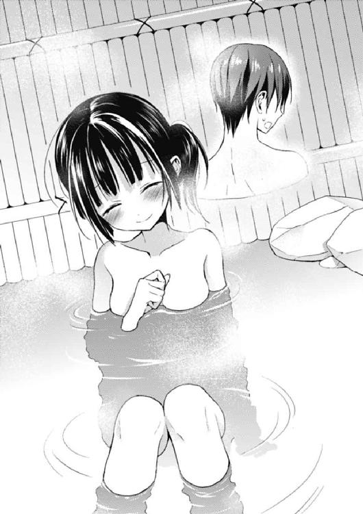

| 彼女たちのメシがマズい１００の理由３ (角川スニーカー文庫) | |
| 高野 小鹿 | |
| KADOKAWA / 角川書店 (2013) | |
彼女たちのメシがマズい100の理由3
高野小鹿

角川スニーカー文庫
本作品の全部または一部を無断で複製、転載、配信、送信したり、ホームページ上に転載したりすることを禁止します。また、本作品の内容を無断で改変、改ざん等を行うことも禁止します。
本作品購入時にご承諾いただいた規約により、有償・無償にかかわらず本作品を第三者に譲渡することはできません。
本作品を示すサムネイルなどのイメージ画像は、再ダウンロード時に予告なく変更される場合があります。
本作品の内容は、底本発行時の取材・執筆内容に基づきます。
本作品は縦書きでレイアウトされています。
また、ご覧になるリーディングシステムにより、表示の差が認められることがあります。
序 夏の幻
それは、数年前のある日の記憶。まだ、俺と妹が同じ家に住んでいた頃の出来事。
「......」
「......」
まだ小学生だった俺は自分の部屋でゲームをやっていた。それが、どの機種だったのかは覚えていないし、この場では重要ではない。
ただ、少なくとも春だった。それだけは、覚えている。
「......なぁ、華凪」
そして、隣には妹の華凪がいた。
──ピタリと、まるで寄り添うように俺へと身体を寄せて。
「どうしたの、兄さん」
耳元で囁く声が脳に届いた瞬間、ゾッと背中に不思議な鳥肌が立った。
華凪は俺が知る限り、誰よりも独特な声質をしている。
甘かったり、冷たかったり、高かったり、低かったり......そのどれでもない。
華凪の声は、ひたすらに鮮明で鮮烈だ。たとえるなら高解像度。声を聞いた人間の感情を鷲摑みにしてしまう、絶対的な浸透力がある。
まるで、それは──魔法の力を帯びているかのように。
「もしかして、お腹空いたの？ それならボク、なにか作って来ようか......？」
前髪で隠れていない左側の瞳を見開き、華凪はクラスでも一番小さな身体を僅かに震わせる。縋るように、仔犬のように、こちらをおずおずと見上げる視線。
相変わらず、うちの妹は可愛さだけなら天下一だった。
「い、いや......別に腹は減ってない......」
だというのに、俺は華凪のことが、どうにも苦手だった。
決して性格的に相性が悪いわけではないと思う。
だが、どれだけ可愛い妹であっても、とにかくこいつが何を考えているかがサッパリ分からないことが華凪を可愛いと思うと同時に、子供心ながらひたすら──不気味で、怖くて、恐ろしく思えたのである。
それに、この頃、華凪はとにかく俺にベッタリだった。別に友達がいないわけでもないだろうに（事実、この頃の華凪は一人称が「ボク」だったのだが、それはクラスで流行っていたからだと聞いている）、学校が終わってから遊びに行くこともなく、ただ、ひたすらに......。
「そっか......でも、もし、なにかあったら言ってほしい。ボク、兄さんがしてほしいことがあるなら、なんでも、やるから」
この妹は──俺と一緒に、いることを望むのだから。
「お、おう......」
「──そうだ。やっぱり、なにか作って来る............ちょっと待ってて」
「あ......お、おい！」
何よりも、俺が華凪のことを恐れる最大の理由。
「出来たよ、兄さん。どうかな......絶対においしいと思うよ？」
「ほ、本当に作って──うぎゃああああああああああああ!?」
しばらくして、華凪が皿を抱えて部屋に戻って来た。
そこに入っていた物体を目撃した瞬間、俺の背筋を寒気が走り、卒倒してしまいそうになる。それはただの鳥肌ではない。身の毛もよだつような悪寒に違いなかった。
なぜなら、皿の中にあったモノは──
「む、虫が......」
「よ、葉介！ 意味分かんないよ！ ね、ねぇちょっと！ ヤバいって！ ──あっ......!?」
声、がする。聞いているだけで、心が落ち着き、更に意識が朦朧としそうになる。
そして、肩。柔らかな、掌の感触。どうにも俺は声の主に身体を揺すられているらしかった。どういうことだ。いったい、何が──？
「愛内ぃ。堂々と寝過ぎだろぉ、お前」
「うおっ!?」
瞬間、後頭部に浅い打撃が炸裂し、俺の意識は覚醒する。辺りを見回す。最初にぼやけた視界に映ったのは見慣れた二年五組の教室だった。
──つまり、俺は授業中にも拘わらず、眠りこけ、夢を見ていたらしい。
「毎度毎度、ぐーすか爆睡しやがって、ったく」
視線を上げる。そこには丸めた国語の教科書を肩口でトントンと叩き、苛立ちを露わにする担任の塚本（三十五歳・二人の子持ち・婿養子）の姿が。
「起こしたんだけど......間に合わなくてゴメンね......」
しかし、左側の席に座る、怒鳴られた俺よりもよっぽど申し訳なさそうな表情を浮かべている幼馴染み──香神紅緒の存在の方が、よっぽど俺の心を打った。
期末テスト明けに行われた席替えで俺、愛内葉介は狙い澄ましたかのように紅緒と隣の席になってしまった。授業中に居眠りしていて叩き起こされただけで、紅緒にこんな顔をさせてしまうというのは随分と酷な話ではないかと思う。
「すんません。夢、いや、悪夢を見てましてですね......というか、先生。俺だけ叩くのとか酷くないすか？ 他にも寝てる奴、沢山いたと思うんですけど......」
などと俺が異議を唱えると、塚本は平然とした様子で、
「丁度、一番叩きやすそうなところに愛内がいたからだ。席替えして、前の方の席になったのだから仕方ないと思え」
「......ええー」
「よぉーし、授業戻るぞ！ 漱石の続きだ。ページは......」
授業再開のために教壇へと戻って行く塚本の背中を見ながら、俺はため息をついた。
心はモヤモヤするし、外はミンミンうるせーし。俺だけ怒られるし、暑いし、漱石とかマジかったるいし──ここ最近、いつも似たようなことを言っている気がするが、それでもあえて言わせて欲しい。
どうしてこんなことになってしまったのだ、と。
けれど、今回ばかりは誰かのせいにすることも出来ない。コレは──俺が、この十六年の人生で作ってしまった大いなるツケなのだから。
俺、愛内葉介には目下のところ、とんでもない悩み事がある。それを纏めるとすると、意外なまでにシンプルな言葉に収まる。曰く──
彼女たち、について。
一人は今の夢に出て来た相手。俺が絶対に向き合わなければならない少女。もう一人は数週間前、その表情を一変させ、俺達にあまりにも鮮烈な印象を残した少女。
愛内華凪。斎藤オメガ。
そして、最後の一人。隣の席で俺がそちらをチラ見していることに全く気付かず、バカ真面目に見惚れるほど整った字でノートを取っている幼馴染み、香神紅緒。
今回は主にこの三人と、もはや恒例になったメシのマズさ──このことについて、俺の悩みは語られるに違いないのだ。
一 はじめてのりょうり
「何をボサッとしているのだ、この愚図が！ もっと鍋を速く振れ！ まるで米がパラパラになってないだろうが!?」
そんな檄が飛んだ瞬間、俺の左足の脛に姉さんのローキックが炸裂した。
それは蹴りを放った本人──俺の姉、愛内龍子の身長百四十五センチの体格からは全く想像出来ないほど強烈な一撃だった。
「イッテエエエエエェェッ!? 合気経験者が素人マジ蹴りすんなっつの!? つぅか、口で言えば分かんのに、なんですぐ姉さんは手が出んだよ！ マジありえねぇ！」
──俺と姉さんは、自宅の厨房で大喧嘩を繰り広げていた。
そして、口論の原因は今俺が行っている驚くべき行為に集約する。
「ふざけているのはどっちだ阿呆が！ それに出たのは手ではない、足だ！ 大体なんだオマエ、さっきから私の言っていることの三割も守れていないではないか!?」
「ンなことねぇよ！ 精一杯やってるっつの！ 五割は行ってるわ！」
「どこがだ！ 何度言っても結果が伴わないから、叩いて分からせるしかない。この姉の愛が何故分からない！ おい、火を使っている時に余所見をするな。危ないだろうが！」
「うっせーよ！ 姉さんが横から口出したり、足出したりするせいだ！」
この日、愛内家の食卓は一つの節目のようなモノを迎えていた。
場所はキッチン。数々の驚愕料理を生み出して来た我が家の象徴でもあり、同時に最も忌々しき場所とも言える空間だ。
そして──今日、ガスコンロの前に立っているのは「彼女たち」の誰でもなかった。姉さんはあくまでサポートに過ぎなかった。
メインは、俺だった。
「りゅ、龍子さん、葉介のことをあまり蹴らないであげて欲しいなーとか......ご、ご不満でしたら私がその、今からでも作るので......」
「二人とも、ケ、ケンカはやめた方がいいんじゃないかとおもいますヨー......？」
こちらの動向を見守っていた紅緒とリリィが遠回しに俺達を宥めようとするが、言い争っている内容が内容のためか、どちらもあまり強く出ることが出来ない。
もはや言うまでもないと思うが、端的に纏めよう。
──この日俺は、人生で初めての料理に挑戦していた。
普通に考えれば料理を全くしたことがない人間の方が珍しいに決まっている。
この国には義務教育があり、義務教育の中には「家庭科」という授業がある。
学校で料理を作る機会が男女共にしっかりと与えられている。高校二年生にもなって、まともに一度も料理をしたことがない人間などいるわけが──
......。
............ええ、はい。それがつまり、俺なんですが。
いや、マジで。
うん。
──マジなんですわ。
理由はたった一言、『実習中に怠けていたから』という回答に辿り着く。
授業で調理実習を行った時、自慢ではないが、基本的に俺は同じ班の男子と遊んでいるか、違う班の男子と遊んでいるか以外の行動を取ったことがなかったのだ。それ故に『せんせー、愛内くんが遊んでて何も手伝ってくれないんですけどー』と幾度となく女子達の非難の声を浴びたことか、枚挙にいとまがない。
しかも、その後に決まって『紅緒ちゃん、愛内くんに何か言ってやってよ』と何故か話が紅緒に振られ（俺と紅緒は小学生の頃から一度も違うクラスになったことがない）、そして何故か毎回、野菜を洗って皮を剝く作業だけを担当している紅緒が『葉介。みんなこう言ってるし、ちゃんとしようよ。ね？』と俺を諭す辺りまで一連の流れになっていた記憶がある。さすが俺だぜ。ガキの頃からマジでどうしようもない。
............はぁ。
ただ、この実習の記憶で注目したいのは、紅緒も学校の調理実習で一度もまともな料理をやったことがなかったという点だ。
おそらくコレは小中学生女子特有の超常めいた感覚──つまり「女の勘」で、『よく分からないけど、紅緒ちゃんには料理をさせてはいけない気がする』と悟っていたからではないかと思うのだ。魔法少女になれるのもこの年頃の少女に限られるわけだし、彼女達に特別な危機察知能力が備わっていたと考えても不思議ではないだろう。
そして話は戻り、記念すべき今日。
「よし、出来たぜ......！」
──俺の手料理第一号が完成したのである。
一方的な打撃を伴う姉弟喧嘩の末ではあるが、何とか出来上がった料理をテーブルへと運んでいく。座って待っていた紅緒とリリィがほわほわした笑みを浮かべて、
「まさか葉介の作ったご飯を食べさせて貰えるなんて、考えたこともなかったなぁ。なんか凄く不思議な感じ！」
「ウフフ、とても楽しみです！」
「......相変わらず二人とも脳天気だな。私達のやり取りを見ていて、よくそんな温かい言葉をこのバカに掛けてやることが出来るというものだ」
と、ここで俺の調理が終わった後、エプロンを洗面所に置きに行っていた姉さんがキッチンに帰って来る。
姉さんはドッカリと椅子に腰を下ろし、薄く日焼けした頰に指の甲を押し当て、深々とため息をつく。そして、ぽえん、とした表情を浮かべている紅緒達に眼を細めて、
「......本当に、期待なんて、するものじゃない」
とても苦々しく言った。
姉さんのあまりに切実な言葉に、二人は面食らったように顔を見合わせ、そして僅かばかりの不安を表情に刻む。動揺。笑顔の花がはらりと散る。
──空気が、ザワつき始める。
「ちょ、ちょっと待てよ、姉さん。そこまで紅緒達を盛り下げなくてもいいだろ」
「なに？」
針で刺すような憤怒を込めて、姉さんが俺を睨みつけた。俺はその視線に気圧され、一瞬息を吞み込んだものの、すぐさま腹に力を込めて言い返す。
「そりゃあ最初だから、そんな上等じゃねーとは思うけどさ。まぁ、その、なんだ」
ゴトリ、と持っていた料理皿を置く。
「まずは、食ってから判断してみてもいいと思うんだよ」
が、現実は、決して甘くはなかった。
「クソマズい。なんだコレは。オマエ、私達を舐めてるのか？」
俺の料理を口にした瞬間、姉さんが半ギレで言う。
「なっ──」
「炒飯は水分が多すぎてグチャグチャだ。油も少ないし、火力も弱いと散々言っただろうが。結果、完全に米同士がくっついて、もはやぬかるんでいると言えるくらいだよ」
「そ、そんな馬鹿な......」
衝撃のあまり、唐突な目眩が俺を襲った。けれど、どれだけ俺が狼狽えようと姉さんの糾弾は止まない。姉さんは炒飯を取り分けた皿を置き、次にテーブル中央の大皿を白いマニキュアの塗られた指先でコツンと一度叩くと、
「もう一品、野菜炒めか。これは、アレだな。加熱時間の問題だ。これも何度も言ったわけだが、野菜というのは加熱すればするほど水を出すモノなのだ。野菜の大きさがバラバラで火が均等に入らないのもそうなのだが......とにかく、この水が良くない。水が出れば出るほど野菜炒めの味は落ちるのだ。だというのに、オマエはもう少し、もう少し、といつまでもフライパンを火から下ろさなかったな。その結果がコレだ」
「う......」
「阿呆が。何が『食ってから判断してみてもいい』だ」
姉さんはお冠だった。眉を顰め、低い声で、心の底から不満そうな表情で俺を叱りつける。俺はまともに言い返すことすら出来ない。
今回俺が作った料理は二品、炒飯と野菜炒めだった。ちなみに、この二品を作ることも俺が決めた。なんというか、初めてやる料理で変に凝った物をやるよりも、この辺りの手頃なところから始めた方がいいと思ったのだ。
炒飯の材料は米、卵、長ネギ、ベーコン。これに塩胡椒と醬油で味を付ける。オーソドックス、故に強い。質実剛健の輝きを目指した一品だ。
対して、野菜炒めには多少拘ったつもりだった。使ったのはキャベツ、もやし、ピーマン、しいたけ、人参。冷蔵庫に入っていた具材で野菜炒めに使用出来そうなモノは出来るだけ投入してみた形だ。というのも、気持ち元気がなくなりかけている食材が非常に多かったのである。
だからこそ俺は考えた。ここで冷蔵庫整理も兼ねて、これらを使ってしまえたのなら、それは非常にクールなことではないのか、と。
だが、結果は──
「そもそも、だ。オマエ、これは一体何人分の料理のつもりだ。野菜炒めは冷蔵庫にあるだけの野菜をとりあえず全部ぶち込めばいい、というものではない。まさか単に野菜を適当に炒めれば、それだけで料理になると勘違いしていないか？ だとしたら、それは大きな間違いだぞ。それは単に料理をした気になっているだけだよ──しかも、だ。これは私ですら手を焼く代物だ。この大ボケめ」
俺を罵倒しつつも、姉さんの箸は止まらない。
が、筋金入りの大食家であり、同時に多くのメシマズ料理に対する耐性を持つ姉さんの食べる速度が、奇妙なことに──はっきりと普段よりも遅かった。
大体、おかしいじゃないか。数キロのステーキすら、ぺろりと完食してしまう姉さんが手を焼くだって？ そんな大袈裟な......。
「そ、そこまで言わなくても......」
「黙れ。私は失望しているのだ。それにオマエのメシを食べていると、無性に苛々してくるのだ。これはとんでもないことだぞ」
「うぅっ......！ で、でもソレは姉さんの感想なわけで、人によって感想は違って来てもおかしくねぇんじゃ......!?」
「ほう？」ギンッ、と姉さんの鋭い眼光が俺に突き刺さる。「まだそんな大層な口が利けるのか......我が弟ながら、往生際が悪いな。仕方ない──リリィ、何か言ってやれ」
俺を一瞥した後、姉さんはリリィへと話を振った。
リリィ＝アップルガース。
金色の髪と碧色の瞳、そして明るい笑顔。まるで妖精のように可憐で、天使のように優しい──我が家のアイドル的存在である。
お、落ち着け。落ち着くんだ俺。リリィのことを平気で弟をボコスカ殴る鬼姉なんぞと比べる方が失礼だ。つまり、もう酷評の峠は越えたはず。これ以上の事態には──
「............エエト」
あ、れ？
「リ、リリィ......ど、どうしたの......？」
「す、すいません、ヨースケ......ワ、ワタシ、どうすればいいのか......」
野菜炒めを摘むリリィの箸先が揺れる。
──不思議なことにリリィは俺の知る限り、どの日本人よりも箸を使うのが上手だ。
ピッと伸びた背筋、貞淑で落ち着いた物腰、雪のように白い指先──日本とイギリスという、二つの国のハーフであるリリィだからこそ、成立する特異性だ。
そんな──お手本のように整った箸先が、かすかに乱れていた。
普段の満開の花のように華やかな表情には影が差し、視線は落ち、声は沈んでしまっている。背中も丸まり、見るからにしょんぼりしている。
「......あの。ヨースケ、」リリィが俺の方を見つめて、訊いた。「どうこたえれば、ワタシ、ヨースケを傷つけずにすみますか......？」
「えっ──」
「ヨースケがはじめてつくってくれた料理なのに......ど、どうしてワタシはこんな気持ちになってしまっているのでしょう......自分が......イヤになります......」
そこには「マズい」の言葉はなかった。
けれど、この一言は直截的な表現を見事に超越するだけの切れ味を秘めていたのだ。
無垢、それ故の刃。俺のことを心の底から気遣ってくれている気持ちが真摯に伝わって来るからこそ、皮肉にもリリィの言葉は姉さんの何倍も俺の心を抉ったのである。
「......これは『食べた人間を不幸にする料理』だな」
ウェーブの掛かった黒髪を搔き上げ、姉さんがぽつりと言った。「失敗の仕方が典型的過ぎるのも追い打ちだな......またムカムカして来た。葉介、少し殴らせろ」
「な、なんだよ、その理不尽な感想!?」
「理不尽などではない。ただの本音だ。それに、オマエの料理を食べて苛々しているのは私だけじゃないぞ。リリィですら『このバカ、なんでこんな料理が作れるんだ？』という顔をしている」
「そ、そんなことはっ！ ヨ、ヨースケのことをバカだなんて、ワタシ、そんなことおもってないです！ ただ、少し『おいしくないなぁ』とおもっただけで......！」
「やはり、か。そうだと思った。リリィもおいしくないと感じていたわけだ」
「はわっ!? ソ、ソレは......リュ、リューコ、卑怯です！ ユウドージンモンです！」
大炎上。
もう俺の心はボロボロだった。姉さんに唆された結果、ついにリリィにまで『おいしくない』という率直過ぎる感想を言われてしまう始末。
感情が込み上げる。山のような後悔、申し訳なさ......そして俺は初めて実感したのである──料理を食べて貰った相手に不評を買ってしまうこと、そのやるせなさを。
その時だった。
「龍子さんもリリィも、おかしいよ。だって全然おいしいじゃん、これ」
今の今まで黙り込んでいた最後の一人が、おもむろに口を開いたのである。
紅緒だった。
「葉介！ これ、凄くおいしいよ」
「え、あ......」
紅緒に名前を力強く呼ばれ、俺は僅かながらに狼狽えてしまった。
──おいしい。
不意にもたらされた、一番欲しかった言葉。紅緒が続けた。
「初めてなのに、こんなおいしい料理が作れるなんて、本当に凄いと思う！」
屈託のない、満面の笑み。
それだけがそこにあって、紅緒は俺だけを見てくれていて──そして、本当においしそうに、俺が作った料理を食べてくれていたのだが、ここで姉さんが、
「香神、甘やかすな。この馬鹿がつけ上がる」
「そんなことないですよ、龍子さん！ だってこれ、本当においしいです！」
「......そう、だったな。お前は何を食べても本気で答えられる馬鹿だったな......」
その反応に口を挟むが、紅緒の素直過ぎる反応を見て、口を噤んでしまった。
──ここ最近、紅緒と姉さんの関係は大きく変化していた。
なんというか、姉さんが紅緒に対して妙に優しくなったのだ。ほんの最近まで、様々なことに文句を付けては、泣かしに掛かっていたというのに。
例の件が解決してから、料理以外のことも姉さんは紅緒に任せるようになった。もちろん紅緒は姉さんに頼まれたことは一切断らないし、むしろそれを非常に光栄に思っているらしくて、二つ返事で請け合って、それらを完璧にこなしてしまう。
姉さんは紅緒をどうも、可愛がっているようなのだ──間違いなく、実の弟である俺よりも。
「............」
しかし、ここで肝心なのは紅緒が俺に向けてくれた「おいしい」という言葉についてだった。俺は、相も変わらず、ひたすらに真っ直ぐな幼馴染みに対して、
「......いくら何でも、それは言い過ぎだろ。言うほど、ウマいもんじゃねぇって」
捻くれた言葉で答えることしか出来なかった。
すると、紅緒は不満そうに唇を尖らせて、
「変な葉介。最初は結構自信ありそうだったのに」
炒飯をレンゲで掬い取り、はむりと口に運ぶ。ゆっくりと、米同士が絶妙なグチョ付き加減を発揮しているそれを嚥下する。
紅緒はふむむ、と少しだけ、考え込むような表情を浮かべ、そして。
「ほら。やっぱり、ちゃんとおいしい」
「っ......！」
「思うんだけどさ、龍子さんは葉介の料理が『食べた人間を不幸にする料理』だって言ってたけど、それはきっと違うよ。だって、」
へらっ、と笑った。
「私は今、凄く幸せだもの」
「............」
でも、と言葉を切って、紅緒が眉間に皺を寄せ、
「葉介がこんなにおいしい料理が作れるとか......先に私の方が『おいしい』って言わされちゃうなんて思わなかったよ。はあああああぁ......全然駄目だなぁ、私」
自嘲の籠もった乾いた笑いを口元に浮かべた。ほんの一瞬ではあったけれど──そこには微かな絶望が垣間見えた気がした。
そして、俺の胸は締め付けられるような想いに囚われる。
どうしようもない気持ちでいっぱいになる。
自分の作った料理をおいしいと言って貰えることが、こんなにも嬉しいことだなんて俺は知らなかったし、紅緒がおいしいと言ってくれるならば、紅緒のためだけに料理を作っても構わないとすら思う。
紅緒が俺の料理を食べて、笑顔を向けてくれる瞬間をもっと体験してみたいと思う。
けれど、それじゃあ駄目だとも、思うのだ。
どれだけ素晴らしい笑顔で紅緒が俺のメシを食べてくれるとしても、その後に、自分の料理と比較して、アイツが自己嫌悪で悲しむ表情を浮かべるのだとしたら──俺は料理なんてするべきじゃない。そんなことを俺は、今、強く感じたのだ。
特別な感情で、もって。
......これは姉さんに直訴して、料理担当だけは勘弁して貰うしかないだろう。
幸い、俺の料理は大不評だった。要求は通りやすいはずだ。
難しいことではないと思う。散々な目にあったが、それだけは不幸中の幸いと言えるかもしれなかった。きっと、その方が、いい。
「ところで、だ。少し、聞きたいことがある」
そして、何とか俺の作った料理がなくなり、一段落付いた辺りだった。龍子姉さんが居住まいを正し、おもむろに俺に尋ねた。
「葉介。学校は、今週いっぱいで終わりでいいんだったな？」
「ん。ああ、そうだよ。金曜が終業式で、土曜から夏休み」
「そうか。それと──」
僅かに首を捻り、姉さんは冷蔵庫に貼られたカレンダーを確認する。そしてそのままカレンダーを眺め、改めて確認するように言った。
「保護者面談が来週か。葉介、リリィ。二人とも、同じ日でいいんだったな」
「そうです！」
「まぁ......うん......」
そう──もう、そんな時期なのである。
今が七月の下旬、もうあと数日で、俺達の通う高校は夏休みに入る。そして、その出鼻を挫くかのように、夏休みの一週目に保護者面談という非常に気の滅入るイベントが控えている。姉さんが学校に来てしまう。お袋が来るのもイヤだが、姉さんはその倍はイヤだ。どうせゴスロリだし、しかも何気に卒業生だし......進路どうしよう......はぁああ......。
「なるほど。では、香神。オマエの家の面談はいつになる？」
ここで、姉さんが唐突に紅緒へと話を振った。紅緒は僅かに狼狽えながら、
「わ、私ですか？」
「ああ。何日頃の予定だ？」
「えと......うちは再来週の土曜ですね。お母さんだけじゃなくて、お父さんも面談に来ることになったので、クラスでも一番後なんです。お父さんの仕事の都合で」
「ふむ。わざわざ仕事を調整してまでとは。お父上は随分と教育熱心なのだな」
「いやぁ、その。なんでしょう......。別にお父さんは教育そのものというよりは、単に私に熱心なだけと言いますか......あはは......」
紅緒が苦笑する。
一般的に「三者面談」という単語が使われるように、わざわざ父親が進路面談にやって来るどころか両親揃って参加するのは中々珍しいケースに違いない。
が、紅緒の家ならば、まぁそうなるだろうな、とも思うわけで......うん。
「ふむ......まぁ、お父上のことは一度置いておくとしよう。ちなみに、今週の土日は何か予定が入っていたりするのか？」
「土日は特にないです。あとはお母さんにお料理を習ったりとか。私、誰かに色々言われながら料理作るのって凄く苦手なんですけど、お母さんだけは別なんです！」
「「「............」」」
瞬間、俺と姉さんだけでなく、にこにこ笑顔でストロベリー味のポテトチップを食べつつ、今の話を聞いていたリリィまでもが、その動作を停止させ、眼を逸らした。
脳裏に、この状況を見事に表す単語が浮上する。
曰く──中和。
つまり「蛙の子は蛙」ということだ............紅緒が自分の圧倒的なメシマズっぷりに気付いたのがつい最近だった以上、そんな彼女を育て上げ、香神家の台所を切り盛りしていた人物が......タダ者であるはずがないのだった。
ゴホン、と姉さんがおもむろに咳払いをする。
「......そちらの話も一度置いておくとしようか。話を戻すぞ──つまり外せない用事があるわけではないのだな？」
「そう、ですね。特に何か予定があるわけじゃないです」
「なるほど。それは都合がいい」
「......なぁ姉さん。紅緒にそんな色々訊いて、今週なんかあんのかよ？」
「あるぞ。大切なイベントが。ちょっと待っていろ」
言いながら、姉さんがスッと立ち上がる。そして部屋の隅に置かれたチェストの前へと歩いて行くと、棚の中身を漁り始めたのである。
そして。
「私がオマエ達に伝えたかったのは、コレだ」
机の上にパサリと、開封した封筒を置いた。中に入っていたのは──
「オゥ？ これはチケットでしょうか。沢山ありますネ」
「チケット......？ それって──ハッ！ も、もしかして......龍子さん、コ、コンサートのお誘いとかでしょうか!? 私と一緒に!? もしくは野球とかですか!? 行きます、超行きます！ 私、あんまり野球は詳しくないんですけど、是非とも──」
急にテンションを上げた紅緒が言いかけて、封筒の中に入っていたチケットの文面を確認し、不意に動作を止めた。続くのは「......あれれ？」という怪訝な声。
それも、そのはずだ。
確かにそれはチケットだった。しかし、その種類は音楽でも演劇でもなく、果ては映画でもスポーツ関係でもなかった。
なにしろ、中に入っていたのは──学園祭のチケットだったのだから。
姉さんが言った。
「今週の土日、山茶花女学院で学園祭が開催される。あそこの学園祭は、保護者にだけ配付される、このチケットがなければ入場することが出来ないのだ。そして、丁度このチケットがここに四枚存在する。父上、母上、私、葉介......本来の構成員たる四人分だ。そういうわけで香神──オマエにも同行して貰いたい......と、そうだ、丁度いいタイミングだ。これからご両親にご挨拶に行こうか。嫁入り前の他所の娘を外泊させるのだから──」
「ちょ、ちょっと待てよ、姉さん!? 紅緒が外泊って......!? そもそも山茶花女学院の学園祭っつーことは、それってつまり......！」
「ああ。決まっているだろう」
俺の動揺を見透かしたのだろう、ピシャリと姉さんが明白な答えでもって応じた。
「今週、私達は......華凪に会いに行く。香神を含め──ここにいる全員で、だ」
「なっ......！」
「この間、倫敦紅茶館でオマエが斎藤オメガに怒鳴り散らされたことがあったな。その時の話の続きさ。直接会って話さなければ、解決出来ない問題だよ、これは──というわけで、二泊三日で家族旅行といこうじゃないか。もちろん目的地は、」
にやり、と姉さんが笑った。
「長野県長野市。良いところだぞ──美味いモノも沢山ある」
二 go to the insects world
そうしてあっという間に時は過ぎ、二泊三日の長野旅行がスタートする。
文化祭は今日、土曜日の午前から明日の日曜日まで。俺達は土日で連泊して、月曜日に東京へと帰ってくる形だ。
俺達が住んでいるのは東京の二十三区外多摩エリア、神奈川に近い場所である。となれば、この辺りから長野へと向かう最もメジャーなルートは自ずと一つに決まって来る。
「オー、これがシンカンセンなのですネ！ とてもかっこいいです！」
「このデザインは少し特殊だがな......っと、ここだな。香神、リリィ。奥に詰めろ。私と葉介が通路側に座った方がいいだろう」
鉄道──新幹線だ。
ルートとしては在来線を乗り継いで一度新宿に出る。次に山手線に乗って上野へと向かい、そこから長野新幹線「あさま」を使って長野駅を目指すことになる。
「は、はい。わかりました、龍子さん。で、でも......本当にいいんですか？」
姉さんに促され、ボックス席の窓側へと身体を滑り込ませながら紅緒が尋ねる。
山側に向かうとはいえ別に登山やキャンプをするわけでもないので、紅緒の格好は非常にゆったりしたものだった。
上は若干丈が長い白色のショートワンピだ。脇腹の辺りにベルトがあしらわれているデザインで腰回りがキュッと締まって見える。その上にはダボッとした薄緑のカーディガンを羽織り、足元はこちらも白色のミュール。荷物が入っているソフトキャリーケースは女の子らしい丸みを帯びたフォルムで色は深い赤色だ。
紅緒らしく清楚な印象が強く窺えるコーディネートだった。
「しつこい奴だな。私が頼んで同行して貰っているのだ。旅費を持つのは当然だろう」
「で、でも、新幹線代とか宿泊費とか、結構な金額だと思いますし......」
そうなのだ。
今回の旅行において、紅緒の分の料金まで全て我が家が負担している。紅緒はこの旅行に同行することになってから、それを気にしっぱなしなのである。
正直考え過ぎ、だと思うのだが。
こう見えて結構稼いでいる姉さんが奢ってくれると言っているのだ。軽い気分で世話になってもいいじゃん、みたいな。
「ヨースケ、楽しみですネ！ ベニオも一緒なのです！」
パァッと向日葵の花のような輝かしい笑みを浮かべ、隣の座席に座ったリリィがとても嬉しそうに言う。膝の上に麻で出来た少し大きめのトートバッグがちょこんと載っている。
──まさに「夏」という感じがする。
リリィの服装は、紅緒よりも大いに活動的だった。水色のキャミソールブラウスにデニムのショートパンツ。足元は黒のハイカットスニーカー。非常にラフな格好だ。特に脚線美と肉付きの良さを両立した脚全体にどうしても目が行ってしまう。
それにしても、リリィはいつも元気一杯だ。
この笑顔を見ているだけで、最近悩みっぱなしな俺の心が本当に軽くなったように感じるのだから、やっぱりリリィは凄い。心の底から俺はそう思う。
「わっ！ うごきだしました！ デ、デンシャよりすごく速いです！」
丁度、この辺りで「あさま」が発車し、リリィが窓の外を見ながら目を白黒させた。
リリィの肩越しに覗く新幹線の窓──そこに映る空は清々しいほどに青く、爛々と煌めく太陽の光は起床したばかりの眼には正直、毒々しい。
走馬燈のように「現れては消える」を繰り返す窓枠の外の世界。そんなモノを眺めてたせいか、胸の奥に漠然とした不安が浮かび上がった。そうなのだ。これから、俺は──
「葉介」
不意に名前を呼ばれる。
ハッとなり、俺は視線を正面へと戻す。そこでは──足を組んだ悠然とした佇まいで、姉さんが小さく笑っていた。
姉さんの服は言ってしまえばサマードレスだ。
だが、妙にゴテゴテしたデザインで、そもそも色も黒色である。サマードレス特有の涼しげな感じは皆無。家から出て来た時なんて日傘差してやがったからな。ゴスをやる方ってのは、夏はむしろ気合を入れないといけない掟でもあるんですかねぇ......。
「随分と浮かない顔をしているな」
「い、いや、別に......」
「取り繕う必要はない、」座席のアームレストに肘を載せ、姉さんは右手で頰杖を突きながら、言う。「華凪のことを考えているのだろう？」
「......まぁ、」ここで誤魔化しても仕方ねぇか。「一応、そうだけど」
「やはりか。好きなだけ悩めばいいさ。無責任なようだが、私が何を言ってもアイツは納得しない。どうなるかは、葉介次第だよ」
と、ここで。
「あの、そういえば、ちょっとお訊きしたいんですが、いいでしょうか？」
「どうした。言ってみろ」
「はい。その......」
斜向かいに座る紅緒が僅かに声を潜める。
「──この前、オメガちゃんが、葉介にマジギレしたことがあったじゃないですか」
「っ......」
知らず知らずの内に、息を吞んでいた。あの時の話題だ。紅緒が続ける。
「あの時、慌てて神市さんが私達、全員を帰らせましたよね。で──その後、有耶無耶になっちゃいました。実は私、未だにその辺の詳しい事情がよく分からないんです。どうしてオメガちゃんはあんなに怒っていたんでしょう？ 葉介が華凪ちゃんのお兄さんだと何か問題があるんですか？」
──あの日以来、俺は倫敦紅茶館に顔を出していない。
正確にはあの後すぐ店の外へと連れ出された俺達は『今日はちょっと帰って貰えると嬉しい。それと葉介くん。君はしばらくここには来ない方がいいと思う。うちのお嬢は華凪ちゃんのことになると、ちょっと冗談が通じないんだ』などと神市さんに言われ、店を後にしたのである。そして、オメガとの接触はそれっきりになっていた。
その後、俺にだけ、姉さんから事の次第が伝えられたわけだが......それはつまり、今回の長野旅行に参加しているメンバーのうち二人もの人間が──何故、自分達が長野に行くことになったかの理由を理解していないことの証明でもある。
要するに、まるでワケが分かっていないのは、紅緒だけではない。
「ムムム！ ベニオがワタシがおもっていることをいってくれたようです！」
そもそも華凪と会ったことすらない──リリィも、そうなのだ。リリィがキュッと手を握りしめて、
「このままではワタシ、ナガノにあそびにいくだけになってしまいます！ ワタシもみんなのお役にたちたいです！」
力強い口調で言う。紅緒も相槌を打って、「このままじゃあ、全然事情が分からないままで戦力外だと思うんです！ 私だって華凪ちゃんに会ったのは三年前が最後で......いや、実はそもそも話したこと自体がほとんどないんですけど──」
そこまで言い掛けて、紅緒はグイッと眉間に皺を刻み、
「あ......そういえば、」
表情を、曇らせた。
「華凪ちゃんって東京に一度も帰って来てないんですよね。その......ずーっと訊かない方がいいかな、って思ってたんですけど......それって何か理由が......？」
「「............」」
一瞬、顔を見合わせ、俺達姉弟は沈黙した。が、すぐさま。
「......列車も走り出したことだ。頃合いとしては悪くないだろう」
姉さんが窓の向こうを眺めながら、ぽつりと言った。「......軽く、朝食でも取りながら話すとしようか」
「あ。ステキだと思います！」
「そうですネ。まだ今日はなにもたべていませんし！」
姉さんの言葉に、紅緒とリリィも快く頷いた。
「そもそも上野というのは東京において、北への玄関口になる重要な駅だ。そのため全国津々浦々の駅弁を取り扱っている売店が多くあるのさ。本来ならば目的地に応じたモノを食べるべきだが、さすがにそう頻繁に旅行へは行けないからな」
新幹線に乗り込むまで、姉さんだけ何故か別行動を取っていたのだが、まさか駅弁を買い漁りに行っていたとは......姉さんらしいというか、何というか。ただ問題は、そんな姉さんが買って来た「弁当の数」である。
「まぁ、列車の旅で駅弁っつーのは素晴らしいと思うぜ。でも、」
姉さんの膝上に広げられた簡易駅弁コーナーを苦々しく見下ろし、言う。
「......さすがにこれ、多過ぎじゃね？」
だから、量が多すぎるんだっつぅの──ずらりと揃った「ご当地」色の強い駅弁達を眺めながら俺は強く思う。
姉さんの買って来た弁当は、パッケージからして非常にウマそうなものばかりだった。
軽く挙げると「富山ますのすし」「網焼き仙臺味噌仕立て牛たん弁当」「高崎名物だるま弁当」などの駅弁に対して詳しくない俺ですらピンと来る定番弁当ばかり。
おそらく、姉さんはあえてそういうチョイスをしたに違いない──姉さんが俺に食べさせたがるモノは、いつだってウマいモノばかりなのだ。
「余れば私と葉介で食えばいい」
当たり前のように、姉さんが言う。俺は頭を抱えながら、
「またそういうことを......って、ビールまであんじゃねぇか！ まだ午前中だぞ。もう吞むのかよ!?」
「旅行なのだから別に構わんだろう。ちなみに、弁当は好きなだけ食っていいが、酒は私の分だけだぞ。飲酒は二十歳になってからだ」
「分かってるよ、ンなことは！」
だから最初のうちは何も問題はない。上等な味に酔いしれることが出来る。ただし、姉さんが俺に食べさせるモノは、とにかく量が多い。
そして──決して残させない。
どれだけ美味しい料理だとしても胃袋の許容量を超えた場合、そのウマさはマズさへと反転するのだ。
「......なんか、意外だな」
ただし、俺としてはそれ以外にも、少しだけ不思議に感じる部分もあるわけで。
「どうしたの、葉介。そんなにじーっと私の方見られると、嬉しくなっちゃうじゃん」
にへらと、幸せそうな笑顔で、相変わらずのド直球を。
嬉しく、ってお前......なぁ？
結果、俺はそんな幼馴染みに気の利いたツッコミを入れることも出来ず、
「......そこは恥ずかしくとかの方が適当だと思うんだけど......つーか、そういうことじゃなくてだな。俺はちょっと変だと思ったわけ」
「変って？」紅緒が尋ねる。
「いやさ。いつものお前なら、率先してなんか作って来そうだなって思ったんだよ。そんだけ。あ、言っとくけど『作って来い』って言ってるわけじゃねーし、責めてるわけでもねーから。ちょっと気になっただけだよ、マジで。そんだけ」
──こういうとき、一番張り切りそうな紅緒が、特に何も食べ物を用意して来なかった。
それがこの些細な違和感の正体だった。すると、
「......うっわー、」
紅緒がまじまじと俺の方を見た。そして。
「私の行動パターン、完全に読まれてる......伊達に十七年幼馴染みやってないよね......」
ぺちぺちぺちと気の抜けた拍手をした。
「あのね。作ったんだよ、私も。旅費とかお世話になりっぱなしじゃ申し訳ないし、またマズいって言われちゃうかもしれないけど、葉介はそれでも食べてくれるって言うから甘えちゃっても良いのかな、とか最近思ったりもして、でも余った分は私が食べれば何とかなるんじゃないかな、みたいに思って。でもね、」
紅緒の言葉が止まった。
そして、視線を逸らし、僅かに頰を染め上げながら、
「これ、すっごく言うの恥ずかしいんだけど──実は、お父さんに食べられちゃったの」
「お父さんって......え、なんで？」
意外な人物の名前が。
「私、今日は『おにぎり』を作って持ってこようと思ってたの。列車の中でも気軽に食べられるようにね。でも、出来上がってちょっと目を離したら、その隙にお父さんが作った分を全部食べちゃってたんだ......」
「オー。ベニオのパパはくいしんぼうなのですネ」
「そ、そういうわけじゃないと思うんだけど......。お父さん、まだ私がこっちの家に出入りすることに納得してない感じがあるから......こ、この話題はおしまいっ！ 龍子さんの買ってくれたお弁当があるんだし！」
紅緒が本当に恥ずかしそうに無理矢理、話題を切り上げた。
実際、作った弁当を父親に食べられたなどと告白するのは、娘の側からすれば相当な罰ゲームに違いない。基本、年がら年中へらへらしている紅緒なのだが、父親の話題だけは苦笑しっぱなしな印象が強かった。
ただ、これ以上ツッコミを入れるのも野暮だろう。ただ、紅緒がいったいどんなおにぎりを持って来るつもりだったのか、凄く、気になるのも確かで。訊いてみたかった。
『どんなものを作ったんだ？』と。
けれど、そこまで紅緒の料理に興味津々なのは、どうかとも思う。
なぜなら、それではまるで──俺が紅緒のメシを食べたくて仕方がない人みたいになってしまうからだ。
違う。そんなわけがない。当たり前の話だが、俺は別にマズいメシが好きなわけではないのだ。ただ紅緒が頑張って作っているから、最終的にアイツの料理がちゃんとウマくなるなら食べてもいいと思っているだけであって──
「......おいおい」
ここまで自問自答を繰り返して、はたと気付き、そして戦慄する。
──紅緒の料理が食べられなかったことに、もしかして、俺は物足りなさを感じてやしないだろうか、と。
あまりにも、恐ろしいことだぞ、これは......。
それはまるで、今まさに話題に上った香神氏と同じではないか。
『紅緒の料理を食べると癒される』などと宣ってしまうような、いかに本人は幸せだとしても絶対に何かが間違っていると断言出来る領域に突入してしまうのだから。
「......華凪の話を理解するには二つのポイントがあるのさ。一つは華凪がわざわざ東京ではなく、長野の学校に進学したことだ」
ぽつりと。
ここで絶好のタイミングで、姉さんが話の舵を取り始める。
「華凪はうちの家の人間とは思えないほどに、とんでもなく利口な子だ。ただ、山茶花女子は全国有数の進学校だが、あそこと同じくらいの偏差値の学校は都内にも存在する。普通なら山女なんて学校に入学しようとは思わないし、親もさせないよ。華凪が山茶花女子に入った理由はな──二人に距離を置かせるためだったのさ」
「距離を......？」
「一緒にくらしてはいけない理由があったのでしょうか......」
紅緒とリリィがよく分かっていないような表情を浮かべる。
多分、その理由にピンと来ないせいだ。それもそうだろう。兄妹の間でそんな配慮をするなんて、あまり一般的なことではない。
僅かに沈黙。
会話が止まり、他の乗客の話し声が絶えず続く車内がその輪郭を浮き彫りにする。キンキンに効いたエアコンの涼風が首筋を撫でる。
姉さんが言った。
「オマエ達の言いたいことは分かるが──正直、かなり危なかったのだ。このまま葉介と華凪を一緒に住まわせておいたら、本当に葉介の身が危険になるところだった」
「「............」」
一瞬、二人の反応が遅れた。けれど、すぐさま。
「「えっ？」」
異口同音。揃い踏みした驚愕。
二つの視線が、一瞬で姉さんに集中する。俺は気まずそうに顔を逸らし、姉さんは小さなため息をついた。
「あまり具体的な言葉で語りたくはないのだが......ただ──うちの妹はガチだった。どうかな......通じなくても構わない。ただ、察しては、欲しい。仕方がなかったのだ」
つまり、そういうことなのだ。
──華凪は、本気だった............らしい。
当事者の俺が「らしい」と推定系なのは、要はそういう感情を当時の俺が全然理解出来ていなかったからだ。
今思えば華凪の行動は露骨におかし過ぎたのだが、むしろ俺は最近まで、妹とはこの手の異常な愛情を示す非常識な生き物だとばかり思い込んでいたのだから。
兄貴に無理矢理虫料理を食わせたり、小六になっても毎回一緒に風呂に入ろうとしてきたり、気付けば一緒のベッドで寝ていたり──そういうことをしたがるヤバい生き物だと誤解していたのだ。実際は、全然そんなことはなかったようなのだが。
──そして、そんな異常なマイシスターの真実を初めて知り、大変なことになってしまう者もいた。
日本語のスラング的表現をよく理解出来ずに「『ガチ』というのはどういうことでしょう？」などと、首を傾げているリリィはともかくとして......問題は、紅緒だ。
「..................」
押し黙り、そして何故かニコーと笑ったままの完全停止。
バッチリ意味が通じてしまったらしい紅緒は、姉さんの言葉を聞いた瞬間、完全に固まってしまい、微動だにしな──って、ちげぇ！
左手、だ。
座席のアームレストを摑んだ左手が、まるで着の身着のままで雪原の中に放り出されたかの如く、ぶるぶると震えていることに俺は気付いてしまう。
ヤバい！ メッチャ動揺してる！
「とはいえ、これは過ぎた話だ。妹のためにも、一度流してくれ。続けるぞ」
姉さんは弁当と一緒に買って来たヱビスビールの三五〇ミリ缶を真っ昼間からガブガブと吞みながら、少し真面目な顔をした。紅緒は凍りついたままだった。
「結果、華凪が丁度進学する中学を選んでいた頃に家族会議が行われ、山女を受験すると決めた辺りから華凪の様子はおかしかったようなのだが──どうも入学後、決定的に奴の心境に変化があったらしいのだ。なにしろ急に『兄さんとは絶対会いたくない』と言うようになってしまったのだから。それがもう三年続いていたのさ」
山女に進学した華凪が一番初めの長期休暇を迎えた時の話だ。その時、俺はお袋に『そういえば、華凪はいつ頃帰って来る？』と尋ねた。すると、お袋はこう答えた。
『華凪が帰って来たくないって言ってるの』と。
そのやり取りは夏冬の長期休暇があるごとに三年間、都度六回に亘って繰り返された。
溺愛から一転しての──拒絶。それが、俺達兄妹の現状だった。
理由は分からない。とはいえ、この「どうして華凪が東京に帰って来なくなってしまったのか」という疑問は、今回非常に重要なポイントになってくるはずだった。
ただ、『華凪は俺のことが大好きだった』という説明が過去のモノになってしまっている......これは紛れもない事実で。
「ただ、つい最近、母上の方から私に電話があった。一度、時間が出来たら、葉介を連れて華凪に会いに行ってくれないか、と」
「キョーカから、ですか？ どうしてなのでしょう？」
「──学校の成績さ」
リリィのサンドイッチをぱくぱくと、自分の「網焼き仙臺味噌仕立て牛たん弁当」をバクバク食べながら姉さんが言った。
「華凪の成績がここ最近ガクッと落ちていて、次の認定試験に残れるかどうか怪しくなって来たらしい。そして奨学金が取れないとなると、我が家の懐事情では華凪を山茶花に通わせることは出来ない。下手な私立医大以上なのだ、ここの授業料やら寮費は」
華凪は「特別奨学生」という返済不要の奨学制度で山茶花に通っている。
だが、最初に奨学生として入学してしまえば卒業まで完全無償というほど山女は甘い学校ではない。ある一定の期間ごとに試験を受けて、追加認定を受ける必要があるのだ。
当然、学費が払えなくなれば──中途退学にならざるを得ない。
「『残念ながら我が家はそこまで裕福な家庭ではありません』と強く念を押された」
「............」
切ない。
あまりにも、世知辛過ぎる告白だった。共働きとはいえ、このご時世、子供が三人いて都内にマイホームを所有する愛内家の財政が、非常に危機的なライン上にあることは火を見るより明らかだった。ローンだって、きっと、残っているのだ。
「ええと、リリィ。補足すると、俺がお袋に指名された理由は、姉さん一人で行くと大変なことになるのが目に見えているからなんだ。だって、」
ごくり、と俺は息を吞んだ。
「姉さんは、間違いなく『たるんでる』って理由で──華凪をブッ飛ばすからさ」
大変になるのは誰でもない、華凪本人なのである。
ちなみに幼少の頃からダメっぷりに定評があった我らが兄妹は、長女である龍子姉さんに事ある毎に説教され、折檻されて育った。大して矯正されなかったわけだが。
そして重要なのは生粋の野蛮人である姉さんの拳は、弟の俺だけでなく──妹の華凪にも注がれるという点だ。もちろん投げ飛ばされたり、ボディブローや回し蹴りを食らったり、関節技を極められるのは男である俺だけで、女の子である華凪は、もう少しソフトな方法なわけだけどさ。
姉さんが腕を組み、不満げに言う。
「持ち上がりのお嬢様校とはいえ、今まで華凪は何とかやれていたのだぞ。それが高校に上がった途端、成績がガタ落ちするだなどと、気の緩みに他ならないだろう。一発気合を入れてやるのが一番アイツのためになるというものだ」
ご覧の通り、既に姉さんは華凪に攻撃を加える気満々なのだった。いったいこの姉はどこの戦闘民族出身だというのか。そりゃあお袋も俺を同行させたがるに違いない。
......ま、どちらにしろ、お袋から姉さんが長野に行くって聞いたら、俺も付いて行ったとは思うんだけどさ。
とはいえ──何故、華凪の成績は落ちたのか？
これまで山茶花女学院で上手くやっていた華凪が突然、変化してしまった理由。それこそが今回の旅行の要点となる──のだが。
「紅緒。お前、大丈夫か？」
斜向かいの彼女は、気が付けば上の空といった状態だった。
「............えっ？」
「......大丈夫じゃ、なさそうだな」
「っ──そ、そそそそそんなことない、ないよ！ うん。ない......ない、と思う......っていうか、なにがないんだっけ......？」
俺に、訊かないでくれ。
「......ね、ねぇ、葉介。怒らないでね」
「なにがだよ」
「う、うん。華凪ちゃんが、その、ガチ系だった......ってのは、私、初めて知ったわけなんだけど──」
紅緒が、物凄く不安そうな目で問い掛ける。
「実は葉介にも──妹属性とか、あったりするの？」
「ねぇよ！」
「ホント？」
「本当だよ！」
どうも紅緒の奴は「俺が華凪の好意に応えてしまわないかどうか」という、非常に洒落にならない部分がとても気になっていたらしい。
なるほど──俺は妹でも構わず食っちまう男なんだぜ、ってか？
バーカ。いくら何でもそりゃねーよ。
この世でリアル姉とリアル妹ほど恋愛対象に向かない存在はいないってことは、俺の十六年間の人生における確固たる真実なのだから。
◇ ◇ ◇ ◇ ◇ ◇
上野駅から長野駅まで、一時間半。今日明日と宿泊する旅館「白水」に大きな荷物を置いた俺達は、長野駅から出ていた専用のシャトルバス（ちなみに、バスに乗っていたのは俺達だけだった）で数十分ほど揺られた後、目的地に到着していた。
「金持ちって感じだなぁ」
「凄いよねぇ」
「ワタシがイングランドでかよっていた学校よりも大きいです」
バスから降りた俺達三人は、揃って感嘆のため息を漏らした。
山茶花女学院は、まさに「大規模型・女の園」とも言うべき特殊な空間だった。敷地全体は赤土色の高い煉瓦塀で囲まれている。ただし、例えば一般的な刑務所のように重圧的で物々しい造りというわけではなく、まるでイギリスのパブリックスクールを彷彿とさせる華やかでお洒落な明るい雰囲気を纏っていた。
「山女は幼稚舎も持っていて、そちらは東京のド真ん中、千代田区にある。中学からがこちらだな。中等部と高等部が入っていて、八百人弱の学生を収容出来るだけの学生寮も備えているらしい。当然、最新鋭の設備が揃っている。それなりの大きさにもなるさ」
「はー」
「ここの生徒は携帯の所持が禁止されている。よくあるような、形だけの規制ではないぞ？ 携帯電話を契約するだけで、重い罰則が科せられるそうだ。加えて、テレビやネット回線も限定的にしか使用出来ない。超富裕層の子女に中高の六年間、長期休暇の時期を除いて、世間と隔絶された生活を送らせる──俗世に一切汚染されることなく、な。そういう色合いを強く含んでいるのが、この山茶花女学院なのだ」
「なんかスゲェな......」
姉さんの解説に相槌を打ちながら、俺は目前で異色の存在感を放っている巨大な校門を見上げる。
乙女の園と外部を唯一隔てるのは三メートル半ほどの高さがある鉄柵門で、下には小さな脚輪が付いていた。観音開きの扉のように開け閉めが可能なタイプのようだ。
そして、学院の校門に近付くにつれて、周囲には他の家庭の保護者と思しき人物が散見されるようになって来る。
「なんか見るからにお金持ちそうな人が沢山いるね──あっ!? ねぇ、ちょっと葉介、リリィ！ あの人の抱っこしてるマルチーズ超可愛い！ うぎゃー！ あっちにはフリーゼがいる！ ビション・フリーゼだ！ うわああああ......メチャクチャふわふわで丸々だよ......しゃ、写真撮らせてくれないかなぁ......？」
「なんで、お前はそこであえて犬に反応するんだ......」
猫派であると同時に犬派でもある紅緒が空気を読まず、道ゆく有閑マダム達の連れている高級犬にきゃーきゃー言って興奮しているのは、ひとまず置いておくとして──
「......やっぱ、スゲェ」
実際、その多くが紅緒の言う通り、全身にブルジョワ感を纏った育ちの良さそうな人間ばかりだったのだ。大企業の会長然とした和服の老人や、ベンチャー企業の社長をやってそうな活力ある壮年の男性、全身をブランド物で固めたマダムなどなど。
なんというか──そう、品のない話になってしまうわけだが......。
金の、匂いがする。
「オマエ達。やはり、筋金入りの庶民だな」
姉さんがフッと鼻で笑う。
同じ家で生まれ育った弟に向かってなんてことを言うのだ、この姉は......。
「この程度で驚いていたら、際限がないぞ？ ちなみに、ここは敷地の中にヘリポートもある。自家用セスナの滑走路も奥にあるとの噂だ」
「そ、空って......」
思わず天を見上げる。
快晴、だった。夏ならではの青鮮やかな空。帯状の白雲がまばらに散っていて、ミンミンとがなり立てるセミの声が耳に割って入る。さすがに子供の文化祭にヘリで駆け付けるご家庭があるとしたら、それはスケールが違うというレベルではないと思った。まぁでも、マジで山の中だしなぁ。
「つーか、場違い感パないんだけど、マジでこんなとこに三年以上も華凪は通ってんの......？」
生活レベルが、明らかに違い過ぎると思うのだが。
育ちの違う来場者。ブランド品。血統書付きの犬。使用人。ヘリ。セスナ。
それらが表す概念は一つ──
金、である。
「............うーん」
独りでに呟き、そして黙り込む。まだ学院の中にすら入っていないというのに、俺は早くも物凄く不安な気持ちになってしまっていた。
母親が本を出版したり、テレビに出ている料理研究家とはいえ、父親が薄給であるせいか愛内家は筋金入りの平民一家である。いわゆる中流家庭という奴だ。
大丈夫、なのだろうか。
この学校は、うちの妹みたいなザ・庶民がまともに生活出来る空間なのだろうか。
日常的に札束で顔面を往復ビンタして来そうなお嬢様達と、華凪は渡り合っていけているのだろうか。ただ、この状況で一つだけ救いがあるとすれば、それは──
「......あん？」
そして、俺は、まさにその救いと遭遇することになる。
校門には警備員の詰め所が併設されており、俺の背丈以上はある巨大看板が立て掛けてあった。毛筆の『第五十三回 山茶花女学院文化祭』という文字。
当然、入り口には、受付がある。
「来場者の方ですね。こちらに入場券と身分証明書のご呈示の方をお願いし──」
来場者はここで身元を証明する必要があるらしい。文化祭だけあって、その作業を行うのは学生だ。腕に『文化祭実行委員』と書かれた腕章を付けた女生徒達が散見出来る。
俺はその作業を行っている女生徒の顔を見て、驚愕した。
ちなみに、俺が見て驚いたのは顔だけではない──その生徒は、制服の上からでも分かるぐらい、有り得ないほど胸が大きかったのだから。
「「ゲッ──!?」」
流れ作業で身分証明書と生徒の名簿とを照会していた女生徒の一人と、目が合った。
その瞬間、俺と「彼女」は揃って、激しく狼狽する。そして、もちろん彼女の存在に気付いたのは俺だけではなくて、
「あれっ、オメガちゃん......？」
「オメガがいます！ ものすごいグウゼンです！」
「せ、先輩方......!?」
肩口で切り揃えた色合いの濃いセミロング、愛嬌のある笑顔と馴れ馴れしい敬語、そして何より男女問わず、見る者全ての視線を釘付けにする圧倒的な──爆乳。
その正体は純英国風喫茶「倫敦紅茶館」の女子高生オーナー兼メイドにして、日本一の製薬会社「斎藤製薬」の一人娘、斎藤オメガ。
文化祭の受付には──数週間前、俺のことを全力で罵倒し、店から追い出した彼女の姿があったのだった。
「はっ......な、なんで、皆さんが......!? っていうか、何でコイツまで一緒に......!?」
声を震わせ、目を白黒させるオメガ。
受付である彼女の格好は、当然のように山茶花女学院の制服姿。淡い桃色のリボンと浅葱色のセーラーワンピース。中々他所では見かけることのない独特なデザインだ。
と、ここで。
「斎藤様。もしや、お知り合いですか？」
「斎藤様のお知り合いとは珍しいですね！ 随分と普通の格好をなされているようですが、変装か何かなのでしょうか？ どなたの親族の方なのでしょう？ もし宜しければ、私達にも紹介して頂けませんか？」
俺達が顔見知りであることに気付いたらしく、実行委員の女生徒達が話し掛けて来た。
この言葉を聞いて、思わず俺、紅緒、リリィの三人は顔を見合わせる。
別に、服装が一般庶民的であると、ナチュラルにｄｉｓられたせいではない。
そんなことは、大して気にならなかった。
俺達を何より驚かせたのは──まだ高校一年生に過ぎないオメガが、見るからに年上っぽい女生徒にまで「様」を付けて呼ばれていた事実だったのだから。
「ッ──」
一瞬、オメガの瞳に逡巡の色が差した。けれど、そんな戸惑いは束の間。オメガはニッコリと女生徒達に慎み深い笑みを向けて、
「はい。以前より、懇意にさせて貰っております。ですが、私の一存では......申し訳ありません。許可を頂ける機会がありましたら、後日紹介させて頂きますわ」
更に俺達をビビらせる、驚愕の口調で応対した。
女生徒達はオメガの言葉に「まぁ！ 斎藤様、お気を遣わせてしまって申し訳ありません！」と慇懃に頭を下げるし、紅緒は小声で「オメガちゃんって、お嬢様なんだねぇ。やっぱり」などと呟いて感心しているし、リリィは物凄く不思議そうにオメガの顔をじろじろ見ているし（一方、オメガはそのリリィの無垢な視線に、愛想笑いを張り付けて視線を逸らす）、姉さんは小さくため息をついて無言で肩を竦めるし。
「ぷぷぷ......何言ってんだ、オメ──」
では、俺はどうかと言うと............オメガの態度に、半ば噴き出しかけていたわけで。
ますわ、って！ 一人称が私って！
ぶはははははは！ お前、どこのお嬢様だよ!?
............あー、そうか。お嬢様でいいのか。それも筋金入りの。
いや、でも俺が言いたいのはそういうことではなく、いくら何でもソレは元のキャラとのギャップが......。
「──いやですわ、葉介様。お戯れを」
「イヅッッッッッ!?」
ドゴッ。
本当に、そんな鈍い音が響いたような気がした。
「わ。ど、どうしたの、葉介？」
突如として、謎の悲鳴を漏らした俺を見て、紅緒が目を丸くする。「いきなり変な声出して、そんな......ぶっちゃけ、アホっぽいよ？」
「うっせーよ！ っつぅか、こ、コイツが蹴っ──!?」
受付に使っていたのは会議室などにある長机だ。
もちろん机の下はポッカリとスペースがあって、その中で何が行われようと、傍目には分からない。つまり──オメガが俺の脛をローファーの底で抉り込むように蹴り抜いたとしても、当事者である俺達以外には、それを察知する術はないのだ。
「............くくっ」
それは一見、無感情に見える反応だった。だが、俺は見逃さなかった。オメガの口端がじんわりと歪み──喜悦を嚙み殺した表情を浮かべていることに。
オメガは絶対的な爆乳の下で腕を組み、悠然と答える。
「どうかなさいましたか、葉介様？ いきなりそのようなことを言われましても、私には何も......うふ......うふふふ。はしたないですわ」
「お、おま──」
「ああ、そういえば。言い忘れていたことがありました」
オメガが、ニコリと、笑った。「──来場者受付が終わりましたら、少しばかりお時間よろしいでしょうか？ お話ししたいことが出来ましたので、たった今」
お誘いの、言葉。
傍目にはそう受け取られたのだろう。女生徒達が、きゃぁっと黄色い悲鳴を上げる。好奇の視線。まるで俺とオメガの関係を訝しむような。
「............」
けれど、俺の感想は違う。
やらかした、と思う。もう俺とオメガの関係は数週間前とは違うのだ。普段のキャラと異なる反応を浮かべている相手を馬鹿笑い出来るような間柄ではない。
サァッ、と悪寒が背筋を走り抜ける。
オメガは笑っていた。けれど、その笑顔は氷河のように凍りついていて、その視線は狂おしいほどの敵意に溢れていた。
お誘い？ アホか。これは、そんな色っぽい行為じゃねぇ。
呼び出しだ。もう一言、補足で付け加えるなら──慣用句としての「体育館裏」を付けてもいいくらいの。
来場者受付から少し離れた辺りに、資材置き場になっている空き地があった。学院の生徒でなければ思わず見逃してしまうような場所。
俺達以外誰もいない、だだっ広い空間。
「愛内さん、」
呼び方が、またしても変わる。少し前までの「葉介先輩」でもなく、今し方の「葉介様」でもない。苗字にさん付け、おそらくは日本人にとって、最もフォーマルな呼称。
名前を呼ぶことすら嫌な相手に対する、最低の妥協案。そして。
「アタシに喧嘩売ってるんですか、アナタは」
──斎藤オメガが出現する。
慇懃過ぎるお嬢様口調でもなければ、花のような猫撫で声でもない。
馴れ馴れしさが入り混じった敬語──ただし、そこには紛れもない憤怒の色が練り込まれていたわけだけども。
「ンな無茶苦茶な。喧嘩売ってんのはどっちだよ......ついさっき、お前の方が思いっきりローキックかましやがったじゃねーか......」
「はぁー？ なに言ってんですか、因果応報ですよ。分かってます？ アナタ、それぐらいされて当然のクソ野郎なんですよ？ あーあー、今履いてる靴が平べったくて口惜しいですね。いつものブーツだったら、もっと痛くして差し上げられたんですけども」
オメガの返答はキックをカマされ、微妙にキレ気味で答えた俺の更に数段上を行く過激なモノだった（ちなみにオメガが倫敦紅茶館で履いていたブーツは、踵に五センチ長はある鋭いピンヒールが備わったモノのはずで、あんなもので脛を蹴り抜かれたら、間違いなく、その場で地面に崩れ落ちるのは免れない）。
「......おっかねぇ奴だな」
すり潰したような声が自然と喉から漏れる。オメガは鼻を鳴らして嘲るように、
「そうですか？ アタシが手ェ出してる分だけ、まだ甘いと思うんですケド。マジで洒落にならない時は、愛内さんの意識は一瞬でなくなってますから」
「一瞬って......アホか......！」
気付かれないよう背後に回って、首筋を手刀でトンとでもやるってか？ もしくは壮絶な腹パンで一発ＫＯ？ それとも、クロロホルムを染み込ませたハンカチ？
いやいや、少女漫画で拉致される主人公じゃねーんだから。
「あー、ったく──悪かったな！ 気が利かなくて！ 少しして気付いたよ。学校の奴らの前だと、猫被ってんのか。お嬢サマモードって感じだろ？」
「ホント、時々だけですけどね。っぁー、話してるだけでムカついて来ます。いらしたのが先輩達やお姉様だけなら、嬉しいだけだったのに。アナタまで来たせいで滅茶苦茶ですよ。学校の人達にも最悪の誤解されてます。今まで一度も来たことなかったのに今年は来るとか......マジありえないんですけど......」
俺に酷いことを言いまくる奴といえば、それはクラスメイトである花菱カロンに他ならないワケだが、アレは本人曰く『悪気はない』らしいのである。
俺がどうしようもなくダメであるため、思わず罵ってしまうと。残酷な言葉を並び立ててしまうと。正直納得出来るかは微妙なところだが、百歩譲って分からなくもない。
けれど、オメガの罵倒は全くの別物だ。
コイツは明確な敵意の下に、俺を攻撃することを目的として、自発的に過激な単語を選んで使っている。それが如実に伝わって来るのだ。
「──で、何しに来たんですか。まさか、マジで遊びに来たとか言いませんよね？」
「何って......」
そんなの見れば分かるだろ──とか言ったら、今度はキックどころかビンタが飛んで来そうな雰囲気だった。彼女は、「文化祭に来た」なんて見れば分かることを訊きたいわけではないのだ。何故、俺が文化祭に来たのか──そのワケを教えろと要求している。
「華凪と、話をしに来た。俺とアイツ、兄と妹として。内容次第でだけど、アイツを東京に連れ帰ることになるかもしれない。うちの家も色々と事情があってさ」
故に一足飛びで、目的だけを端的に告げる。
......華凪の学力がガタ落ちした理由。
......ザ・庶民の我が家では山女の学費を払えないため、奨学生試験に合格出来なければ東京に戻ってくるよう伝えるという汚れ仕事。
この二つを総合すると──まぁ今のような感じになる。
「へぇ」
その一声だけで一旦、会話の応酬が止まった。
だから、言葉と言葉の合間に、周囲からセミの声が雪崩れ込んで来る。
山女は長野の山奥だけあって、東京よりもハッキリとセミの鳴き声が大きく聞こえるような気がした。気温は長野の方が低く過ごしやすいのに、より「夏」を強く意識させられるのは明らかにこちらだ。独特の魔力がある。そんなことを思った。
そして。
「......」
一歩、俺の方へと向かって、オメガが右脚を踏み出した。
ローファーの底と地面との間に数センチの隙間が生まれる。顔が俯く。その何もない空間を──無言で彼女は見つめて、それから。
「..................ウゼェ」
踏み潰した。
持ち上げた脚を、鉄槌を振り下ろすかの如く、大地に叩きつけることによって。
「ふざけないでくれますか。ブッ殺しますよ、マジで」
弾かれたようにオメガが目線を上げる。
瞬間、オメガの左手がスッと伸びて、俺のシャツの胸倉を引っ摑んだ。
自然と、彼女の名前の由来にもなっている時計が──常に左手首に嵌めている年季の入った機械式時計が視界に入る。
その時計は文字盤にも金属ベルトにも、とても丁寧に手入れがされていた。
「なんであの子が三年間一度も実家に帰らなかったのか、分かりますか」
オメガが問い掛ける。
けれど、彼女は端から俺の答えを待つつもりはなかったらしく、
「アナタがいるからなんですよ。あの子が学校が休みの間、ほとんど人気のなくなった寮で一人で何をしていたのか、アナタは一度でも真剣に考えたことがあるんですか？ ないでしょう。どうせ。知ってますよ。でも、なんで今更......四月から、カナギはずっと上の空で成績もドンドン落ちて──」
吐息すら喉元を掠めるような数センチの間合いで、強い感情を無理矢理型に嵌めたような苦々しい声でもって、オメガは俺へと言い放つ。
オメガの潑剌で凛としたイメージを強く印象付けている柳眉が、歪んだ。
怒り狂っているはずなのに彼女の語り口調は、典型的な憤怒の表れ──白い歯を剝き出しにして、がなり立てる──とは、正反対だった。
相手に言い聞かせるような、切実で、淡々とした訴え。
まるで、今の今まで肺腑の奥に抱え込んでいたモノを、全て俺に吐き出しているかのような。
「っ......！」
そこで、オメガの言葉が止まった。
唇を嚙み締め、俺の胸元を摑んでいた左手の感触が弱まる。視線が逸れる......違う。
視線が、彷徨っていた。
詰問されているのは俺のはずなのに、彼女の舌は、自らがどのような着地点を望んでいるのか、何を言いたいのかを十分に表現し切れていなかった。
自然と俺は口を開いていた。
「......お前はお手上げ、って感じなのかね」
「──！」
ビクン、とオメガの肩がバネのように跳ねた。もうその左手は完全に俺のシャツから外れていた。一足、オメガが後退りをする。
「......愛内先輩なら、あの子をどうにか出来るんですか」
深い色の瞳が濡れる。
微かな戸惑いと、哀愁を帯びて。
「......なんつーか、」
半ば衝動的に俺は髪の毛をガリガリと搔き毟った。夏の日光に炙られた髪が掌にじんわりと熱を伝える。まだまだ暑くなりそうだな、などと俺は取り留めのないことを考える。
「正直、よくわかんねぇんだ」
「──は？」
瞬間、ギッ、と嚙み殺されそうな視線でオメガが俺を射貫いた。俺は両手を彼女の方に翳して、諫めるように、
「待て！ 最後まで俺の話を聞けや、アホ。俺は別にスーパーマンじゃねぇんだから、一発でオメーが納得するような出来たことなんて言えねぇっつーだけだよ」
「ホント、クズですね。アタシ、マジでかがみん先輩が理解出来ません」
「なんでそこで紅緒が出て来るんだよ......まぁ、いいけど。あのさ。実際、お前の言うことは、大体当たってると思うよ。俺は大事なことをどんどん先送りにしちまうし、いざヤバくなってもギリギリになんねーと動けねー。だからこの場で『どうにか出来る』なんてハッタリでも言えねぇ。つーか、まだこっちで華凪と会ってすらいねーのに、そんなこと言い切るとか無理だろ、普通。ただ──」
その部分だけは、力強く言い切った。
言い切らないといけないと思った。
「出来るだけのことはやるよ。それは約束する」
「......」
「それともう一つ。俺個人としては、華凪は東京に帰って来てもいいんじゃないか、って思ってる。テストの成績とか関係なしにな」
今回、姉さんに率いられる形で長野入りした俺だが──この考えは、かなり早い段階から自分の中で固まっていた。
元々、我が家の兄妹事情が洒落にならないことになって、華凪は山茶花女学院に入学した。だが、それから三年の月日が経ち、今の俺は華凪に「嫌われている」らしい。
ということは。
「俺が華凪に嫌われているなら、仲直りする機会が欲しいんだ。やっぱ一人しかいない妹だもん、アイツは」
つまりそれは、華凪がこちらの学校に通うことになった理由──過剰な愛情が消えた状態であり、逆に兄妹関係をやり直すチャンスでもあると思うのだ。
俺は華凪に苦手意識は持っているが、アイツのことが嫌いなわけでは決してない。
だって俺が華凪のことを疎ましく思っていたのならば、そもそもアイツの作ったゲテモノ料理を食ったりなんてしない。華凪にずっと付き合っていた結果、俺の中には虫などに対する巨大なトラウマが出来てしまったわけだし。
とはいえ、妹は恐ろしくて、ヤバい生き物......俺の中で、その考えは未だに変わっていない。そこは当時のままだ。
──けど、もし、もしもだぜ？
そんな俺達兄妹が、どこにでもいる普通の兄妹みたいな関係に戻れたとしたら──それって本当に、スゲェことなんじゃねぇのかな。
そう、思うんだよ、俺はな。
「......」
僅かな逡巡の後、
「............はぁ。そーですか」
オメガが肩を竦める。すると──オメガのあまりに巨大過ぎる双丘が、たわわに揺れた。
俺は張り詰めていた空気が微かに緩むのを肌で実感する。
事実、彼女に呼び出しを食らってから、その圧倒的な胸に意識が行ったのは、これが初めてだった気がした。オメガが言った。
「生物実験室です。高等部校舎の三階奥。そこにカナギはいるはずです」
「......教えて、くれるのか」
「はい、」
オメガが頷く。「仮にもカナギの兄なら、自力で捜し出してみろ──とか言うつもりだったんですけど、間怠っこしいんでやめました。一度会って、さっさと拒絶されて来てください。言っておきますけど、あの子に乱暴しようとしたらマジで愛内さんの身の安全は保障しないんで。それだけは頭の中に入れておいてください」
「............なるほど、わりぃな。そうか......でも、なんだかな。よく分かんねぇな」
小さく頭を下げる。
ただ、台詞自体に深い意味はなかったのだが、オメガは目聡くソレを感じ取ったらしい。
眉を顰め、不快そうに彼女は訊いた。
「なんですか？ スゲー今、イラッと来たんですけど。言いたいことがあるなら、ハッキリ言って下さい。うぜーです」
「いやさ。ちょっと気になっただけだよ──なんでお前、ここまでうちの妹のこと心配してくれてんのかな、って」
「友達だからです」
オメガが即答した。
曇り一つない瞳で俺を見上げ、オメガが言う。
「アタシはカナギの友達だから、あの子のことを心配しているんです。それだけです。友達を心配するのは、いけないことなんですか？」
「......いや、全然」
「じゃあ、くだらないことを訊かないで下さい」
言い淀むことも、照れて頰を赤らめることもしなかった。何一つ恥じることなく、彼女はそう思っているのだ。俺は少しだけ、感動した。こんなことを全力で言い切れるのは、本当に凄いことだと思った。そして、それと同時に──
「なぁ、オメガ」
「気安くアタシを名前で呼ばないで下さい」
「じゃあ、斎藤」
「苗字で呼ばれるの嫌いだって、最初に言ったの覚えてませんか？」
「............」
めんどくせぇ......。
もういい。用件だけ伝えよう。
「──ありがとな」
「......は？」
「華凪の友達になってくれたことだよ。アイツも喜んでると思う」
俺は華凪に、アイツのことをこんなに本気で考えてくれる友達がいて、嬉しかったのだ。
──が、俺が素でそう答えると、
「っ......そ、そんなことアナタに言われる筋合いありません！ カナギのことなんて、何も知らないくせに！」
オメガは一瞬でカァーッと頰を真っ赤にして、俺に歯を剝き出しにする。
それどころか勝手に逆ギレして、
「もういいです！ 愛内さんと話すことなんてありません！」
「あっ、おい──」
今までで一番激しく、忙しない口調でそう喚き散らすと、クルッと踵を返して校門の方へと──つまり、来場者受付のある方に向かって勝手に歩き始めるのだった。
◇ ◇ ◇ ◇ ◇ ◇
そもそも、来場者受付でオメガに呼び出されてしまった関係上、俺は姉さん達とこの後どう行動するかについて、全く相談することが出来ていなかった。
「......姉さん達、どこにいんだよ」
連れ出された資材置き場から、校舎へと続く大道に帰っては来たものの、俺は完全に途方に暮れてしまっていた。
超迷子だ。
姉さん達の居場所が、全く分からない。普通ならば即電話を掛けている。だが、ここは長野の山奥。テレビもパソコンも携帯も通じない電波のクローズドサークルだ。
しかも、オメガが受付係をやっているせいで、今から入り口の方へと取って返すのはあまりにも気不味過ぎると思うし──
「あ、葉介いた！ おーい！」
と、その時だった。あまりにも聞き慣れ過ぎた声で名前を呼ばれ、俺は半ば感動しながら振り返った。「べ、紅緒！」
「よかった！ すぐに会えて！」
コンコンコンとミュールの踵を石畳の床で鳴らしながら、幼馴染みが小さく手を振って俺の方へと走って来たのである。
そして、合流。少しだけ肩で息をしながら、紅緒がにへらと俺を見上げ、ゆるい笑みを浮かべた。首筋をわずかに汗が伝う。俺はそれを酷く艶めかしい雫だと思った。
──ん、待て。紅緒一人だけなのか？
「アレ、姉さん達は......？」
「あ、二人はもう中だよ。多分、超遊んでると思う」
「なっ......！」
別にリリィが文化祭で遊ぶことには一ミリの不満もない。けれど、龍子姉さんも、となると正直、腑に落ちない。おいコラ姉！ 愛内家長女！ どうなってんだ!?
「えとね。龍子さんが言うにはね、」
すると、俺の言いたいことを幼馴染み的直感で大体察してくれたらしい紅緒が、唇に指先を当てて、何かを思い出すような仕草で、
「『華凪はどんなに私が叱りつけても、心の底では全く納得していなくて、何度も同じ間違いを働く真面目系愚図だから、今は毛嫌いされているとしても、言うことを聞かせられる可能性が少しでもあるのは葉介しかいない。今回の旅行では華凪のことは全部葉介に任せて、私はリリィの思い出作りに協力することが主な目的だったのだ』だって」
「............」
「ちなみに、私が旅行に誘って貰えたのは、葉介のお守り役をやらせるためらしいよ」
「な、なんだよ、それ！」
「葉介一人だとかなり不安だし、色々怠けちゃうと思うけど、私がいれば何だかんだで葉介は頑張ると思うから、出来る限り助けてやってくれ、だって」
「ぐっ......！」
へらーと微笑み、妙に嬉しそうに紅緒が言う。
どうやら姉さんは俺の絶妙な男心を鋭敏に読み取り、お目付役として紅緒を配置したということらしい。なんという策士！
「だから、ね。私達は華凪ちゃんのために出来るだけのことをやってあげようよ。色々と事情はあるかもしれないけど、私は華凪ちゃんは東京に帰って来た方がいい派なんだ。私は一人っ子だけど、やっぱり家族は出来るなら一緒に暮らした方がいいと思うもの。それに、オメガちゃんとも会えなくなるわけじゃないしさ。だって、オメガちゃんは今でも毎週東京のお店に来てるんだし。いっそ華凪ちゃんもメイドさんをやればいいんだよ」
紅緒の主張は単純ながら、おそらくは最も「幸せな結末」に繫がる平和的回答だ。
様々なわだかまりさえなければ、この最終形ほど、悲しむ人間が誰もいない結果は存在しないだろう。ただ、こんなに物事がうまく行くかどうかは......。
「......そうなったら、本当にいいよな。まぁ、とにかく今は一度華凪のところへ行こうぜ。オメガから場所を聞いて来たんだ。そうだ。ここの地図持ってるか」
「うん、貰ってるよ。ちょっと待ってね。えーと、あった。どこに行くの？」
「ああ。なんでも高等部校舎の生物室らしいんだけど」
「生物室？ えーと、どれかな......？」
紅緒の広げた地図を一緒に覗き込みながら、俺達は目的の場所を確認し、そこへと足を向ける。
............なんて、不思議な文化祭なのだろう。
紅緒と肩を並んで学院の中を歩きながら、俺は深々と思った。
ぶっちゃけ文化祭なんて、普通は大して面白くないはずなのだ。
言ってしまえば、それは「手作りの祭」である。しかも、完全な素人達が企画から何までやるような類の。
故に、俺のような怠惰な学生にとって、文化祭は待ち遠しいどころか、純粋にメンド臭いだけの行事であると断言出来てしまう......というか、行事を楽しめない自分に劣等感を覚えるだとか、リア充爆発しろだとか、そんなことを考える気にすらならない。
──普通、ひたすらに、かったるいだけじゃね？
去年のうちの文化祭の時なんて、全工程の半分も消化しないうちに完全に飽きてしまった俺は「掃除」という概念が消失した硬式テニス部の汚部室の中で終日、「木々津高校一年男子麻雀大会」に参加していたぐらいである。
が、この山茶花女子はというと......。
「......なんか、キラキラしてるよな。ここの文化祭って。うちと違って」
嚙み締めるように、紅緒へと語り掛ける。
紅緒もコクリと迷いなく頷いて、
「あ。私も同じようなこと思ってた。お金掛かってるよねぇ」
「金だけじゃねぇって。なんかもう、完全にやる気のレベルがちげーよ」
「確かに。なーんかアレだよね。部室とか空き教室でサボってそうな子が......いや、私も去年は大体、部室でダラダラしてお菓子食べてたけどさ。でも、そういう緩い感じが全然しないよね。うちじゃ考えられないなぁ」
──山女の文化祭は、一言でいうなら精力的だった。
俺達が現在いるのは高等部校舎と中等部校舎の丁度、中間地点である。
最も散見されるのは、浅葱色の制服に身を包んだ女生徒達が、観覧にやって来たと思しき両親に自身の友達を紹介している光景だった。そもそも子供の学園祭に当たり前のように両親が揃って参加している時点で、俺としては変な感覚が強い。
親元を離れて生活しているわけだから、そうなるのも無理はないかもしれない。
けど、少なくとも俺は、文化祭にやって来た身内を知り合いに紹介しようなんて絶対に思わねぇし、むしろ絶対に会わせたくねーっつーか、死ぬほど恥ずかしいっつーか、心の底から勘弁して欲しいけども。
「なんか、やけに楽しそうにしている子が多い気がすんな」
「うん。凄く良い雰囲気だよね」
環境が人を育てるとはよく言ったものだ、と俺はしみじみ思う。
純朴で可憐な少女達が、にこやかに、軽やかに行き交う姿。
長野の山奥の中、俗世に溢れている様々な有害物質から隔離して、筋金入りのお嬢様を育てあげるための秘密の園──それが山茶花女学院という学校だ。不自由で、鬱屈した生活を送っているかと思えば、どうにもそういうわけではないらしい。
「......うーん。華凪のことをどうするかばかりで、まともに楽しむなんて発想がなかったけど、ここの学園祭ならちょっと回ってみたいかもなぁ」
「結構、イベントもあるみたいだしね。えーと、吹奏楽......じゃなくて、オーケストラ部のコンサートとか、演劇部のミュージカルとか。他にも書道、茶道、美術、百人一首、華道なんかは全国でも有数みたい。む、意外。漫研もあるみたいだよ。お金持ちの家の子も漫画なんて読むんだねぇ。わっ、コスプレ体験喫茶だって。へー、アニメ系ってここの学校的にはいいのかなぁ？」
楽しそうに笑いながら、紅緒が手に持った校内紹介のパンフレットをペラペラと捲っていく。出店で何かを買ったり、出し物を見に行ったりしている余裕はなかったけれど、活気に満ち溢れた校舎内を歩いているだけで、紅緒はとても楽しそうだった。
「えーと、この辺か......？」
俺達は目的地である「高等部校舎三階最奥」に辿り着く。この辺りがオメガに指示された通りの場所でいいはずなのだが......？
「......人気が全くないな」
「......だよね」
口元に苦笑いを浮かべる俺と紅緒。
奇妙なことに、どこもかしこも潑剌とした雰囲気を放っていた他の区画とは異なり、理科系の特別教室が集まったこのエリアは、何とも奇妙な空気が充満していた。ちなみに文化祭マップによると、この辺りの教室は出店や展示などには一切使われていない場所のようで、注意書きにもご丁寧に『※父兄立入り禁止』と書かれている。
「立入り禁止のところに部外者が入ったりして、怒られちゃわないかな......？」
眉を顰め、基本的にルール破りに全く縁のない紅緒が怖々と言う。俺は戦々恐々としている彼女を励まそうと若干、声に力を込めながら、
「......まぁ大丈夫じゃねーかな、バレなきゃ。何とかなるって」
「え、ええー、」紅緒が更に不安そうな表情を覗かせた。「葉介......もっと安心出来そうなこと言ってよ。余計に心配になって来たじゃん」
「ンなこと言われてもなぁ。まぁ、一応、俺達って外部の人間なわけだし、そこまでガチで叱られたりはしないとは思うけど......特に紅緒は。ここは男には厳しそうだから俺はどうなるか分からねぇけど、要するにソレが『バレなきゃいい』ってことだよ」
「もう......特に葉介が大変なことになりそうだから、言ってるのに──」
呆れた様子で俺を窘めようとしていた紅緒の肩が、
「あれれ？」
ピクリ、と動いた。
そして、校舎の外から聞こえてくる虫の声を除き、人の気配が微塵もしない廊下で、スン、と紅緒の鼻が鳴った。紅緒が不思議そうに首を傾げる。
「──おいしそうな、匂いがする」
「はぁ？」
匂い、だと？
「あー......匂い、ねぇ。全然俺は分かんねぇや。気のせいじゃね？」
「ううん、」紅緒がゆっくりと首を横に振る。「ちゃんと感じるよ。こっちから、なんか覚えのあるような、ないような、でも、凄くおいしそうな匂いがするよ」
紅緒が匂いのする方をスッと指で差した。指先の指し示した方向を見て、俺の中の疑惑が更に膨らんでいく。だって、こっちって......。
「生物室のある方じゃん」
「そうそう、」紅緒が頷く。「生物室の中」
「や、おかしいって。こっちは出店は何もないんだから。せめて反対側の間違いなんじゃねぇの。確か、この階はソース焼きそばと棒餃子売ってる教室があったし」
「違うって。葉介も近付けば分かるよ、ほら！」
「あ、おい！ 腕引っ張んなって！」
そう言って、ついさっきまでは部外者立入り禁止区域に侵入することを拒んでいた紅緒が俺の手を取って、ズンズン先に歩き始めてしまう。
食が絡んだ時にだけ見せる紅緒の意外な積極性に俺は少し焦ってしまったものの、
「......ホントに、匂いがするな」
「でしょう？」
ハッキリとした事実を提示されれば、頷かざるを得なかった。
確かに匂いがある。生物室の前まで来れば、中から不思議な匂いが薫っていることは明白だった。この匂いは、えーと......。
「木の実、か？」
とりあえず、ナッツ類を加熱した時に薫る特有の匂い、ではあると思った。
香ばしく、とても食欲を誘う匂いである。ピーナッツかもしれないし、カシューナッツかもしれないし、アーモンドかもしれない。匂いだけでは完全に推し量り切れない。
しかし、原因がハッキリしたことで、更に疑惑は深まる。
──何故、生物実験室の中から、こんな匂いが？
「......ひ、ひとまず、入ってみれば分かるよな」
「そ、そうだね」
スライド式になっている教室の扉に手を掛け、俺は大きく息を吐き出す。
──ついに、ここまでやって来た。
最後に華凪と会ってから、三年と数ヶ月ぶりの再会だ。短い時間では、ない。色々と変わってしまっている部分はあるはずだ。
華凪も、そして俺も。
緊張しないといえば噓になるし、逃げ出したい気持ちがあることも否定はしない。
俺が華凪の兄として相応しい行動が取れていたとは思えないし、華凪が俺のことをどう思っているのかも──芳しい反応が返って来るとは思いにくい。
けれど、いつまでもこのままの関係でいることが望ましくないことぐらいは分かる。向き合わなければならない。俺は──俺の妹と。
「っ......！」
引き戸に嵌まった覗き窓を手の甲でコツコツとノックする。返事はない。窓から見渡せる範囲にも人影は窺えなかった。奥歯を嚙み締め、教室の扉を俺はゆっくりと開ける。
そして、そこには確かに、女の子がいた。
教室内に入った俺達は、まず様々な生物的設備に出迎えを受けた。生物室の定番とも言うべき人体模型は前方黒板のすぐ側で、見事なスケルトンっぷりを発揮しているし、向かいの窓側には非常に美麗なアクアリウムが設置されている。
加えて、入り口から左手側の戸棚に並んだ無数の昆虫標本も圧巻的だ。チョウやカブトムシのような一目で種類ぐらいは判別出来るものから、見たことも聞いたこともなさそうな異様な外見をした虫まで多種多様の装いだ。
けれど、何よりも俺の視線を釘付けにしたのは、外でもない。
彼女、だった。
「............？」
生物室特有の水場とガス栓が一体化した多機能机、その一つに彼女は座っていた。俺達が入って来てから一歩遅れて、来訪者に気付いた彼女はすいっと顔を上げる。
瞳。
ぼんやりとした──どこを見ているのか分からないような、不可思議で独特な眼差しを携えた視線が、こちらに向けられ、そして。
衝突する。
「「あっ」」
声が重なる。けれど、そんな小さな呻き声ですら、目の前にいる少女が誰なのかを判別するのには十分過ぎるほどだった。
その声を耳にした相手の心に直接語りかけるような、あまりにも鮮明過ぎる声。
そこにいたのは、紛れもなく......。
「華凪......だよな？」
妹──愛内華凪だった。華凪の外見は、三年前と基本的にはほとんど変わっていなかった。
そう思った最大の理由は、やはり髪形だろう。正面から見て右側の前髪だけが顔からはみ出すほどに長く、右目は完全に隠れている。一方で左側は前から髪を持って来ていて、黒いリボンでサイドテールに結われている。
肌は透けるような白......いや、むしろ若干青白く、正直あまり健康的には見えない。
そんなところまで三年前と同じで、俺の口元にはまるでピンと伸び切っていたゴム紐が僅かに緩んだ時のような、微笑とも苦笑とも取れる妙な笑いが自然と浮かんでいる。
同時に、そこには少しだけ、そんな光景に安心している俺がいたわけで。
もしも華凪が俺の想像を絶する姿（例えば最近はあまり見ない気もするが、ガングロ汚ギャルとか）に変わり果てていて、それを見た俺が「うわぁ......」みたいな反応を一瞬でも取ってしまうかもしれないことが、正直恐ろしくもあった。
だから、ホッとしたのだ。三年間、お嬢様学校の中で生活したとしても、少なくとも見た目などが特に大きく変わったということもなく──
「......ん」
ことも、なく。
──本当に？
......妙な違和感がある。そのもの、じゃないか？ じゃあなんで、今、俺は一瞬、妙な引っかかりを覚えたのだろう。おかしい。おかしいぞ。
当然のように、三年経っているのだから、華凪も完全に最後に会った時と同じ外見をしているわけではない。成長している。
声は同じだった。髪形。同じだ。若干、サイドテールが長くなっている気はする。顔付き。さすがに全く同じとは言わないが、十二歳から十五歳へと正当に成長した感じだ。おどおどしていてイマイチ自信のなさそうな大きな二重の瞳も、俺を縋るような眼で見上げる癖も変わらない。となると、残すは......。
「に、にに、兄さん......？」
声を震わせ、口を半開きにして、華凪が立ち上がる。そして、俺の傍らにいる人物を見咎め──華凪の瞳は、更に大きく、大きく、見開かれた。
「............紅緒......ちゃん......そん、な......」
華凪は、完全に茫然自失状態に陥ってしまっていた。
これほど「ふらり」という言葉が似合うシチュエーションも中々ない。それぐらい華凪は呆然となってしまっていて、傍目には完全に魂が抜け落ちたようにしか見えなかった。
「えっ──」
けれど、この瞬間、だった。
椅子から立ち上がった華凪を見て一度、俺は自分の眼を疑った。しかし、それが紛れもない事実であることに気付き──疑念は、確信へと変わった。
違和感は、気のせいなどではなかったのだ。
「......マジ、か」
十五歳になった華凪の声も、髪型も、顔付きも、俺の想像していた範囲から突き出してはいなかった。ならば妙な感じの正体は、体格にあると考えるのが道理だ。
といっても、まるでどこかのメイドのように、あまりにも魅力的過ぎるバストを我が妹がこの三年間で身に付けて（文字通りの意味で）いたというわけではない。むしろ華凪に関して言うなら、その辺りの成長は物凄く普通な感じだった。小さくもなく、大きくもない。なるほど、という感じだった。
「............華凪。えーと、こういう時、最初にどういう言葉を掛ければいいのか俺はよく分かんねぇんだけど......ひとまず、」
なんというか、感無量な感じだ。もしかして久しぶりに会って、成長した俺のことを見上げる姉さんは──今みたいな気持ちだったのだろうか。だとしたら、俺達姉弟は何とも素晴らしい感覚を共有出来ていることになる。
俺は言った。
「スゲェ大きくなったんだな、お前」
四年前は百四十五センチよりも背が低かったはずなのに──もはや百七十五センチより大きいのではないかというぐらいまで身長が伸びていた華凪に対して。
百七十センチは優に超えているし、おそらくは百七十五センチ前後ぐらいだろう──俺の妹が、こんなにデカいとは思わなかった。
つーか、これ。
──俺と華凪って、どっちのが背が大きいんだ？
「......ぁ」
けれど、それは。
「ひっ、ぅ、ぁ、に、兄さん、ににに......ボ、ボク......ぁ、み、見られ......」
どうも、絶対に言ってはならないことだった、らしい。
ぽろぽろ、と華凪の瞳から涙の粒があふれた。華凪はその雫を拭おうとすらしない。呆然とした様子で、俺と目線の変わらない身体を、ぶるぶると震わせるだけだった。右目から流れた涙が、顔を半分隠していた髪の毛を伝って──落ちる。
生物室の床にぽつりと溢れて、そして、弾ける。
「ッ──!!」
撥ね上げたような速度で、華凪が走り出した。
「か、華凪!?」
「うわっ！」
俺達の脇を擦り抜けて、生物実験室から華凪が飛び出して行く。
物凄い勢いだった。脇目も振らず駆け出したせいか、俺の後ろにいた紅緒とぶつかり掛けたのだが、それすら一切顧みなかったぐらいだ。
「おい、華凪！ どこ行くんだ、おま──」
いきなり華凪が逃げ出したせいで、俺の中にあった厳粛なムードは一瞬で消え去った。
俺は速攻で華凪の後を追い掛けようとした。
──が。
「......はえぇな、オイ」
廊下に飛び出してみるも、そこには華凪の姿はない。既に特別教室エリアを抜け、階段を駆け下りた後らしかった。
ただでさえ広い敷地内だ。これでは......どうしようもない。
俺は生物室の中に再度視線を戻した。すると先程は眼に入らなかったものが、自然と視界の中に映るようになる──そして、俺は見てしまう。
とんでもないモノを。
「ぎゃああああああああああ!?」
華凪が座っていた机の上に、アルコールランプと三脚台、そして小型のフライパンが置かれている。側にはミニボトルタイプのオリーブオイルだ。華凪は何かを調理していたらしい。さっき俺達が感じ取った匂いの正体は、これだったのである。
「葉介。いくら何でも叫び過ぎだよ。凄く大袈裟だ」
「し、仕方ねぇだろ！ 俺は華凪のせいで、もう完全にコレ系は無理なんだよ！ べ、紅緒やめろ近付くな！ お、襲われたらどうするんだ!?」
「大丈夫だよ。もうこんがり揚がってるし。死んでるよ。でも、ホント苦手だよねー。葉介はこういうの......。我が幼馴染みながら情けないね。うん」
悲鳴をあげ、もはや華凪のように生物室の中から逃げ出してしまいたくなっている俺とは対照的に、紅緒は妙に楽しそうだったから困る。俺の方を「しょうがないなぁ」という眼で見て、おもむろにアルコールランプ式コンロへと近付いていく。そしてフライパンの中身をジロジロと見回すと、非常に感心した様子で、
「へぇ......びっくりだよ。ちゃんと揚げると、こんなステキな香りがするんだねぇ。やっぱり、中身もおいしいのかな？ どう思う、葉介？」
「ば、ばばばばバカなこと言ってんじゃねぇ！ そんなモンがく、食えるかよっ！」
「葉介は意気地無しだなぁ。でも、これは発見だよね。だって、」
そう言って、紅緒は不意に黙り込み、スイッと窓の外を見つめる。
生物室の窓の向こうには、清々しいまでの夏の風景があった。校舎から少し離れたところに植えられた巨木、緑々と生い茂った枝葉、梢の隙間から差し込む夏の光、僅かに垣間見える蒼い空。そして。
「セミを揚げたらナッツの香りがするなんて、私初めて知ったもん」
何もしなくても滝のような勢いで流れ聞こえて来る──セミの、声が。
興味に負けてしまい薄目でネット上のグロ画像をチラ見する時のように、俺はフライパンの中身を恐る恐る確認し、再度俺は悲鳴を嚙み殺す。
「ひぎっ......！」
薄黄緑色の液体の中に、揚がった無数のセミが浮かんでいた。
本当に、セミだった。
複眼。ワシャワシャとしていて毛が生えていそうな豪脚。まさに節足動物らしさを無尽蔵に放つ無骨な外皮。そして──二対の透明な翅は全て毟り取られていたものの、成人男性の親指ほどの太さを誇るデップリとした胴体。
数え切れないほどのセミ。小型のフライパンを埋め尽くすほどの──セミの唐揚げ。
そして、俺は思い出したのだった。
......そういえば、華凪にセミを食わされたことは、今まで一度もなかったっけな、と。
三 たべる！ ＳＥ！
「それでは、その後、カナとはあうことはできなかったのですか？」
「ああ。一通り紅緒と見て回ったんだけどさ......」
そして、あっという間に文化祭一日目は終わってしまった。
「一年のクラス展示も全部回ったんだけど、どこにもいなかったんだ」
「ムムム！ きえた、カナ......これはミステリィですネ。事件の匂いがします！」
──あの後、結局、俺は華凪と再会することが出来なかった。
一日を費やして、あっちへ行ったりこっちへ行ったりと華凪を捜したが成果は何も得られなかった。最後の手段としてオメガを頼って受付の方にも行ってみたのだが、既に受付係は交代しており、そのままオメガの行方も知れずである。
「......おそらくは寮だろう」
ぽつり、と姉さんが難しい顔で言った。俺は姉さんの方を見つめて、
「寮って......えーと、校舎の奥の方にあるとかの？」
「ああ、」姉さんが頷く。「あそこは部外者は立ち入り禁止になっていた。文化祭も授業の一環なのだからサボりは褒められた行為ではないが......少なくとも、学生にとって最も安心出来る場所は、自分の部屋に違いないだろうな」
確かに、寮にいたならば華凪は見つからないのも無理はない。
俺達も『もしかして、華凪は校舎内にいないのでは』とは散々話していたのだ。
ただ、そもそも学園祭の来場者でごった返す山中の巨大学園で、人一人を捜し出すっつーのがハードモード過ぎたのは間違いないだろう。
「そうか、寮か......」
本人に訊かなければ確証はないが、おそらくは姉さんの言う通りな気がした。
今の華凪にとって、その寮の部屋こそが自分の家なのだ。あくまで俺にとっては「学校」に過ぎない場所だとしても、華凪にとってはきっと......。
「まぁなんだ。華凪は子供の頃から、すぐに泣き出して逃げ出そうとする奴だったのだから、出会ってすぐに跳び蹴りの一発でも食らわせて、一度倒してから話をするべきだったと思うがな」
「......実の姉の意見とは思えねぇ」
姉さんの意見は、もはや完全に野蛮人のソレだった。
いったい、どこの世界に数年ぶりに再会した妹に対して、出会い頭に跳び蹴りを食らわす姉や兄がいるというのだろうか。この姉は自分の妹のことを倒すと経験値が沢山貰えるスライムか何かと勘違いしているのではないだろうか。
「あの、龍子さんっ。そろそろ温泉の方に──」
「む。と......そうだな。夕食の時間も近いか。行くぞ、リリィ。忘れ物はないな？」
「ハイ。温泉、とっても楽しみです！」
紅緒が壁時計に軽く視線を投げ掛けながら、姉さん達を促した。
温泉。
今回の旅行で俺達は二部屋取っていて、今皆がいる少し大きめの部屋を俺と姉さんが使い、もう一つを紅緒とリリィが使うことになっている。とはいえ就寝時を除いて、普段は大部屋を主に皆で使用する（例えば夕食など）方針らしい。
今こちら側の部屋に全員が勢揃いしていたのは、入浴の準備を済ませた紅緒とリリィが姉さんを迎えに来たからだった。
「葉介。オマエはまだ入らなくていいのか？」
折り畳んだ浴衣を腋に抱えた姉さんが訊いた。俺は小さく首を横に振って、
「......ああ。メシ食った後に入るわ」
「アレ。葉介、今の内に入らないの？ 汗が気持ち悪いって言ってたじゃん」
紅緒がとても不思議そうに尋ねる。一理ある。場所が高地である長野とはいえ、七月下旬に学校の校舎を数時間歩き通せば全身汗だくにならざるを得ない。
本当は、俺もすぐに温泉に直行したいのだ。
ただ──それでも俺には、ここで入浴を先延ばしにするだけの理由があった。
「ああ。どうせ男は俺だけだし、後で気ままに入るよ」
「ふーん。そっか。でも、結局面倒で入らないとかは絶対ダメだからね？ いい？」
「うっせーな。わかってるっつーの。ほら、さっさと行け行け。夕飯に間に合わなくなっても知らねーぞ」
「大丈夫。そんな長湯しないもの。じゃあ行ってくるから、留守番よろしくねー」
最後に残った紅緒がヘラヘラ笑いながら俺に手を振り、和室から出て行く。
ぱたん、と綺麗に和紙の貼られた襖が閉まった。
「......はぁ」
そうして、部屋には俺一人だけになる。
僅かに日焼けした畳の上にごろりと寝転がり、エアコンの涼風が汗でベトついた首元をくすぐる。俺はごろごろと横に転がりながら、ぽつりと、本音で。
「紅緒がいるから入り難いんだよなぁ」
──乙女か、俺は！
いや、単にヘタれているだけなのかもしれない。こんな時、男としては意気揚々と女風呂を覗きに行くのが望ましい行動なのかもしれないが、むしろ意識し過ぎてそんなこと出来るわけないじゃんバカなの死ぬのみたいに考えてしまうわけで。
なんていうか、恥ずかしいし......。
男湯の板一枚向こうに女湯があって、みんな裸で、しかも向こうは女子三人（とは言ったものの、もう二十四歳の姉さんを女子に加えるべきではないだろう）で、ワイワイキャッキャッしてるとかお前......冷静に考えて、大変なことだろ......。
そのくせ、紅緒はそんなの全く気にしてない感じだし。変に意識してる俺がバカみたいじゃねーかっつーかバカなんだけど。あークソ、もうマジやってらんねぇ......。
「はぁぁ」
ため息をつきながら、畳の上を右にごろごろ、左にごろごろ、転がりまくる。
枕のように巨大な山吹色の座布団を簀巻き──というか抱き枕チックに抱え込み、あーでもない、こーでもないと悩みながら極めて無駄な時間を過ごす。
日中ひたすら歩き回ったせいか、足が全体的に疲れ切ってしまっていた。バキュームのように筋肉ごと身体を畳に吸い込まれてしまいそうな気分だった。
十五分ほど、そんな愚かな行動を取り続けていた頃だろうか。
もはや頭が冷えるどころか完全に眠りそうになっていた俺は、もう一つ（むしろ、こちらの方がより重要という話だ）、悩み抜かなければならない問題がドドンと転がっているということをハッと思い出し、身体を起こした。
──華凪についてのアレコレ。
そう。
俺自身が物理的に転がっている暇なんて、あるわけがなかったのだ。
「つーか、なに。会って速攻逃げられるくらい、俺って嫌われてたの......」
──好かれているとは思っていなかった。けれど、むざむざと現実を突き付けられた形だ。
俺は見事に嫌われてしまっていたらしい。
分かってはいた、はずなのだ。実際に「絶対に会いたくない」と本人が前々から言っていたのだし、そこには「（嫌いだから）絶対に会いたくない」という括弧付きの本音が隠れていると考えるのが自然だ。
けれど、俺はそうとは考えていなかった。
......違う、な。
考えたくなかった。認めたくなかった。直視するのが辛かった。
実の妹に、会っただけで泣かれるほど嫌われている事実を。
事態は想像以上に深刻だった。これなら出会い頭に『クソ兄貴死ね消えろ』とでも罵られた方が百倍......いや、これも辛い......五倍くらい、マシだったかもしれない。
けれども、顔を合わせただけで泣かれて逃げ出されるよりは、絶対にいい。
そして。
「............セミ」
ミンミンジリジリ。
客室の外から聞こえて来る声。そして山麓の向こうが黒ずみ始めたオレンジ色を見つめながら、俺は先程見た光景を思い出す。
「あれを、食う、のか？」
生物室にあったのはオリーブオイルとフライパン、そして翅をもがれた無数のセミ。
加熱器具がアルコールランプというのは、実に理科的だと思う。
科学部がこれとフラスコを使ってカップラーメンを作っているとは時々聞くが、さすがにセミを唐揚げにするためにアルコールランプを使用する女子高生は日本中を探してもうちの妹ぐらいしかいないだろう。
だが、アレは間違いなく、調理だった。つまり──メシを作っていたわけだ。
............セミで？
............マジで？
『──失礼します。愛内様、そろそろ夕食のお時間なのですが......？』
ここで、部屋の入り口の向こうから声が掛かり、俺は寝耳に水をブッかけられた気分になる。続けざまに俺は壁時計へと自然に視線を動かし、そして驚愕した。
──三人が風呂に行ってから、もう四十分近く経ってんじゃん！
「ヤバッ......」
女の風呂の長さを舐めていた、ということだ。紅緒の奴、なにが『そんな長湯しないもの』だ。完全にメシの時間じゃねーか！
「す、すいません！ まだ中が全然片付いていないんですが......」
『大丈夫ですよ。こちらで全てやらせて頂きますので』
「あ、そうですか」
『はい。では、お膳を運んで参ります。よろしいでしょうか？』
「ええと、あ、じゃあお願いします」
『かしこまりました』
ぱたぱたぱた......。
廊下の向こうへと仲居さんの足音が消えていく。しょうがない。もう完全に夕食の時間なのだし、ここで先延ばしにして貰うのも気が引ける。先に料理だけ並べて貰って、三人に早く帰って来るよう伝えた方が効率的だろう。俺はメールで連絡することにした。
そして、丁度、通達が終わったぐらいに廊下の方から、
『失礼します。夕食をお持ちいたしました』
という声が響く。
俺は部屋の入り口へと向かい、仲居さん達を出迎える。チェックインの時にも応対してくれた四十代後半くらいの女将さんが、小さく頭を下げた。
「ありがとうございます。えーと......すいません、散らかってますけど」
「いいえ。お気になさらずに」
俺も軽く会釈して、仲居さんに部屋へと入って貰う。後ろには配膳車のようなモノがやって来ていて、そのすぐ側で、とても背の高い仲居さんが作業をしていた。
驚いたのは、彼女が若い女の子だったことだ。
可愛い子だ。髪の毛で顔が半分隠れてしまっているし、何というか陰気なムードが全身から漂っているのだけど、身体のラインが出難い和服がストンと高い背に非常にマッチしていて、ちょこちょこと作業する様が何とも小動物的で──
............ああん？
「「あ」」
そして、俺と、彼女の視線が交差した。
本日、二度目だった。
俺達は互いに目を見開き、硬直する。両手で持っていた膳を彼女が取り落とさなかったことだけは、本当に幸いだったと頭の片隅で強く思う。
「華凪......なんで、お前......」
「にい、さん......」
うちの妹との本日二度目の遭遇は、散々足が棒になるまで歩き回った成果などではなくて、旅館でごろごろと寝っ転がっていた末の棚からぼた餅だった。
今回、華凪は逃亡しなかった。
理由は色々あるだろうが『その場にいたのが、華凪一人ではなかったから』というのが最も大きな影響を及ぼしたのではないだろうか。さすがに働かせて貰っている女将さんの目の前で、ガンダッシュで逃げ出すのはいくら何でも問題があり過ぎる。
「華凪ちゃんは、中学生の頃から時々うちの旅館を手伝ってくれてるんですよ」
陽が落ち、気付けばセミの声も聞こえなくなっている。
旅館「白水」の女将である百瀬さんが夕食を並べながら笑顔で言う。華凪はその間、ずっと俯いたまま、キュッと唇を強く結んで部屋の片付けをしていた。
着物の襟元から覗く青白い肌、何かを押し込めるように丸まった背中と強張った肩、華凪が俺をかなり意識していることは明白のようだった。
──少なくとも、これはあまり穏やかな心情ではない、はずだ。
先程から「チラッ......チラッ......」と華凪が度々こちらの様子を窺っているのだが、その視線の意味するところが上手く汲み取れない。ただ、得体の知れない雰囲気がある。これはなんなのだろう。とりあえず、殺意......ではないと思いたいのだけれど......。
しかし、旅館でバイトとは。
驚きだ。しかも、中学時代からだなんて。学生が旅館で働くとか、ＮＨＫの朝ドラみたいだな......。
「申し訳ない。妹がお世話になっているのに、全くご挨拶も出来ず......」
「いえいえ。私達の方こそ、華凪ちゃんにお礼を言いたいくらいですから。お姉さんもお気になさらないで下さい」
そんなこんなのうちに女性陣も部屋に戻って来ていた。元々、俺がメールを送った時にはもう温泉から上がって、着替えている最中だったようだし。
しかし、この神妙な顔付きからも分かるように、華凪が「白水」で時々働いていることを姉さんも全く知らなかったらしい。学校に届け出は出しているそうだから、お袋なら把握していたのだろうが......まぁ、どうせそこで情報は完全に止まって、俺達に伝わっていなかったに違いない。
ちなみに──姉さんも含めて女性陣は皆、浴衣に着替えている。
姉さんは江戸時代の浪人のようにゆったりと浴衣を着流していた。極めて平坦な胸元に、キャミソール焼けした褐色の部分と、真白い肌色の部分が丁度両方とも襟元から覗いている。とはいえ、姉さんのことなんてどうでもよかった。刺身のタンポポだった。
意識してしまうのは、やはり紅緒とリリィだ。
元々非常にスタイルの良い二人だけあって無防備感溢れる衣装である浴衣と、湯上がりという状況が醸し出すコンビネーションは相当な破壊力を誇る。
同じ家で暮らしている関係上、リリィの湯上がり姿は何度も見かけたことがある。
けれど、それは経験を積めば慣れるというものでもなくて、リリィはいつだってキュートなのだ。ましてや今日初めて目にする紅緒の場合は──
「ん。どうかした、葉介？」
「いや、」不自然にならない程度に顔を逸らす。「......なんでも、ねぇって」
なんていうか、ちょっと素敵過ぎて直視出来ない、みたいな。
上気した頰、濡れて普段よりもしっとり目でふわふわな髪、うなじ、浴衣という非常に柔らかい布地の衣服に──どうしても隠し切れない胸元の質量。
うん。
ヤッベーな......習慣とその場のノリで、向かい合わせに座るんじゃなかった。ちょっとコレは目の毒過ぎるっつーか。目のやり場に困るっつーか............。
──そんな具合に、俺が浴衣姿の紅緒のことをもっと見たいんだけど、見ていると見過ぎてしまうからどうしたものかとチラ見とガン見の境界線を彷徨っている時だった。
「..................チッ」
──ゾゾゾッ、と背中に謎の悪寒が走ったのである。
どこからか、強烈な殺気の籠もった視線を投げつけられたような......！
な、なんだ!? 今のはいったい......!?
が、周囲を見回してみるも、その禍々しい気配は完全に消え去ってしまっていた。夕飯の準備を進めている百瀬さんと華凪以外、目立った動きを見せている人間すらいない。
勘違い、だったのだろうか。
俺がしょうもない下心に襲われたがための......。
「......気のせいなら、いいんだけど」
むしろ、そうであって欲しいと思いさえした。
俺は気分を入れ換えるべく、目の前の夕食に視線を注いだ。既に膳が俺達の前に置かれていて、まさに豪華絢爛の様相だ。長野といえば山の幸なわけだが、旅館らしく、しっかりと刺身などもあるようだ。
透けるような赤色が通ったマグロの切り身に思わず目を奪われる。「内陸部の長野で魚？」と考えもしたが、そういえば長野も奥の方まで来ると、逆に新潟が近くなるため日本海の新鮮な魚が手に入り易くなると聞いた覚えがあった。
ただし、皿や碗に蓋がされている料理が意外と多くて、全貌がまだハッキリと摑めないところだけは気になったとも言える。
「......おばさん、準備できました......か、かか帰っていいですか......？」
机や座布団を動かし終わり、人数分の膳が並び、夕食の支度が整うや否や、華凪がもはや俺達に聞こえるのを憚ろうとすらせず声を上擦らせた。
お世話になっている百瀬さんの手前、メタルスライムのように逃げ出しはしなかった華凪だが、まだ諦めていなかったらしい。またしても俺の方を「チラッ......チラッ......」と見まくりながら百瀬さんに懇願した。
が、しかし。
「華凪ちゃん。もう一個、お膳持ってきてくれるかしら。キャンセルがあったから、一人分の夕御飯が余ってるの。それを厨房に行って、取って来て頂戴」
「......えっ。ど、どうしてですか？」
「どうしてって」
そうするのが当たり前のことであるように百瀬さんが言った。「──華凪ちゃんも、ここで食べたらいいと思うのよ。せっかく久しぶりに会えた家族じゃないの」
「..................」
「今日はもう仕事も上がっていいし、ゆっくりしていけばいいと思うわ。それにしても丁度いい機会じゃない。だって、」
目を見開き、もはや完全に死にそうになっている華凪に対して、百瀬さんはとても優しげな表情で、革新的な一言を口にする。そして、それは華凪だけではなく──俺達にとっても、決して聞き逃すことの出来ない一言だったわけで。
「今日の料理は、華凪ちゃんがほとんど作ったものだものね」
「ヒッ──」
飯びつの蓋を開けた瞬間、リリィが嚙み殺したような悲鳴を漏らす。
が、それはすぐさま絶叫へと変わる。
「キャ、キャアアアッ！ ム、ムシです！ ヒッ......ゥ......な、なんで......ご、ご、ごはんの中にムシがはいっているのですか......!?」
そして叫び声を上げたのは、リリィ一人のわけがなかった。
「うっぎゃああああああああああああ!! む、むむむむむむ、虫ィ!? しかもスゲェ多いし！ ちょ、あ、あ、ありえねぇえええええ!?」
──俺も、である。
むしろ俺の方がリリィより数倍絶叫していたことは、もはや隠そうとすら思わない。愛内家で一番虫が苦手なのは女性陣の誰かなどではなく、この俺なのだ。
しかも「虫が入っていた」のは「ご飯」だけではなく──つまりは、蓋が被せてあった料理、ほぼ全てだったわけで。
「それは......古くから信州地方で食べられて来た郷土料理の一つ、『ハチの子と茄子の混ぜご飯』です」
華凪は先程自分で持って来た膳の前にぺたん、と女の子座りで腰を下ろすと、一人用の飯びつからしゃもじで茶碗にご飯を装りながらぼそぼそと、
「今日はとても良いクロスズメバチの巣が入ったので『ハチの子尽くし』で行くことにしました......。ちなみに一般的に言われるハチの子とはアシナガバチを指すこともありますが、普通は地蜂......『クロスズメバチ』のことです......。その名の通り、クロスズメバチの巣は地中にあるため、『ハチ追い』というこっち独特のやり方でハチを釣ってくる名人がいます......ハチの子は脂質が非常に多く含まれる濃厚でハイカロリーな食材なので、油分が欠かせない茄子とは旬の季節も重なっていて非常に相性がいいんです......」
淡々と、毒々しく、解説を入れていく華凪。
しかし台詞そのものと比べて、表情は暗いし、猫背だし、声のトーンは低いしで、明らかに様子がおかしい。いつ口から霊魂が飛び出しても仕方がないような顔付きだ。
まさか自分まで俺達と一緒に食事を取ることになるとは思っていなかったらしく、完全にヤケクソになっているようだった。
それにしても、華凪は変わってないようで、やっぱり色々と変わっていた。
体格もそうだし、喋り方もそうだ。
俺の知る華凪は、ここまで畏まった喋り方をする子ではなかったはずだ。その証拠に姉さんも華凪が口を開く度に意外そうな表情を浮かべている。
やはり、三年という期間は、長い。
が──そんな兄的ノスタルジーを味わえるほど、今の俺に余裕があるわけもなくて。
「き、き、きもちわるいです......ムシを......た、たた、たべるなんて......」
「無理だよ絶対無理だよハチなんて食えねぇよ幼虫じゃん芋虫じゃんつーか成虫も混ざってんじゃん」
今回、何の因果か俺とリリィは隣同士で座っていたため、もはや隣接する二人で抱き合って、ガクガクブルブル震え合うという状態だった（しかも、そんなことをしても全くエロい方面に意識が発展しないほどに切羽詰まっている）。
ちなみにリリィは浴衣姿なので、胸元の辺りは結構凄いことになっている。しっかりと帯も結んでいるようなのだが、やはり元の圧倒的な質量を隠し切るのは困難らしい。
なにしろ肋骨の辺りで結んだ帯の上に、見事に胸が載ってしまっているぐらいだ。そんな魅力的な感触が俺の身体にギュギュッと押しつけられているというのに、虫にビビり過ぎていて気にする暇がなかった！ 不思議！
リリィは大きな碧い瞳いっぱいに涙を溜めてブルブル震えているし、俺はもはや気絶寸前なくらいに白目だった。そして蓋が開く度に出現するあまりにもインセクト過ぎる光景に、俺達は完全に竦み上がり、絶叫する。
ハチの子の混ぜご飯。
つまりは、ハチの子を使った炊き込みご飯である。アレげな料理と出遭う度、調理法やルーツを分析して来た俺だが、さすがに今回は、その、えーと............。
無理。
超無理。すいません。そもそも直視するのが無理です。裸眼でな俺の視力を、レーシックに失敗したようなド近眼にまで叩き落として頂きたいくらいだった。
だって、おま──ハチだぜ!? ハチだぜ!? ハチだぜ!?
ハチだぜ!?
あまりに大事なこと過ぎて、四回言っちまったよバカ！
大体さ、『虫の中でも、ハチの子とイナゴは食べられる』とはよく聞くけど、この言い回しは正直、卑怯だと思うね。これがもし「蜂の幼虫」だとしたら、なんつーか、抵抗を感じる人はかなり増えるんじゃねーかと思うんだ。
結局、虫は虫だ。だって虫だもん。味的に食えるかどうかはまた違う次元の問題だと思うわけ！ 例えば漫画の話だけど、食材のネタバレ食らう前は全員がウマそうに食ってたのに、実は『食用蛆虫を料理に使ってた』ってことがバレた瞬間、食ったモノを吐き出しまくった──っつー話を読んだことがある。
そりゃあ、蛆虫とかゴキブリに比べたら全然マシさ。けど、まだ成長し切っていない芋虫的な幼虫が、これでもかってぐらいにぶち込まれてやがるんだぞ!?
ンなもん、いくらウマいからって易々と食えるかっつー話で──
「えー、そう？ 凄くおいしいけどなぁ」
そこで、あまりにも、あまりにも──恒例過ぎる台詞が、俺の耳に届く。
俺は目撃してしまう。
筆舌に尽くし難いほどに、ショッキングな光景を。
「うそ......だろ......」
──紅緒の箸先が、うじゅうじゅとした白い虫を摘んでいる。
大きさは成人男性の小指くらいだろうか。ただ、平均よりも、もう少し小太りな男性をイメージして貰った方がいいだろう。僅かに茶味が掛かっているのは、だし汁、醬油、みりん、酒といった炊き込みご飯に欠かせない調味料で味を付けているためか。
ちなみに、紅緒は虫が全く平気だ。
我が家に現れたゴキブリを顔色一つ変えずに丸めた雑誌で叩き潰してティッシュで拭き取って捨てるまでに十秒掛からない女だ。けれども、退治するのと食べるのとでは、話が別なような気も......。
「なんか、普通にいつも食べる炊き込みご飯よりおいしい気がするよ。ジューシーで、クリーミーっていうかさ。すっごくコテコテしてる。ん、おいしい！」
──全っ然、そんなことはなかったらしい。
紅緒は白い物体をご飯と一緒にパクッと口に放り込み、うまうまと食べる。
紅緒の可憐な唇の上で、ぶじゅぶじゅと真っ白い塊が潰れる。でろっと炊きあがった茄子がぐちゃぐちゃに潰れて、茶味を帯びた無数の種がぷちゅりと弾ける。
僅かに口の周りに飛び散った白いモノを紅い舌でぺろり、と若干はしたなく、けれども何故だか妙に様になる具合に舐め取った──もちろん、この「白いモノ」とはクロスズメバチの幼虫のことである。
変なモノを想像してはいけない。だから時々、その白いモノの中に、黒いモノ──完全な蜂、成虫も混じっていたのはご愛敬である。
いや、ねーよ。
「大袈裟な奴だな。ハチの子程度で大騒ぎしていてどうするのだ。大体、ハチの子くらいならば、オマエも食ったことがあるだろうが」
「うっ......！」
紅緒と同じくハチの子混ぜご飯をバカ食いしている姉さんの一言に、俺は思わず狼狽えた。
実際、俺は華凪の昆虫好きの犠牲になって来たため、「食べられる昆虫」の代表格であるハチの子は、当然食べた経験がある。だが、それはかなり昔の出来事で、そして当時も大騒ぎして泣き喚いていた記憶──トラウマしか残っていない。
アナフィラキシーショックではないが、一回目に食べた時よりも、二回目に食べた時の方が苦痛に感じる場合もある、ということだ。
「元々、ここは、信州地方の伝統食......『季節の昆虫料理』に定評のある旅館なのだ。諦めて食え。幸い、味は折り紙付きさ」
「なっ......は、初めからそういうつもりだったってことかよ......!?」
「ああ」
たまたま虫料理を出す旅館に当たっちまったわけじゃなくて、最初からこういう料理を食べる気で、ここを選んだっつーことか............待てよ？
──となると、華凪がここでバイトをしてたっていうのは。
「ただ、まさか華凪が働いているとは思わなかったのだがな」
「......ボクも、姉さん達が泊まるだなんてさっきまで知らなかったです......。ここは市内にある旅館の中でも昆虫を使った郷土料理に定評のあるところで、学校でボクがこっち方面に興味があるって言ったら先生達が紹介してくれたところ、ですから」
華凪が恨みがましげに言った。
「それが二、三年前のことです......。もちろん、ここはちゃんとした板前さんがいる旅館だからボクがお客さんにお出しする料理を主に作ったことなんてなくて......ああ、安心してください。昆虫が入っていない料理は、ちゃんとした板さんが作ってます......」
「なるほど、だからあえて華凪に料理を手伝わせた、と」
姉さんは胡座をかいていた右膝を軽く腕で押し、頭を振る。膳に添えるように置いてあった（もちろんアルコールが提供されているのは姉さんだけだ）日本酒の徳利を持ち上げ、お猪口に注いだ。僅かに湯気が立ち上る。地酒の熱燗だ。確か銘柄は「明鏡止水」とかいう、妙に強そうな名前だった気がする。
そして、くいっと猪口の中身を姉さんは一口で呷り、俺達の方に向けて、
「とにかく、だ。昆虫食は日本で古来親しまれて来た文化の一つさ。ちょっと記事にしてみたいと思ってな。丁度いい機会だと思ったのだ」
「そうは言ってもさぁ......これはさすがに......っていうか、そもそも、これはどういう料理なんだ......？」
「ふむ。だそうだぞ──華凪。兄が料理の解説を求めている」
「い、いや、俺は別に！」
「ッ──わ、わかりました......！」
まるで死地に赴く兵士のような表情で、華凪が深々と頷いた。なんなのだろう......。仮にも兄と妹の会話だというのに、この謎の緊張感は......？
「............ぇえと、」
そして、ふらりと視線を彷徨わせ、華凪が言った。
「専門外の料理......昆虫が入っていない料理については省略させて貰います......でも、とってもおいしいので是非とも食べてください......。ボクが今回担当させて貰ったのは、四品あります。『クロスズメバチの混ぜご飯』、『クロスズメバチのお吸い物』、『クロスズメバチの天麩羅』、そして今日の主菜が『クロスズメバチのしゃぶしゃぶ』です......」
混ぜご飯。お吸い物。天麩羅。しゃぶしゃぶ。
傍から見れば、豪勢な夕食なのだろう。そして、味も素晴らしいのだろう。
なぜなら、華凪が作る昆虫料理は──絶対ウマいのである。華凪はウマい料理しか作らない。食べられない昆虫を無理に食べさせたりはしない。
──だが、それは俺にとっては、地獄にも等しい品々だ。
ごくり、と息を吞み込み、お吸い物が入ったお椀を見つめる。
中には、ドンと白い虫が浮かんでいる。アクセントに添えられた三つ葉の緑色と妙なマッチングを見せていることが、何とも言えない。本来、箸休めとして出されるはずの吸い物が、微塵も俺を休ませる気がないのはどういうことなのか。
隣には天麩羅がある。一見、そこにはエビやさつまいも、キス、獅子唐など定番の食材を天麩羅にしたモノが並んでいるように思えた。
が、目を凝らしてみると、そこには明らかに不可解な生物が混じっていることに今更ながら気付く。
伸びた触角や翅が見事にカラッと揚げられ、その「クロスズメバチ」という名前の通り、黒光りするボディが衣越しに圧倒的な存在感を放っているのだ！
「......つーか、ハチの子をしゃぶしゃぶって、どういう......？」
「そのままの意味です......ぇと、こう、です」
背中を丸め、依然として猫背のままの華凪が箸を取り、無造作に置いてあった生ハチの子を摘んで、小型の鍋でさっと湯がき、はむりと食べた。
「こうやって、しゃぶしゃぶして下さい......。あまり長い時間、湯に浸けない方が美味しいと思います。タレはワサビ醬油かポン酢がオススメです......」
オススメと言われても困るわ！
だって、虫の幼虫をミディアムレアな状態で召し上がれってことだろ!? 無理だろ!?
「よ、幼虫を、そ、そんな食い方するなん──」
「わー、おいしいー。ちょっと甘みがあるのがいいですね！」
「うむ。絶品だな」
「!?」
幼虫を......食ってる......！
紅緒と姉さんは全く怯んでいなかった。この二人はさっきから俺が泣きそうになっている間も、ウマいウマいと言いながら料理を食いまくっているわけだけども......。
「ほら、葉介も食べようよ。すっごく、おいしいよ」
「う......」
対面の紅緒が満面の笑みで俺に語りかける。そこにあったのは、蕩けてしまいそうなほどに幸せそうな表情。心の底から美味しいモノを食べた時だけに見せる表情。
俺は、何ともフクザツな気持ちになる。
「全く、香神の言う通りだぞ。葉介、オマエ未だに全く料理に箸を付けていないではないか。別に私はゴキブリを食べろと言っているのではないのだぞ？」
「いや、ゴキブリはそもそも、どう頑張っても食えねぇだろ......」
ハチの子を食用にするのは、まだ分かる。けど、ゴキブリはいくら何でも──
「............いいえ、ゴキブリを食べる文化は......普通にあります......」
「「「「えっ」」」」
声が重なった。
全ての視線が華凪へと注がれる。華凪は全く表情を変えず、淡々と言う。「だってゴキブリは別に毒とか......ないですし......有名な話だと、イギリス人が食べていた......とか」
「イ、イングランドで、ですか!?」
当事者──リリィが信じられない、と言いたげに声を張り上げる。華凪は首肯して、
「はい。イギリス人の船員が船で繁殖したゴキブリを生とか......スープにしたりして食べていたとか......ロンドンではパンにゴキブリのペーストを塗って食べていた、という記録があります......。イギリスで有名な『マーマイト』などは、その影響があるんじゃないかとか、ボクは勝手に思っています......」
「ソ、ソンナ......」
リリィがこの日、一番絶望したような表情を浮かべた。あの油虫を祖先が普通に食べていて、未だに自国の代表的食品と繫がりがあるのでは──という考察を聞かされ、完全に意気消沈してしまった。そして追い打ちを掛けるように、
「だから、その......リリィちゃん。ゴキブリに比べれば、ハチの子なんてハードルの低い食べ物だと思うので、ちょっと食べてみて貰えると......ボクも嬉しいです......」
「あ、ハイ......そう、ですネ......」
華凪に促されて、リリィまでもがついにハチ料理に手を付けてしまう。
ぱくり。
もぐっ。
リリィが泣きそうな顔で言った。「............とってもおいしいですが、やっぱりすごくフクザツです......！」
──生理的に虫が苦手な人間が虫を食べてみると確かにおいしかったんだけど、自分が今、虫を食べているという現実にどうしようもなく悲しくて堪らない、という状態。
それは、まさに俺が昆虫食に覚える感想そのものだった。
「ほら、リリィも食べたぞ、」姉さんが妙に楽しそうに言う。ニヤリ、と途轍もなくドＳな笑みを口元に浮かべた。「次は、葉介の番だな」
「い、いや、そうは言っても......」
やはり躊躇ってしまう。
せっかく、華凪が作ってくれた料理だというのに。しかも毎度毎度のマズメシと違って、しっかりと味は保証されているのだ。
いや、でも、ですね。そうは言いますが、お姉サマ。この場合、味は大して関係ないと思うんですよ。何よりも、虫なのが、問題なんですわ。
............これ、昔の華凪だったら俺に無理矢理食べさせたと思うんだよな。
小学生までの華凪には怯える俺の口を強引に抉じ開けて、昆虫をぶち込んで咀嚼させるような恐ろしい部分が確かにあったのだ。けれど──再会した華凪はどうにも俺に対して距離を取っている。それは間違いなかった。
「まったく......このままでは、埒が明かないではないか──っと、」
「あ。龍子さん、私がお注ぎします」
「......ああ、悪いな」
姉さんが空になったお猪口に軽く視線を落とした瞬間、隣に座っていた紅緒が間髪入れずに言った。曖昧に頷いた姉さんに軽く会釈をして、紅緒がトクトクと次の熱燗を注ぐ。
そつが無い。こういうところが正直、とても紅緒っぽいと思う。
「ふむ......そうか。その手もあるか」
透明の液体で満たされていく猪口を見つめながら、姉さんがぽつりと言った。
「──香神。ここはオマエの出番だ。葉介に料理を食わせろ」
「え？」
ぱちり、と紅緒がまばたきをした。
「......あの、具体的には何を......？ 葉介を説得すればいいんでしょうか......？」
「『あーん』だ」
日本酒を呷り、姉さんが直球で言った。
「直接食べさせろ。『あーん』で、だ」
「「「!?」」」
場が、瞠目した。
懐疑の眼差しが一斉に龍子姉さんへと注がれる。唯一、姉さんの方を見ていなかったのは「おいしいのに、おいしくないです......」と呟きつつも、何とかしてハチの子料理を攻略するべく、頑張って皿へと箸を伸ばしていたリリィだけだった。
紅緒がおろおろしながら言う。
「あ、あ、『あーん』ですか......!? い、いや、龍子さん、さすがにソレは......！」
「オマエがやれば葉介は文句ぐらいは言うだろうが、抵抗もしないだろうし、絶対に食べる。いつまでもグダグダやっていては興を削ぐからな。故に、一番効率的だ」
「え、ええ、で、でも......」
チラリ、と紅緒が俺を見た。
「！」
その視線にドクン、と心臓が大きく一度、鼓動する。
おずおずとこちらを見る僅かな上目遣い。頰を赤らめ、とても恥ずかしそうにしている紅緒と同じくらい、俺の方も恥ずかしくて堪らなくなる。姉さんが続けた。
「華凪も、その方がいいと思わないか。言っておくが、コイツは放っておいては絶対にオマエの料理を食べないぞ。この姉が断言してやる」
「う......え、えと、姉さん、そ、それは......」
「どうした。言いたいことがあるならハッキリと言え」
姉さんの追及にビクッと華凪が全身を震わせた。けれど、それでも華凪は蚊の鳴くような弱々しい声を必死に喉から絞り出した。
「そこまでして、む、む、無理に......食べなくても......いいと思います......残しても構いません......し......あの、料理はボクの作った分以外もあるので......そっちの方がおいしいですし......に、兄さんがボクの料理を食べないとしても、全然気にしてません......ぁぅ、だ、だから、あ、あ、あーん、だ、だだ、なんて、やめた方が......」
「聞き捨てならないな、華凪」
瞬間、ギラつく太陽のような視線で、姉さんが華凪を射竦めた。
──残していい。
それは、我が家における決定的なＮＧワードだ。
華凪は忘れていたに違いない。基本的にどんな料理であろうと文句を言いつつバクバク食べる大食らいの姉さんが、唯一料理において持っている拘り。
それが──「大食」。
「私がいる以上、我が家の食卓で『料理を残す』などという概念は存在しないのだ。残してもいい、だと？ 何を言っているのだオマエは。私は、残させないぞ？」
「あっ──」
華凪が目を見開き、己の失敗を認識するも、時既に遅し。
姉さんが言った。
「故に、最適の手段を講じたまでだ。やれ──香神。私が許す」
「わかりました......ごめんね、葉介......仕方ないよね、もうこれは......」
そして姉さんに命じられるがまま、対面に座っていた紅緒がスススッと畳の上を滑るように正座したままの体勢で俺のすぐ側に近付いて来る。
謝ってはいるものの、紅緒は全く済まなそうな顔をしていなかった。
むしろ、すっごくワクワクしていた！
「しょ、正気に戻れ、紅緒！ お前、自分が今、途轍もなく恥ずかしいことをしようとしてんのが分かってないのかよ!?」
「え、ええー。まだ抵抗するんだ......じゃあ、葉介、自分で食べる？」
「なに言ってんだ！ 俺が自分から進んで虫食うとか、相当なことだぜ!?」
「うわっ、情けないのに無駄に偉そう......っていうか、凄くおいしいのに......しかも、龍子さんも、リリィもおいしいって言ってるんだよ？」
「そ、それは知ってるけどさ」
「だったら、ほら。拒否する理由ないじゃん。ね？ せっかく料理を作ってくれた華凪ちゃんに悪いし、龍子さんにやれって言われちゃったし......ねぇ？」
えへへ、と小さく笑い、紅緒が持って来ていた自分の「しゃぶしゃぶ用ハチの子」を一匹箸で摑み、煮立った小鍋でサッと湯がいた。
ぷるん、と新鮮なクロスズメバチの幼虫が弾力あるボディを跳ねさせた。
「は、はい、葉介......あ、あーん」
小皿のワサビ醬油を少し付けて、紅緒がついに──凶行に及んだ。
俺は思う。
『あーん』とは、なんと業の深い行為なのか、と。
される方の俺も超恥ずかしいし、してる方の紅緒も先程までのノリノリな雰囲気はどこに消え去ったのか、顔を真っ赤にさせて滅茶苦茶恥ずかしそうにしている。
こんな恥辱的行為を世間に流行らせた奴は、まさに公然わいせつ物寸前のバカップルだったか、脳にハチの子でも湧いていたに違いない。
しかも、だ。
そうやって食べさせるのが、手作り弁当の『ふわふわであまあまな卵焼き』とかならまだいい。だが、この幼馴染みが今『あーん』しようとしているのは──
虫、なのである。
虫。
ハチの子。クロスズメバチの幼虫。白くて丸くてグモモとした芋虫なのだ！
けれど──さすがのクソ野郎である俺とはいえ、ここまで女の子にやらせておいて、それを拒否することなんて出来るわけがなくて。
「っ......」
恐る恐る、俺は口を開く。
すると、やっぱり恐る恐ると──紅緒の箸に摘まれた料理が口の中に入って来る。
まさに、自動的に。
何もせずに食べ物が口内に差し出されるということの衝撃。自らの力だけで食べるのではなく、食べさせて貰うという行為。そのなんと堕落的なことか！
「ど、どう？」
掠れた声で、紅緒が尋ねる。
俺は答えた。
「............ウマい、な」
「わっ......！」
紅緒がパァッと顔を明るくする。まるで自分の作った料理を俺が褒め称えたと誤解しているような表情で。事実──紅緒はそれと似たような感覚を味わっているのかもしれない。
......いや、ね。
実際、ウマかったんだよ、そりゃさ。これは華凪の作った料理なんだし。
味の方は、さっきから紅緒や姉さんが言っていたように、とにかく驚くほどクリーミーで濃厚だ。白くて脂っこい固まりといえば、肉の脂身も共通点のあるビジュアルをしているが、あちらを嚙み締めた時の何とも言えない空虚な味わいとは違って、確かな実感のようなモノを食べていて感じる。
それと独特の芳香についても見逃せないだろう。クロスズメバチの巣が土の中に埋まっているからか、土の香りのような......だが、厳密にその一言で表すのも憚られる絶妙な香りがスッと鼻を抜ける。若干の甘みもあって、ワサビ醬油のピリリとした辛さとも抜群にマッチしている──まさに、代替不能のハチの子味。
「けど......なんか、モヤモヤするぜ......」
「まぁ、それは、」紅緒がこくんと頷いた。「虫だもんね」
「ああ。虫だし......」
ウマいし、栄養も豊富だ。歯応えも意外と悪くない。匂いも気にならない。
──だが、虫だ。
「......もうちょっと食べてみる？ おいしいものね」
「ま、まだやるのかよ」
「だって、自分からは食べないじゃん、葉介......。ほらほら、あーん」
「う......」
ずいっと、またしても紅緒の箸が迫る。今度はワサビ醬油ではなく、ポン酢をチョイスしたようだ。しかも二度目となる今回は紅緒のノリが随分と軽くなっている。
どうも、ちょっと慣れて来たらしい。
本人的には、自分の作ったモノではないにしろ俺がちゃんと「ウマい」と言うのも見逃せないポイントなのだろう。確かに、俺達が一緒にメシを食べているのに「マズい」という単語が飛び出さないなんて、かなりのレアケースだ。
......単に「マズい」の方向性が、昆虫料理に関しては異なっているだけなのだが。
ウマいのは分かってるけど、かなり食いたくない、というアレなわけだし。
なにしろ、この料理を作ったのは紅緒ではなく──
「..................だめ」
「え？」
「もうそれ以上、だめ！」
次の瞬間だった。
紅緒が二度目の『あーん』を敢行しようとした時、まるで俺を突き飛ばすかのような勢いで横から急に近付いて来る影があったのだ。
「あっ！」
そして、その影は──紅緒の箸が摘んでいたハチの子しゃぶしゃぶを、はむり、と横から口で奪い取り、嚙み締めたのだ。
「............紅緒ちゃんは......紅緒ちゃんだけは......だめ......」
ぐずぐずとベソを搔きながら、華凪が言った。
押し殺したような声。モノを食べながらの、あまり行儀が良いとは言えない声。
ぐしゃぐしゃになった声。
彼女の鈴の音を鳴らしたような声質は、そんな乱れに乱れた状態でも聞く者の心を捉えて放さない。
「か、華凪!?」
華凪はボロボロと涙の雫を目から溢し、口の中の物を咀嚼しながら立ち上がる。
さっきまで華凪はずっと背中を曲げて、猫背に近い体勢で座っていた。けれど、それが真っ直ぐ立った姿勢になると、男顔負けの背の高さが如実に伝わって来るようだった。
ごくん。
口の中の物を嚥下する音。
すると、今の今まで凍りついていた紅緒が弾かれたように叫ぶ。
「ご、ごめん！ 華凪ちゃん、私調子に乗って──」
「っ......！」
けれど、華凪の動揺は更にその色濃さを増した。目を見開いた華凪が身体を翻して、そのまま部屋から駆け出そうとしたのだ。
思わず、俺はその背中（女の子にしては大きいかもしれないが、それでも俺から見たら紛れもなく華奢な）を追い掛けるべく、腰を上げ──
「──放っておけ」
しかし、この絶妙なタイミングで姉さんの檄が飛んだ。
気勢を削がれ、俺の動作は半端なところで凍りつく。そうなると、もう手遅れだ。走り出した華凪は部屋の襖を乱暴に引き開けると、目にも留まらぬ速さで走り出してしまう。
今日、二回目だ。
またしても俺は華凪を泣かせて、逃げ出させてしまった。
「......大馬鹿が」
姉さんがそんな呟きを漏らすも、俺にはその「馬鹿」がどういう意味なのかが分からない。今の華凪の行動が馬鹿、なのか......？ どうして？
色々なモノが嚙み合わない。情報と感情が錯綜している。
「残すな、と言っただろうが」
中途半端に食べられた華凪の膳だけが、ぽつんと在るのを眺め、俺はやるせない思いを嚙み締めることしか出来なかった。
足りない。
様々な理由が、決定的に。
そして。
少し後──舞台は変わる。
黒い岩盤をモチーフにした内壁に背中を預けた俺は、ざばりと湯を両手で掬い、ぱしゃんと顔にかけた。疲れが汗と一緒に流れ落ちて行きそうな感覚が身体を駆け巡る。
つん、と鼻を刺す微かな硫黄の匂い。
要するに、温泉である。
「はぁ」
腰骨が床面に接触するぐらいまで、ずぶずぶと身体を落とす。
当然、上唇の辺りまで熱い湯がやって来ることになる。少しばかり温泉を堪能し過ぎではないかという体勢だ。けれども、そうするべきだと思った。
大きな熱に身体を全て預けてしまいたい気分だった。
「はあああああ......」
それでも、どうしても、ため息が漏れてしまう。
モヤモヤなんてものは、温泉の蒸気だけで十分のはずなのに。けれど、いくら万病に効くとされる名高い湯といえど、心の悩みまでも癒すことは難しいらしくて。
華凪が消えた後、すぐに百瀬さんがやって来た。
どうも百瀬さんは廊下で逃げて来た華凪とばったり会ったらしくて、ひとまず学院行きのシャトルバスに乗せてくれたらしい。まだ真っ暗になる前の時間帯だったとはいえ、学院は山の奥、女の子の一人歩きは危険だ。何度お礼を言っても足りない。
あの後夕食の席は、かなりヤバい空気になった。
ああいうのを「どっちらけ」と表現するのだろうか。
場は完全に閑散としてしまっていて、正直Ａ級戦犯の俺は──いや、あの場にいた人間は、誰もが参ってしまっていたはずだ。
ただし、料理は残さず食べた。
華凪の分は姉さんが、そして俺の分は──当然、俺が食べた。
よく食べた、と思う。
不幸中の幸いと言っていいかは分からないが、こんな事件があったからこそ──しっかりと食べることが出来た気がする。それは当然のようにウマかった............のだが、正直なところ、精神にかなり来た感じだ。今も膨れた腹に掌で触れるだけで、何ともけったいなゾッとした感覚が背筋を走り抜ける。
──味は何も問題がないのに、進んで食べたいとは決して思わない料理。
これもアプローチの異なる「マズい」なのだと思う。
しかし、今更になって認識して絶賛自己嫌悪中なのだが、この手の料理の非常にタチが悪いと思う部分が「出されたメシはとりあえず食べてみる」が俺のモットーだったはずなのに、そもそも箸を付けること自体に相当な拒否感を露わにしてしまっていたことだ。
アレは、かなりマズい対応だった。
それは単に俺がとにかく虫嫌いだからなのだが──あの壮絶なまでの俺の抵抗っぷりを見ていた華凪は、いったいどんなことを感じただろうか。自分の作った料理を食べようとすらせずにギャーギャーと文句を付けまくる兄貴に対して......。
「俺ってアホだわ......」
そりゃあ、華凪だっていい気はしねーよなぁ。だったら俺はどうすれば良かったのだろうか。華凪のことを考えて、すぐさま料理を食べまくるべきだったのか？
............いや、それは......キツい......な......。
正直、現実的じゃねぇ。
そりゃ、普通にそーいうことが出来るならそっちのがいいだろうさ。最高だ。間違いない。けど──そんなスゲェことが、カッコイイことが、当たり前のように出来るっつぅなら、俺はこんなとこで腐ってねぇ......。
「そりゃあ、妹にも嫌われるわ......」
故に侭ならず、後悔と懺悔だけが積もる。
上を見上げれば、まるで俺の心境を表しているかのような微妙な曇天の夜空だ。
雲がレースのカーテンのような役割を果たしていて、ぽっかりと夏空に浮かんだ月に薄靄を掛けている。
明日ぐらいには満月になりそうな絶景の月なのに、何とも惜しい感じだった。
そして。
「......嫌ってなんてない、です」
一瞬、何が起こったのか分からなかった。けれど、次の台詞が俺の耳に届いた瞬間、まるで雪が解けたかのように色々な疑問が消えてなくなる。
「ボクが兄さんを嫌いになることなんて、ないです」
声。
ただし、ソレは俺の視界に映る場所──つまり男湯の中から聞こえたものではなかった。
「............華凪!?」
男湯と接するように細い竹が束になった壁で区切られた先──女湯。決して覗き見ることの出来ない聖域から、その声は響いて来たようだった。
「はい。ボク、です......」
「なっ......お前、なんでここに──」
「一度、学院に帰ってから......また、来ました。兄さん達のことが、どうしても......気になったので」
「いや、でも、さすがに寮の時間とか......外も真っ暗だし」
「普段ならヤバいですけど......今日明日は学園祭なので、学校も開いてますし、まだシャトルバスも動いてます......大丈夫、です」
ハイレゾで奏でられる、恐ろしく鮮明な声。こんなすぐに華凪と話せる機会が出来るなんて、まるで思わなかった。しかも、竹壁を隔てた温泉で。
正直、むず痒い。
なにしろ、ほんの数メートルの距離に、裸の妹がいるのである。本来は意識なんてするわけがない相手なのだが──実際、会うのが久しぶり過ぎたことと、華凪が色々と変わり過ぎていたことが俺を不思議な気持ちにさせていた。
「......兄さん、」
華凪が言った。
「ボクは、兄さんのことが、今も大好きです。色々と......ボクは変わってしまったんですが......昔からずっと、大好きでした」
「なっ......！」
この言葉を、俺はどう解釈すればいいのだろう。だって、華凪は、俺のことを嫌っているはずではなかったのか。色々なことの辻褄が合わない。
すり潰したような声で、俺は尋ねる。
「......ずっと、って、どういうことだよ」
「ずっとは、ずっとです。東京にいた頃から、今、この瞬間まで、ずっと......」
そんな昔からだって......？
いや、だが──
「そう、なのか？ 俺はてっきり、こっちの学校に入ってから思春期か何かで俺のことがウザくて堪らなくなったのかと......だってお前、東京に全く帰って来ようとしなかったしさ。その理由も『俺に会いたくないから』って話だったんだろ？」
「それはそう、なのですが......」
会話の応酬が一瞬止まり、新しい湯を浴槽に足す水音だけが耳に貼り付く。
トクトクと湧き出す湯。ただの水とは違う、鼻をつく匂い。
そして、夜空。
そんなものだけが、感覚を支配する。
『華凪は俺のことが嫌いなわけじゃなくてむしろ大好きらしいのに、最近まで俺には絶対に会いたくないと思っていたので、東京には一度も帰省しなかった』
......。
............全て真実のはずなのに、自分でも何を言っているのか全く分からない。
これでは全く論理的ではない。華凪が俺に会いたくなかった理由──それが判明しなくては、どうにも話は見えて来ないようだ。
だというのに、返事は中々聞こえて来ない。答え難いこと、らしい。ならば、今はやめておいた方がいいのかもしれない。話題を変えた方がいいのか。
幸い、もう一つすぐにでも訊いておきたいことがあるし......。
こっちなら。
「そういえば、華凪──お前、なんかあったのか。その、最近、学校とかで」
「え......」
目醒めたような声だと思った。
もちろん、それは眠りからではない──躊躇い、からだ。俺は声を努めて軽く、ふざけた感じに聞こえるようにして、続ける。
「いや、直接の理由っつーかさ。俺らがこっちに来たのは、お前の成績が落ちてて奨学金が取れなそうでヤバいって聞いたからなんだ。勉強に付いていけなくなった......とは考えにくいんだけどな。お前がメッチャ頭良いの俺も知ってるし。だとすると、なんだ。それ以外のこととかで......」
一瞬、途轍もなく口に出し難い単語が思い浮かんでしまった。ここのところ、ニュースや週刊誌でもガンガン報道してるし。いや、でもソレは──
「兄さん。ボクは別に誰かをいじめてもいないし、いじめられてもいないです」
「............お、おう」
聡い妹だ。俺から一番切り出しづらいことを見事に先回りしてくれた。「......そ、そうか。そうなのか。良かった。なんだ。最近、物騒だからな。うん」
「はい......友達も、ちゃんといます......あまり、多くは......ありませんが......というか、凄く少ないですが......こんなボクとでも、ずっと一緒にいてくれる......友達が......」
じんわりと、空気に染み込んでいくような声だ。
表情は窺えない。けれど、言葉だけでも十分過ぎるほどだった。
少なくとも、俺は華凪が東京にいた頃、こんなに嬉しそうで誇らしげな口調で、友人のことを語る光景に出くわした覚えがない。その「あまり多くない友達」の最たる例に違いない彼女へ──俺は更に感謝の気持ちでいっぱいになる。
「......でも、なにかあった......というのは......当たっています。最近、全然集中して勉強出来ないんです。ストレスが溜まっているというか。些細なことでイライラしてしまったり、逆に上の空になったり。理由もわかっているんですが......やっぱり、凄く気になってしまって......」
理由。華凪が俺と会いたくなかったことではなく、オメガに「おかしくなった」とまで指摘されてしまったこと。となると、重要なのはその原因だが──？
「じゃあ、ちょっと俺に話してみろよ。相談に乗るぜ。そりゃあ俺の頭なんて人並みだから、勉強の相談には正直自信ねぇけどさ。それ以外のこととかなら、少しぐらいは」
「............分かりました」
その言葉と同時に、ザバァッと湯船から上がる音が響く。
「──兄さん。明日、ボクにちょっと付き合って貰えませんか......？」
「明日っつーと、文化祭か」
「はい、」華凪が少しギクシャクした口調で言った。「待ち合わせを......しましょう。その時に、全てお話しします。ボクはさすがに、そろそろ寮に帰らないといけないので......」
「そっか。分かった。ええと......場所とか時間は？」
「......午後の一時に、中等部校舎の三年二組に来て頂ければ」
「了解。それなら大丈夫だ」
「──ただし、」強調するように言う。「............絶対に、兄さん一人で来て下さいね」
「......？ ああ、そうだな。もちろん」
少しだけ奇妙な感じもしたのだが、もっともな要求だと思い、俺は素直に頷いた。
「......では、上がります」
「そっか。えーと、ちゃんと寮まで帰れるか？」
「大丈夫です。慣れているので......それでは、失礼します......」
そして──ピタリと声は聞こえなくなる。
「ふぅ......」
早くも微妙な安堵感を覚え始めた俺は居住まいを正し、もっと深く、両肩が隠れるくらいまで身体を湯に沈める。数年来の兄と妹としての会話だったが、想像以上にコレは悪くない感じだったと思うのだ。
昔の華凪との会話は、何というか「会話のキャッチボール感」みたいなモノが決定的に欠けている部分があった。だからこそ俺は華凪のことを摑み損ねて、俺の中に微妙な違和感みたいなものが出来ていたのだ。
だが、今の会話はどうだろう！
何というか──まるで普通の兄妹みたいだった気がする。それどころか、華凪とこんなまともに話せただけで、俺は半ば感動しているぐらいだった。男湯と女湯という特殊なシチュエーションではあったけど、小学生の頃とは全然手応えが違った。
正直、顔がニヤけてしまう。
なんだよ。全然話せるじゃないか。ずっと妙な苦手意識を持っていた自分がバカみたいだ。華凪も成長していて、学校でも上手くやれていたみたいだし......よかった。
凄く、よかった。
「──兄さん」
「うぉっ!?」
その時、不意に。
「............言い忘れた、ことがあったので、戻って来ました」
「な、なんだよ。驚かせないでくれ......」
「すいません」
華凪だった。
まだ上がっていなかったとは......び、びっくりした。
「深く考えないで聞いてください。これは、もしもの話なんですが──ボクと兄さんって、今も、まだ一緒にお風呂に入れると思いますか」
「はぁ？」
何言ってんだ、コイツは。
深く考えるも何も、どう反応したらいいのか凄まじく困る質問だ。そりゃあ兄妹なんだから、男湯と女湯に分かれて入らなくちゃダメだろ。どっちかが自分の性別と違う方に入ったら、とんでもないことになるぜ。となると──
「あー......無理、じゃねぇの。ここは混浴とかやってねぇし、後はなんだ。最近は家族湯のある温泉旅館もあるけど、ソレもなんかな。さすがに、もうそんな歳じゃねーよな」
「......そうですか」
少しの間を置いて、
「............やっぱり、そうですよね」
ほとんど一つ前の台詞と変わらないのに、奇妙なまでに哀愁を帯びた声が届く。
壁に遮られていて、俺達は相手の顔を見ることも出来ないし、伝わって来る音も少しだけ薄ぼやけていて、本質とは程遠い。
けれど、華凪の最後の一言は、これまでの華凪のどんな言葉よりも、心に深く、突き刺さったような気がした──ただし、その中に込められた意味を、俺は全く理解することは出来なかったわけだけども。
「手間を取らせてしまってすいません。帰ります。また明日、お願いします」
「あ、ああ」
そして、今度こそ──その次の一言がその日、華凪が俺に投げ掛けた最後の言葉になったのだ。
「明日は、兄さんに会って貰いたい子がいるんです」
少しして、がらり、と湯場と脱衣所を繫ぐガラス戸を引き開ける音が聞こえた。それは、ついさっき華凪が一度風呂から上がった時には、聞こえて来なかった音だった。
四 虫姫さま、ふたり
翌日、午後一時。
指定された中等部校舎を訪れた俺は三年二組の入り口から少し離れたところに佇んでいた華凪（華凪は昔から雰囲気があるため目立つ子だったが、成人男性並みの背に成長したおかげで、もはや異様なまでに人目を惹きつけるようになっていた）に連れられ、教室の中に足を踏み入れた。
「こんなお嬢様校でも、メイド喫茶なんてやるんだな」
山茶花女学院ではクラス展示を行うのは高等部以上かららしく、中等部の教室は各部活ごとに割り当てられている。そして三年二組の教室は茶道部が使用していた。
「メイドを雇う側の方々にとって、あえて雇われる側の格好をするのは何よりも非日常な感じがして、毎年好評らしいです......」
「はぁー......分っかんねぇもんだな。金持ちっつーのは」
「三年間、この中で暮らしたボクも、未だによく分からないです......」
そして彼女達の出し物はメイド喫茶に、茶道部的な「和」の要素を組み合わせた「和風メイド喫茶」ということらしい。和風メイドとは、つまり和洋のハイブリッドメイドらしく、着物的な要素──つまりは「帯」と「袖」、一般的なメイド服が有する「スカート」と「エプロン」を一体化させた試みだ。
俺はソレを見て「お嬢様達のやるメイド喫茶はレベルが違う」と舌を巻いた。
何が凄いって、やはり小道具やメイド服の高級感についてだ。
ぶっちゃけ今の時代、メイド服を手に入れるのは難しくない。東急ハンズやドン・キホーテといった量販店で数千円も出せば買えてしまう。だが、それは非常に薄っぺらい生地を使用した廉価品である。一目で安っぽさが透けて見えてしまう。
けれど、この和風メイド喫茶で使われている衣装は、オーダーメイドの一点物に違いあるまい。見るからに布の質感が違う。あのメイド服一着で、今俺が着ている一枚三五〇〇円のシャツが何枚買えるのか想像も付かないくらいだ。
「............あれ、葉介くん。奇遇だね」
そんなことを考えていた俺は、ここで予期せぬ人物と遭遇することになる。
このメイド喫茶は、一つの教室のうち、普段は職員用の事務机が置かれている前方窓側のエリアを衝立と遮光カーテンで作ったパーテーションで区切り、調理場にしていた。
その出入り口付近に置かれた客用の席で、執事服を着た二十代前半くらいの非常に背の高い男性がぼんやりと碗に入った抹茶を啜っていた。
「あ。お久しぶりです、神市さん」
席に近寄り、軽く会釈をする。相手はオメガの執事をやっている神市さんだった。神市さんはいつも通り、ボサボサな髪先を指先で弄りながら、
「ああ、うん......久しぶり。お嬢がブチギレた時以来だから、三週間ぶりくらい？」
「そ、そうですね......多分、それくらいです」
「なるほどね。っと──、」
ここでピタリと神市さんの視線が、俺の傍らに寄り添うようにくっ付いて来ていた華凪へと注がれる。逡巡。そして狼狽。「えーと、なんだ。今日は、その大丈夫だから。ちゃんと思い出すよ」
「............その台詞聞くの、今年に入ってから何回目だと思います......？」
「えーと......十一回目？」
「なんでそんなことだけ無駄に正確なんですか......神市さん、四年経っても名前覚えられないくらい、ボクって印象に残りませんか......？」
「そ、そんなことないと思うけどなぁ......それに名前も......そ、そう、カナギさん、だよね。お嬢がいつもそう呼んでた気がする」
華凪の目がスゥッと細まった。
失望と怒りが綯い交ぜになったような表情だった。とても怖かった。
「............それ、あだ名なんですけど」
「えっ。......あれ？ 本名じゃなかったっけ......えと、新手のジョーク？」
「もう、いいです......どうせボクはデカいだけで、スタイルとか全然良くないから記憶に残らないです......いいから早くオメガを呼んで下さい......」
ジトっとした非難の視線でもって、華凪が神市さんを見る。
これは華凪の奴、相当根に持っているようだ。
──オメガに昔から仕えている執事の神市さんは、胸が（オメガよりも）大きくない女性の名前を覚えるのが非常に苦手なのである。
特に「普通」ぐらいのサイズの女性であるほど記憶しにくいらしく、その意味で華凪は神市さんにとって最も名前を覚えにくい相手と言っても過言ではないようだ（逆に花菱や姉さんのように、明確に「胸がない」相手ならば、案外すぐに覚えられるらしい）。
「はは。分かってるって......しっかし、葉介くん。君も頑張るなぁ。おれからすると、正直信じられないところだね」
「なにが、ですか？」
「いやぁ、なにって。そりゃあ、」フッと神市さんが口元を歪ませ、俺にだけ聞こえる声で言った。「──昨日、うちのお嬢とやりあったこととか？」
ギョッとした。あの場には、俺とオメガ以外、誰もいなかったはずだが......!?
「か、神市さん、なんでソレ......！」
「はは、そりゃあ知ってるさぁ。スゲェかったるいけど、それこそがおれの仕事って奴だからね。ま......あれだよ、」
神市さんが手に持っていた抹茶碗をテーブルの上にコトリと置いて、
「もう少しさ。更に頑張って貰いたい。そして、おれに楽をさせてくれ──お嬢、お客さんですよー。ちょっと表に来て下さい！」
ポン、と俺の肩を叩いた。
そして、まるでエスコートでもするかのように、身を引いて、パーテーションで区切られた一角の出入り口のすぐ側へと控える。
──そして、彼女が、顔を覗かせる。
「はいはいはい。今度は誰が来たんですかぁ？ ったく、妹の文化祭なんて見にくんなって言ってんのに、毎年毎年飽きもせずに──」
暖簾のようになっていた遮光カーテンを潜り、チラリと視線を上げるや否や、
「............どーなってんですか、これ」
彼女、斎藤オメガが──物凄く嫌そうな顔で、俺を見た。しかも、俺のすぐ側に華凪がくっ付いていることに気付くと、彼女の不快度数は更に上昇したようだ。
オメガは俺のことを華凪に拒絶して貰いたかったはずだ。けれど、これではどう考えても真逆の展開になったようにしか見えないだろう。
オメガが冷え切った声で言った。
「神市、説明」
「いやぁ......どうもお二人は、お嬢にお会いしに来たようでしたので」
「あのさぁ。アタシ、お兄ちゃん達の誰かが来た時だけ呼べって、アンタに言っといたと思うんだけど。つーか、今日は寮でずっと寝てるとか言ってた華凪がいるんですけど。マジで意味分かんないんですけど」
ギロリ、と険吞な視線が飛ぶ。すると華凪はすまし顔で、
「......そのメイド服、可愛くて似合ってるよ？」
「誤魔化さないの。それに、こんなの全然可愛くないから」
普段はヴィクトリアンスタイルの瀟洒なメイドで鳴らしているオメガも、この時ばかりは和装メイド服に身を包んでいた。
清潔感漂う白のエプロンに手が隠れてしまいそうなほどダボッとした袖、スカートはミニで、足元は膝上までを覆うロングブーツだ。
和服を着る場合、女性はサラシなどで胸を潰すのが一般的とされているが、半端に混ざった西洋スタイルがその常識を見事に否定する。彼女のトレードマークとも言うべき圧倒的な爆乳は、その形を一切損なわれることなく健在だった。
「オメガ。ボク達、お客さんです」華凪が言う。
「......は、」オメガが訝しげに首を傾げた。「それって、どういう意味ですか？」
「ご奉仕してください......メイド、慣れてるはず......詳しいことは、その時に話します」
「............っぁー」
バサバサとオメガは片手で髪の毛を搔き毟る。「分かった。分かりましたよ！ 抹茶点てて来ます。ちょっと待ってて下さい、すぐに準備しますから」
オメガの放つピリピリしたムードは教室内にいた他の生徒達にも伝播したようで、俺と華凪が通されたテーブル（学祭のメイド喫茶なのに、教室机を組み合わせたものではなく、本物の木製テーブルだった）をまるで遠巻きに見守るような形になる。
「お待たせいたしました」
俺と華凪が向かい合う形で座り、周囲から寄せられる熱烈な視線と囁き声（『あの貧乏そうな男性はいったい誰なのかしら』『斎藤さんと愛内さんとはどういう関係なのでしょう？ まさか男女の......』『まぁ！ な、なんて不釣り合いな......!?』などという俺を舐め切ったヒソヒソ話）にうんざりしながら、お茶を待つこと数分。
オメガが銀盆に茶器一式を載せてやって来ると、荒々しい手付きで俺の前に「お茶」を置いた。そして、にこりともせずに言う。
「どうぞ」
「はっ......!?」
茶道で飲まれるのは、煎茶でも番茶でもほうじ茶でもなく「抹茶」だ。つまり、ホイッパーのような道具で抹茶を搔き混ぜた後、ぐるぐると容器を横に回してから（そういえば、これって何の意味があるんだろう）飲むアレだ。
ただ、茶道のお抹茶というのは実は苦いわけではなく、結構ウマいのだ。
味はコーヒーショップが扱っている抹茶ラテ系の方向性で、しっかりと点てられた抹茶は非常に甘く、濃厚で、まさに「良いお点前」なのである。
けれども、オメガが俺の前に出した抹茶は──俺の想像を遥かに超えていたのである。
「お前......これ、なんだよ......」
「見たままですよ。目ぇ付いてないんですか」
「付いとるわ！ けどこれ──ただのペットボトルのお茶じゃねーかよ！」
「そうですけど」
「そうですけど、じゃねーよ！」
なんと茶道部喫茶を名乗っておきながら、出て来たのは抹茶ではなく──自販機で一五〇円で売っているペットボトルだったのだから！ しかもご丁寧にパッケージのビニールが剝がされていたため、異様に中身が貧相に見えるというオマケ付きだ。
が、オメガは俺の問い掛けに「はぁー」とダルそうな返事をすると、
「愛内さん。なんていうか、そういう当たり障りのないこと言われて、ドヤ顔されても困るんですよね。正直、普通過ぎてつまらないって言いますか」
「ど、どういう意味だよ」
「せめてコレがどの銘柄かぐらいは当ててから偉そうにしてくださいよ。アタシは栄養さえあれば味にはあまり関心ないですけど、愛内さんは違いますよね？」
「............ちょっと待ってろ」
無言でキャップを外し、俺はお茶を口に含み、意識を舌に集中させた。
ふむ。
なるほど。
「爽健美茶？」
「綾鷹です」
「ンなもん分かるかバカ！」
そもそも俺は綾鷹なんて今初めて飲んだんだし！
「つーか、華凪にはちゃんとお茶出してるし......」
不満をぶちまけた俺とは対照的に、こくこくとウマそうに抹茶碗を呷っていた華凪を見ながら言う。するとオメガがあたかも当然といった顔付きで、
「そりゃそうですよ。カナギのはアタシが向こうの調理場の床に敷いてある畳の上で、真面目に点てた濃茶です。うち、こんな感じでメイド喫茶とかやってますけど一応学校創設以来の伝統ある部なんで、ふざけたことやってても抹茶だけはガチで点てないとＯＧに殺されるんです。社会的に」
「そうなんだ......怖いね、社会的に殺されるのは......」
オメガの物騒な言葉に華凪は素直に頷いているが、俺は非常に頭の痛い限りだった。
──純然たる手抜き。
本来のオメガは自宅にマイハーブ園やマイ薬草畑を所持し、常に数多のサプリメントを持ち歩くハードドラッガー＆メディカルハーバリストな「薬メイド」である。
故にオメガが自分の趣味に走った場合、どんな料理だろうと薬臭くなり、栄養素を増すために料理の中に数多のタブレットが投じられることになるわけだ。
ただし──彼女にやる気がある場合に限った話だが。
今の俺は、オメガにとって真面目に茶を淹れるに値しない相手なのだ。しかも、よく見ると茶道に付き物の茶菓子すらテーブルの上には華凪の分しか置かれていない。
ペットボトル一本。
一五〇円。
それが、今のオメガにとっての俺の位置付けらしかった。
「......はぁ」
──となると、気になって来るのは華凪がどういう意図で俺をオメガに引き合わせようとしたのか、ということだ。
つーか、だ。華凪が俺のことを別に嫌ってないのなら、オメガがキレてんのって、つまりは完全な勘違いなんじゃねぇの、とか思うんだけど......。
どうよ、これ。
俺、別に変なこと言ってねぇよな？ 俺のことをオメガは華凪を虐めてるスーパークソ兄貴だと思ってるみたいだけど、でも華凪は全然そんなこと思ってなくて、むしろ大好きとか言ってくれてるわけで............うん、合ってる。変じゃない。
ほらみろ。誤解じゃん。やっぱり。
──とすると、ここで一番想像しやすいのは「華凪が俺達の仲を取り持ってくれる」という展開じゃないかね。
どうやら華凪は俺とオメガが面識があるのを知っていたようだし（俺達が普通に会話していても特に驚いていなかった）、その目的で俺をこの教室に連れて来たとすると──全ての辻褄が合うんじゃないか？
だからここで華凪がきちんとオメガに俺のことを説明して、それと「三年間東京に帰らなかった理由」を打ち明ければ、多分、この問題は大体が片付くはずだ。
そんでもって、最後に華凪の学力が落ちた理由を分析して、皆で相談する。ついでにあまり華凪に聞かせたくはないのだけれど、我が家には余分な金が全くないことを打ち明けて、万が一──華凪が、次の奨学金が取れなかった時のことを説明する。
......うん。うん、うん。
いいじゃん、コレで完璧じゃねーの？ 華凪は利口な子だし、俺が考えられることならば、絶対に先回りして認識しているはず。この展開に気付いていないわけがない。
後は華凪が上手いこと話を回してくれればいいわけだ。
華凪がつっかえた時のために、予め俺はフォローを入れる準備をしておこう。華凪はあんま話すのとか得意じゃないはずだしな......よし！
「さてと。じゃあ、説明して貰いましょうか。カナギ、どうしてこんなクソ兄貴と一緒にいるんですか？ よくないと思います。だって、三年前からずっと言ってたじゃないですか。『兄さんには絶対会いたくない』って。それなのに......！」
四人掛けのテーブル、華凪の席の隣に腰掛け、オメガが尋ねる。
だよな。オメガは違和感バリバリのはずだ。
ここで必要なのは「理由」だ。
華凪が俺に会いたくないと言っていたのは、別に俺を嫌っていたからではなく、もっと別の理由があるということを説明して──
「......わかりました。説明します」
極めて鮮明で、微かな声にも拘わらず、一瞬で教室の隅々まで浸透するような独特の声質で華凪が口火を切った。
と──ここで華凪は持っていた鞄の中から一枚の書類を取り出し、机の上に置いた。
「二人には、これを見て欲しい......です」
言われるがままに、俺達は視線をテーブルの上に落とす。
そして、二人揃って──大いに驚愕した。
「どういう意味だ、これ......？」
「あのぉ、マジで意味が分かんないんですケド......」
それどころか容易く俺の感情は驚愕の領域をブチ抜き、完全に「困惑」のステージへと到達する。思わず視線を上げると、斜向かいに座っていたオメガと見事に視線がぶつかる。
彼女も眉を顰め、事態を飲み込めずにいた。
「これは......婚姻届です......今日の午前中、学園祭を抜け出して市役所に行って貰って来ました......」
華凪が淡々とした口調で、その書類の名を告げた。
婚姻届。
............意味が、分からない。
「兄さん。オメガ。二人に......お願いがあります......」
華凪がぺこりと頭を下げて、俺とオメガの顔を順繰りに見つめた。顎下まである前髪に隠されていない──左側の瞳だけで。
華凪が言った。
「──ボクは二人に、結婚を前提にしてお付き合いをして欲しいんです」
教室が、完全に静まり返る。もう一度、華凪が頭を深々と下げた。
「お願いします」
次の瞬間、怒号のような響めきと黄色い悲鳴で、室内が一杯になった。
ただし、予測不可を超えに超えた華凪の要求に完全に凍りついてしまった俺とオメガを除いての話、だけれども。
華凪は、喋るのが苦手なのだと俺は勝手に思っていた。
けれど、それは大きな勘違いだった。昨日、俺に直接伝えたのと同じ言葉から始まる独白は不思議な力を持っていた。それは多分「引き込まれる」という感覚なのだろう。
「......ボクは、兄さんのことが、大好きです。ずっと昔......物心付いた時から大好きでした」
凛とした声で華凪が言う。
声質、抑揚の付け方、表情、仕草、間の取り方、話すことの内容。
──それはきっと完璧だった。
一つ一つに拙いモノがあったとしても、それら全てが合わさった時、その言葉は無限の力を帯びる。息をするのも忘れるほどに、中等部校舎三年二組の教室にいた全ての人間達は愛内華凪の告白に聞き入った。
「小学生の頃......東京にいた頃のボクは、とにかく兄さんと一緒にいることばかり考えていました。ボクは兄さんのことが大好きでした。最初にそう思うようになった理由なんて覚えていません。ボクが自分の意思を持った時には......ボクはもうボクで、兄さんが大好きになっていたからです。どうして自分が息を吸ったり、足を踏み出したり、手を握り締めたり出来るようになったのか、誰も覚えていないのと......同じです。好きな理由を探すのも、意味がないので何年も前にやめました。無限に湧いて来るものを、わざわざ数えたりするほどボクは暇ではなくて、そんなことに時間を使うのなら兄さんと一緒にいたかったんです......。ただ、なにも考えずに」
誰も想像してはいなかったし、誰も知ってはいなかった。
その深さを。永さを。重さを。賢しさを。
そして──
「でも、これはボクが小学生の頃の話です。色々なことがあって山茶花女学院に入る頃には、ボクはとても大切なことに気付いてしまったのです......」
スゥッと息を吸い込み、華凪が言った。「そういえば、『兄と妹って結婚出来ないよね』ということに」
──何とも言えない、天然っぷりを。
まさに「ズッコケた」という言葉がこれほど似合うシチュエーションもないだろう。
教室にいた華凪を除く全ての人間が「今更の話かよ！」という、まるでどこかのお笑い芸人のような感想を抱いたことは想像に難くなかった。
というか、実際に声に出してしまう者もいた。オメガだった。
「遅いですよ！ その認識が許されるのは小学校低学年ぐらいまでです！ 思いっきり法律で決まっているじゃないですか！」
勢い余って、オメガはバンッとテーブルを両手でブッ叩いた。抹茶碗がカラリと音を立てて不格好なダンスを踊り、同時にそのあまりに豊かな双丘も揺れる。
華凪はそんなオメガの方をチラリと見ると、
「......ボクはそういう制度的なことを言っているワケじゃないです、オメガ」
「へ。ち、違うんですか？」
「違います」
おもむろに華凪はテーブルの上にあった抹茶碗を手に取り、ズズッと抹茶で喉を湿らした。そして、随分と遠い目をして、言った。「......ボクが言いたいのは、兄妹が結婚しても絶対に幸せにはなれない、ということなのです」
「......それって、」
そして、またしても、ここから──彼女の独白の第二幕が始まる。
まるで、遥か過去の遠い昔話を語るような表情でもって。
「昔のボクは、ただひたすら好きでいれば、それに相手も応えてくれるのが普通で、好きでさえいればきっと幸せになれると思っていました......。でも、違いますよね......どう頑張っても──ボクは妹で、兄さんは兄なんです。小六の時、ついに家族会議が開催されてしまうことになって、姉さんに死ぬほど怒られて、泣かされて......お父さんが死にそうな顔をしてるのを見て......お母さんはニヤニヤしてましたし、兄さんは全く意味が分かってない感じでしたけど......とにかく、です。ボクは思ったんです。『ああ、これは無理だな』って」
くすり、と華凪は口元を綻ばせる。
「ボクは兄さんのことが一番好きですが......その次にお父さんと、お母さんと、姉さんのことも好きなんです......。大切な家族を、悲しませるようなことは......出来ません。どんなにボクが幸せでも、周りの人も幸せでないのなら......それは虚しいだけです......」
俺はずっと華凪は「利口な子」だと思っていた。
要するに、頭のいい子だ。しかもコレは主に学力を指すもので、肝心な部分が欠けていたのである。そんなことに俺は今、この瞬間気付いた。
華凪は、利口なだけではない──とても「良い子」だったのだ。
「つまりボクは、早熟で、少しだけ、小賢しい子供だったということです......ずっと、昔から......兄さんが一番好きだとしても、それ以外のモノも好きだったボクには、全てを捨てる勇気はなかったんです......山茶花に進学することも、実はボクが言い出したことです。少しボクが兄さんから離れていた方が、きっと、お父さんや姉さん......いえ、主にお父さんですが......家族の皆も安心出来るんじゃないかな、と思ったんです......皆と、離れて暮らすのは、少し寂しかったですけど......」
「華凪、お前──」
「ああ......もちろん、」
華凪が少しワクワクした目で、俺の顔を見て。
「兄さんが望むのならば、ボクはこの小賢しさを捨てて堕落するのも......いいんじゃないかな、とか未だにちょっと、思います......どう......でしょう？」
「いやいや！ 望まねぇって！ 望むわけねぇだろ!?」
「そう......ですか、」じんわりとした表情で笑った。「......仕方がないとは思いますが、やっぱり、ちょっとだけ残念です」
どこまでが本気、なのやら。
俺が微妙な表情を浮かべているのを感じ取ったのか、華凪は真顔で、
「はい。だからボクは、兄さんはオメガと結婚するのが一番いいと思うんです......」
「いやいやいや......」
──最初の問題発言に、話を接続させた。
華凪がどんなことを考えているかは、分かった。その好意に俺が報いるのは少し難しいけれど、その語った言葉は間違いなく俺の心を打った。
それは間違いない。
ただし、俺とオメガが結婚する──というのは、いくらなんでも論理が飛躍し過ぎというか、何がどうなってそうなるのか、サッパリ分からないのだ。
なんとか正気に戻って貰わなければ......！
「華凪。お前、常識的に考えろよ。絶対おかし──」
「そうですよ！ なんでアタシがこんなクソと付き合わなくちゃいけないんですか！ いやですよ！ ふざけるのも大概にして下さい！」
「クソってお前......」
呆れ返った俺の言葉を遮り、ついにオメガが激昂した。
相変わらず俺はクソ扱いだった。
だが、ちょっと待て。今の華凪の告白で、俺に対する誤解は......。
「──オメガ、」先に動いたのは華凪だった。華凪はジッと友人の顔を見つめた。「もう兄さんのことを、そんな風に悪く言うのはやめてください......」
「っ!?」
「すいません......ボクが悪いんです。オメガが今月に入ってぐらいから機嫌が悪くなっていたのに、ボクは自分のことでいっぱいで、何もしてあげられなかったんですし......」
「べ、別にカナギが悪いわけじゃ......！」
華凪が肩を落とすと、慌てた様子でオメガが声を上擦らせる。
「兄さんもすいません......。ボクが色々なことをオメガに......いえ、誰にも話してなかったせいで......色々と紛らわしいことになってしまったみたいで」
「まぁ、そりゃあ、そうなんだろうけど......まぁ俺は特に」
「......そう、ですか？」
「そうだと思うぜ。でもさ、どーなれば、俺とオメガが結婚することになるんだよ。マジで意味が分かんねーよ」
謝る必要なんて、全然ない。それよりも、俺が知りたいのは華凪が今、何を考えて俺達にそんなことを言い出したのか、という一点なのだから。
「......そんなに、難しい話ではないと思います」
華凪がぼそり、と言った。
「ボクは今でも兄さんのことが大好きなので、兄さんが誰かと付き合ったり、結婚したりするのを想像するのは正直耐えられません......死にそうになります......いえ、きっと死ぬでしょう......その時は......リアルに......憤死を......でも、」
そして、オメガの方を──見た。
「でもボクは──この世界でただ一人、オメガになら兄さんをあげてもいいんです......」
「あ......」
そして、オメガも目を見開く。
二人の視線が交わった。そこに言葉はない。
けれど──これまでの流れからすれば、どれだけ華凪がオメガのことを大事に思っているかは如実に伝わって来る。
一方、俺は華凪の論理が、いざ説明されてみると、意外と分かりやすいことに気付いていた。これはつまり、漫画で強面の兄貴が自分のライバルに対して『この男になら俺の妹を任せられる！』などと言い出すパターンの亜種なのだ。
......珍しいのは、これを主張しているのが妹の方、ということなのだが。
「兄さん。オメガはボクの大切な......一番の友達です。とても良い子なんです。兄さんともきっと相性がいいはずです。それは、ボクが保証します......」
「いや、まぁ......オメガが良い奴だってのは知ってるけど......」
奇しくも一日前、俺はオメガにも華凪のことを「大切な友達だと思っている」と宣言されている。いわゆる両思いだ。普通の使い方とはちょっと意味が違うけれど。
だが、待て。いくらオメガが良い奴だからとはいえ、それはまた話が──
「しかも、それだけじゃないです」華凪が言った。
「なっ......まだ何かあるのか」
「はい、」こくりと華凪が頷いた。「オメガは、とてもおっぱいが大きいです......」
「............まぁ、うん」
それは見れば誰にでも分かる！
確かにちょっと他の人間とはレベルが違うし、それが圧倒的な長所になるというのは紛れもない事実だろうが──って、そういう話がしたいわけじゃねぇ！
「結婚すれば、揉み放題です......既に揉み放題なボクが言うのですから、それがどれだけ素晴らしいことなのかをボク以上に知る人間はいないはずです......」
「ちょ......カ、カナギ!? それは言っちゃダメですってば！」
華凪の爆弾発言にオメガが血相を変えた。
っていうか、この二人──もしや、そっち系の素養もあるのか？
なにしろ「山奥にあるお嬢様達だけが通う女学院」という単語だけで、怪しい匂いがプンプンとしているのだ。それに加えて、華凪は「揉み放題中」なのだと言う。
こ、これは......！
「べ、別に変な意味じゃありませんから！ 一緒にお風呂とか入って、時々そういう風になることがあるってだけです！ アタシ達は、どっちも完ッ全にノーマルです!!」
俺が良からぬ想像をしていることを鋭敏に察したのか、オメガがガルルと歯を剝き出しにして、全力で華凪との怪しい関係を否定する。が、俺はその主張に百パーセント納得することは出来なくて、
「へぇー」
「愛内さん、それ絶対信じてないですよね!?」
「別に信じてないわけじゃねーよ。うちも今、姉さんとリリィがそういうノリになってる時があるし、女子はそういうの好きだよなぁって思っただけ。男は絶対揉み合ったりしねーから。いや、でもお前らは何か......ぶっちゃけスゲェガチっぽく見えるけど」
「や、やっぱり信じてないじゃないですか！ ガチなわけないです！ アタシとカナギはもっと清い関係なんですっ！」
「......お前さぁ。普通、友達との関係に『清い』は使わねーだろ......まぁ、なんだ。不健全なことは程々にしておけよ。別に否定はしねーから」
「あああっ、もうだから違うって言ってるじゃないですか！ っ......、こ、これは全部カナギが悪いんです！ 変なこと言うから！」
俺と言い争っても題目が題目である以上、オメガはどうやっても劣勢にならざるを得ない。散々煽られてからソレに気付いたオメガは吞気に茶菓子を食っていた華凪に追及の矛先を向けた。
が、ぼんやりとした瞳で俺とオメガのことを眺めていた華凪が答える。
「やはり二人の相性は抜群です......ボクにしては......相当、慧眼だったようで......」
「な、なぁっ!?」
「大体、オメガだって、兄さんがボクの兄さんだって知る前は嫌いというよりは、むしろ好意的な感じだったはずです......」
「は......な、何を言って......!?」
「オメガが教えてくれたじゃないですか。『お店で新しいメイドさん達を雇ったら、そのメイドさんの知り合いの男性とも仲良くなった』って」
「ゲッ──」
「元々、中一の頃、ボク達が話すようになったのも、オメガのお母さんの実家がボク達と同じ木々津市だったからですし......ボク、気付いていたんです。その男性が兄さんだってことに............もちろん、そのメイドが誰なのかも、ですけど......」
華凪の口から思いがけない情報がもたらされる。
なるほど。
オメガと華凪はルームメイトなのだから、倫敦紅茶館の営業を終えて東京から長野に帰って来れば、その間に東京であったことを話していても何ら不思議ではない。
──華凪は、知っていたのだ。
「オメガは、自分の人生で神市さんを除いて、初めて自分と適当に話してくれる男性と知り合いになったと嬉しそうに言っていました......というか、オメガには家の繫がり以外で男の人の知り合いとか......他に一人もいないんですけど......完全女子校育ちなので......」
「適当なのが嬉しいのか？」
妙な感想だな、と思った。確かに、俺はオメガに対して、そこまで気を遣った態度で接していたとはお世辞にも言えないが......それは、喜ぶところなのだろうか。
けれど、華凪は真っ直ぐ首を縦に振って。
「はい。オメガは、大事にされ過ぎるのが嫌いな子、なので」
「大事にされるのが......？」
「......っ、や、やめてください。べ、別に嬉しそうになんて、してないです」
「そんなこと......ないです......満更でもなさそうでした......」
「ま、まさか、アタシに限って、そんなことは......」
オメガが弱々しく言った。さっきから予想外の話を聞かされて、明らかに疲弊して来ている感じだった。華凪のガン押しが激し過ぎるせいだろう。
「兄さんも、です。どうでしょう......オメガ、可愛いですよね......？ ボクの知っている女の子で、一番可愛いのは......間違いなくオメガです......断言します......」
「......いや、さぁ」
「だから、兄さんとオメガは、とてもいい組み合わせだと思うんです。ボクにしては相当な慧眼......だと......思います。ここは是非とも結婚を......」
そして、ここで再度、華凪の矛先が俺へと向いた。
さすがにこの異常なまでの華凪のプッシュに俺は違和感を抱いた。仲人マニアの上司だって、ここまでゴリ押しはしねぇだろ。ああいうのは徐々に外堀を埋めて行くものだって聞くぜ？ 滅茶苦茶過ぎねーか。何かに焦っているわけでもあるまいし......。
「──なにが結婚だ。どれだけ寝惚けているのだ、オマエは」
高く、甘く──だというのに、妙に威圧的な声が響いた。
その何年も前から変わらない声質を一聴するだけで、俺の身体は龍を前にした小動物のように竦み上がる。完全に刻み込まれてしまっている。
それが......「怒気」を帯びたものだとしたら、尚更に。
「ね、姉さん......!?」
そして、そんな呪縛は俺だけでなく──同じ家で過ごした妹にも同様のことが言える。
華凪が立ち上がり、声を震わせ、人混みの方を見やった。
そして、現れたのは。
「ああ。見れば分かるだろう。こんな格好をしているとしても」
「っ......！」
愛内龍子。
我らが愛内家の長女にして、これまで長男と次女に散々「教育」を施して来た張本人。
そして......。
「オー？ ヨースケとカナとオメガです！ 三人でなにをしていたのでしょうか？」
「あ、あの、私も前に出なきゃダメなんですか......その、物凄く注目されてて恥ずかしいんですけど......あ、ダメですか......ううっ、わ、わかりました、龍子さん......」
リリィ＝アップルガース。香神紅緒。
別行動していたはずの三人が、この騒動に気付いて引き寄せられて来てしまったということなのだ。そして問題を巡る主要人物が全て揃ったことで──場は更に困窮の事態を迎えることになってしまう。
◇ ◇ ◇ ◇ ◇ ◇
要するに、ひっちゃかめっちゃかだった。
「龍子お姉様、実の妹にそこまで言わなくてもいいと思うんですけど。そりゃあアタシだってビビりましたけど、ぶっちゃけ言い過ぎですよ！ 酷くないですか!?」
「斎藤、口を挟むな。それに誰がお姉様だ、誰が。これは家族と教育の話だ。実の妹だからこそ、私は言っているのだよ。間違いを正すのが年長者の役目だ」
「オ、オメガ......姉さん......」
「アハハ、こればっかりは生憎と退けませんね！ アタシも立派な当事者ですから！」
「あ、あの二人とも、そんなに喧嘩したら周りにも迷惑が掛かると思いますし、また後日落ち着いた時に──」
「香神は黙ってろ！」「かがみん先輩は黙っていて下さい！」
「............はい」
キレる、怒鳴る、狼狽える、仲裁に入る、一蹴される、黙り込む──そんなやり取り。
「うう、葉介......龍子さんもオメガちゃんも全然話を聞いてくれないよ......」
「仕方ねぇよ。あの二人はバリバリの戦闘型だもん......」
止めとけと言っているのに果敢にも仲裁に入った結果、見事に黙り込まされ、ノックアウトされた紅緒が、二人の烈火のような言い争いに口を挟むことすら出来なかった俺とリリィの方へと逃げ帰って来た。涙目だった。
「二人に挟まれたカナが、すごく大変そうです......」
「華凪ちゃんだけでも救出して来たかったんだけど......オメガちゃんがガッツリ張り付いて龍子さんと戦ってるから、全然無理だったよ......」
戦闘力ゼロのリリィと紅緒がガックリと肩を落とす。
──ブチギレて華凪を怒鳴りつける姉さんと、全力でソレに立ち向かうオメガ。
場はそんな非常に喧しい構図を迎えていた。
今日、華凪の一件は俺が全て担当していたため、紅緒達は三人で文化祭を回っていたらしい。もう全力で遊びまくっていたのだろう。それは彼女達の格好から容易く窺える。
ぶっちゃけ──コスプレ、していた。
そういえば文化祭のマップの中に、被服同好会だかが、コスプレを体験出来る出し物をやっていた記憶がある。どうやら紅緒達はそこに寄った後だったようだ。
「それにしても......」
「オゥ？」
──チラリ、とリリィの衣装を見る。
なにしろメイドだとか、チャイナだとか、ナースだとか、バニーだとか、いわゆる定番のコスチュームですらないのだ（見慣れたメイドは除いても、他のも凄く見たいけど）。
正直、相当異端な格好じゃないか、多分。
「これ、鎧......だよね。あ、でも下はドレスになってるんだ......いや、もう完全に本物にしか見えないんだけど......籠手とか脚甲とか、重くないの？」
「レプリカなので、そこまででは。剣だってあるんですヨ！ トゥ！」
リリィがにこにこと笑いながら、腰に差していた騎士剣を抜き放ち、何もないところに向けて振り下ろした。
──騎士、である。
といってもフルプレートで固めた西洋甲冑像のような格好ではない。金属めいた素材が使われているのは胸当て、ガントレット、腰鎧、グリーブの四ヶ所だけ。兜はない。
が、それ以外の部分はむしろ華美なデザインになっていると言えるだろう。
両肩から二の腕までが剝き出しになっていて、リリィの豊満な胸元と相俟って非常に扇情的だ。腰から下はパニエを何枚も重ねたかのようなヒラヒラのドレスになっていて、さすがに既製品とは考えにくいし、相当な力作であることは間違いなかった。
「ウフフ、どーでしょうか？ 凄くカッコいいと思いませんか？」
言いながらリリィがドレスのスカート部分をヒラッと持ち上げた。
正直、これは日本人には絶対着られないだろうな、と思う。あまりに衣装の完成度が高過ぎるせいで下手な人間がこの格好をしても、見劣りしてしまうだろうし。
鮮やかな金髪、碧い瞳、透けるように白い肌──その全てが揃った人間が着用して初めて衣装として完成するのではないか、などと感じる。リリィにこの格好をさせた人物は相当な慧眼だと思うが、何を考えてこんな人を選ぶ衣装を準備していたのだろうか......。
実際、そのコスプレがあまりにリリィに似合い過ぎていたせいで、先程からリリィの写真を撮っている人が普通に散見されるくらいだった。
「凄く似合ってるよ。でも、カッコいいとか凛々しいというよりは可愛いとか、可憐な感じがすると思うな。戦うって感じじゃないような」
「ムム！ いけませんネ！ それではナイトなのに、とても弱そうです！」
ぷぅっと頰を膨らませ、不満げな様子のリリィに対して苦笑いする俺。
ただ、一方......。
「でも、なんでお前は普段着のままなんだ？」
「え。う、ううん......ちょっと、そういう気分じゃなくて......」
──紅緒だけは、今日の朝と同じ格好だったわけで。
少し気まずそうに、紅緒が言った。
「昨日さ、華凪ちゃんを調子に乗って怒らせちゃったでしょ？ だから、少し自重した方がいいかなぁって思ったんだ。葉介と華凪ちゃんのことも気になってたし......」
「あー......」
納得、する。ただ、アレは、紅緒が「調子に乗った」というよりは、ここ最近紅緒をいいように使うことに慣れて来てしまった姉さんのせいな気も凄くするのだけども。
が、あの『あーん』な騒動の後、華凪と風呂の壁越しではあるが、会話をすることが出来た俺と違って、紅緒はわだかまりを抱えたままに違いない。
紅緒も風呂で華凪と遭遇出来れば良かったのだろうが......いや、逆にそんな事態になっていたら、男湯にいた俺が逃げ出してしまいたくなるか。
「つーか、なにアレ......姉さん、セーラー服着てるんだけど......バッカじゃねーの......」
「ええ......ひ、酷いよ、葉介。龍子さんの制服姿、あんなに似合ってるのに。超可愛いじゃん」
姫騎士ルックだったリリィと同じく、姉さんもちゃっかりとコスプレしていた。ま、姉さんは普段着が既にコスプレ状態だけどさ。
姉さんが着ているのはセーラー服だ。
半袖で夏服、セーラータイの色は赤。日焼けした褐色の手足がスッと袖やスカートから伸びていて、非常に快活な印象を残す。髪も帽子などは一切被らず、なんとこの世で最もあざとい髪形として定評のある、ツインテールに自慢の黒髪を結んでいるというやり過ぎ具合だった。傍目からすると、どう見ても小中学生にしか見えない。
「そりゃ姉さんは未だに現役で通るだろうけど、仮にも二十四歳の立派な大人が公衆の面前でセーラー服を着るっていう精神が、もうどうかと俺は思──」
「聞こえているぞ、葉介。後でちょっと来い。話がある」
「ひいいぃっ!?」
視線だけで人を殺せそうな眼で、オメガと言い争っていたはずの姉さんが俺を横目でギロリと睨みつけた。な、なんてことだ......絶対に殺される......。
が──俺が姉さんにＤＶを食らうかどうかなんて、もはや些細なことになってしまうくらい、場はヒートアップしていた。
姉さんが華凪を庇うように立っているオメガを見上げ、憮然とした面持ちで言う。
「斎藤。私はこの馬鹿の姉として、オマエに礼すら言いたいと思っている。だがな、時には厳しい態度で接するのも友人の役割ではないのか？ 甘やかすことだけを友情とは言わないだろう。違うか？ 大体、肝心なことを忘れている──華凪を擁護するオマエは葉介と付き合ったり、結婚出来るのか？」
「うっ......!?」オメガが狼狽する。「そ、それは......その......」
「無理だろう」
姉さんが断言した。そして言葉に若干の怒気を込めながら、
「──そもそも、オマエがどうこう言ったとしても、私が認めんがな。何故、私の可愛い弟を、オマエのような胸に無駄過ぎる脂肪の塊をくっ付けている礼儀知らずのＫＹ娘にやらねばならんのだ。ふざけるのも大概にしろ」
「な、なぁっ......!? それはお姉様がド貧乳の絶壁だから妬んでいるだけでしょう!? おっぱいが嫌いな男性なんていません！ 『貧乳いらねぇ』が男性の総意なんです！」
「そんなわけあるか！ オマエの意見は偏り過ぎだ！」
いや別にそこまで偏ってないんじゃねぇのなどと、正直、俺は思っちゃうわけだが。
と──一気にレベルの低い争いが始まり掛けた時だった。
「うっ......っ、ひぐ、ひぅ......」
嗚咽。
けれど、ただのしゃくり上げる声ではない。唾を飛ばして言い争っていた二人が、はたとその舌戦を中止させるほどに、彼女の涙を流す呻きは印象的だった。
「な、なんで......ぅ、ぁ......こ、こんなことになるんですか......？」
床の上にぺたんとしゃがみ込み、先程から目尻に大粒の雫を溜めていた華凪がついに決壊した。大きな丸まった背中が涙滴がこぼれ落ちると共に震える。華凪はボロボロと涙を溢し、長い髪がグシャグシャになるのも厭わず、ひたすら泣き叫んだ。
「だ、だって、ボクは......ひっ......ぐ、に、兄さんと、オメガが、い、一緒になってくれれば......ぅ、それが一番いいと......思って......」
「よくない。それに、だ。好きなモノと好きなモノを掛け合わせれば、もっと更に好きなモノが出来上がる──というほど物事は単純に出来てはいない」
「そ、そんなこと......ない......兄さんとオメガなら、大丈夫......です......っ」
怒気を散らし、真剣な口調で姉さんが語り掛けるも華凪の主張は変わらない。
決して、折れない。
その場に重苦しい空気が流れた。
華凪の主張が荒唐無稽過ぎることを、誰もが理解していた。だから、誰も華凪に触れられない。だから、華凪は一人で泣き続けることしか出来ない。
涙。
──華凪の涙だけが、流れる。
「......やはり、お前が山茶花を受験すると言った時、止めておくべきだったな。たとえ悪影響があったとしても、実家で生活するのが一番だった。失敗だ」
そして、姉さんがぽつりと言った。
「華凪──奨学生の認定試験はもう受けなくていい。受ける必要がない」
「ぇ......、」呆けたような顔で華凪が顔を上げる。「そ、それって......」
「今、決めた。オマエは東京に帰って来るのだ。こちらの家で暮らせ。オマエには何よりも叱ってやれる人間のいる環境が必要だ」
「なっ──」
確かに華凪を東京に連れ帰るのは、俺達にとっても悪い話じゃない。家族として、兄妹として一緒の家で暮らせるなら、それに越したことはないからだ。
けど、このやり方はさすがにスマートじゃない。
話し合いの結果でも、力が足りず、テストに合格出来なかったワケでもなくて、強制退学っつーことだろ!? いくら何でもそりゃあ、乱暴過ぎじゃあ──
「そんなの認められませんっ!! ふざけたこと言わないでください!!」
「斎藤。何度も言っているだろう。これは家族の問題だ。黙っていろ」
「黙ってられるわけないじゃないですか!? カナギだって、絶対に拒否りますよ!? こんな頭ごなしに命令されて、『ハイ分かりました』ってなるわけないです！」
「それはどうかな。華凪が東京に帰るのは、意外とマイナス面が少ないのだぞ？ 山女と同じぐらいの偏差値のある学校に転入させてやることも出来るし、それに斎藤──オマエだって華凪とは週二で会える。土日はどうせ、オマエは東京に帰っているだろうが」
「うぐっ......そ、それはそう......ですけど......」
「ならば、オマエとしても反論する理由はあるまい。何より──東京ならば、兄である葉介と同じ家で過ごせる。もうわだかまりは解けたはずだ。何が不満なのだ？」
超正論だった。
俺達兄妹の間に存在していた行き違いは、ついさっきほぼ全て解消した。
つまり、障害はないのだ。華凪が、山女を退学して、東京に来ることに──
「いやです」
が──しかし、ここで予想外の問題が起こった。
「ボクは、帰りません......！」
泣き腫らしていた顔は何処吹く風、キリッとした表情で華凪が姉さんを見上げ、言い放ったのである。
驚愕の展開だった。姉さんの提案を──華凪が袖にした。そんな異常事態に姉さんは今にもツインテールが逆立って鬼の角になりそうな憤怒の表情で妹を睨みつけると、
「..................もう一回言ってみろ、華凪」
「ひいぃっ！」
「わ、カ、カナギ!?」
姉さんのドスの利いた声に肩を跳ねさせた華凪はドタバタと大きな身体を不器用に動かして、それでも何とか前にいたオメガの後ろへと隠れるようにしがみついた。
そして、まるで森に住む小動物のように、チラリとその背中から顔を覗かせると、
「............か、帰りません......いやです......断固拒否、します......」
「ほう......」
ブルブルと全身を震えさせてはいたものの、間違いなくそう主張したのである。
「理由は」
──華凪が、姉さんに逆らうだって？
俺達兄妹は物心付く前から姉さんに叱られまくって幼年期を送ったせいで、もはや本能の領域で姉さんに対する畏怖と服従精神が刻み込まれている。
俺が姉さんに初めて逆らった時だって、自分にとって決して譲れない部分を刺激されたことがきっかけだった。ということは──華凪も、なのだろうか。
ここで、絶対に首を縦に振れないワケがあるというのか？
「............そ、それは......」
チラリ、と華凪が視線を外して、俺の方を見た。
俺......だと......？ 華凪が帰らない理由がやっぱり俺......？ なにこの堂々巡り......。
って、待て待て──これ、違うぞ!? 俺じゃない！ 注意して見ると、華凪の視線は俺から少し、逸れている。華凪が見ているのは──
「えっ。わ、私？」
俺の隣にいる奴じゃね？
「............そう、です」
こくり、と華凪が頷き、予想だにせぬ一言を発する。「べ、紅緒ちゃんが、うちに来なくなる......なら......帰っても、いいです......」
「え、えええ......!?」
まさかの事態に紅緒が狼狽の声を上げる。
俺も思わず頭を抱えた。
マジかよ。
えっ。っていうか、なんで？ どうして？ ここで紅緒が出て来んの!?
つーか............またかよ!?
「まったく、さすが私の妹、といったところか......」
ヤレヤレと姉さんが肩を竦めた。「同じような意見を腹の中に抱えていたか。まるで一ヶ月前のどこかの誰かさんと似たような話を聞くことになろうとは思わなかった」
「そこの姉さんだろ......」
「ツッコむな、葉介。興が削がれる。なにしろ、」
ニヤリ、と姉さんが俺の方を見て笑った。
「──今回は、この姉はお前達の味方だぞ？」
「は......」
セーラー服に身を包んだ姉さんは、キレたり殴ったり叱ったりしなければ美少女にしか見えないわけで、小さい身体なのに姉さんは妙に頼もしいわけで、そんな風に何気なく言われたせいで、ガラにもなく俺は少しドキッとしてしまった。
姉さんが続ける。
「華凪、もう『その話』は終わったのだよ。今、香神には私の方から頼んで家で家事をやって貰っているのだ。私は家にいない時も多いし、その間、葉介とリリィに家を任せるのはあまりにも不安だ。この二人は生活力が驚くほど皆無だからな」
「まぁ事実、そうなんだけど......」
「ちょっとフクザツな気分ですネ......」
苦笑する俺とリリィを他所に、姉さんが未だにオメガの後ろに隠れている華凪を見下ろし、強い口調で言う。
「つまり、今の愛内家は香神がいなければ成り立たない。そのことを──」
「じゃあ、ボクが紅緒ちゃんの代わりを......やります......」
瞬間、華凪の声色が変わった。
「......なに？」
「ボクが東京に帰って......紅緒ちゃんの代わりに家事をやります......それなら姉さんも文句はないはず......掃除も洗濯もお金のことだって、ボクは中学の頃からずっと旅館で働いて身に付けてきたんです......絶対に紅緒ちゃんに負けたりしない......！ 紅緒ちゃんなんかに......！ それに、」
ここまで来ると、華凪の言葉の対象は姉さんでも、俺でもなくなっていた。
紅緒、紅緒、紅緒。
──紅緒だ。
「料理が全く出来ない紅緒ちゃんと違って、ボクの料理は絶対おいしいです......！」
「あのな、華凪。私はそういうことを言っているのではなくてだな」
「そ、そんなことどうでもいいです......！ 大体、紅緒ちゃんなんかと......仲良くしてる姉さんの見る目がないんです......！ べ、紅緒ちゃんなんて、ぜ、全っ然、可愛くないです......！ ブ、ブスです！ 兄さんには相応しくありません......！」
アシンメトリーになっている前髪に隠れて左側だけが露出している華凪の瞳は、これまで見たことのないような激しい感情で濡れていた。
滅茶苦茶だ。
つーか、言いたい放題にも程がある。紅緒は全然ブスじゃねぇよ......つーか、紅緒より可愛い子なんて、ほとんどいるわけが──って、別にあえて言わんでもいい。
と、とにかくだ！
主観を一切抜きにしても、紅緒はとても可愛いらしい女の子なのだ。そんな相手に可愛くないだのましてやブスだのお前............ンなこと言うの、おかしくね？
なにか他に理由があるとしか──
「............ああ、そういうことなのか」
姉さんが納得した様子で頷いた。「オマエは、純粋に香神が気に入らないのだな？ だが......オマエ、香神を批判するということは、間接的にではあるが、香神を認めている私に喧嘩を売っているということが分かっているのか？」
姉さんが口端をヒクつかせ、小さく呟いた。
あ、これ、ヤバい......。華凪がいつまでたってもゴネ続けるもんだから、姉さんがついにブチギレた！
「............これは仕置きが必要だな」
ぬらり、と姉さんが一歩、前に出た。
瞬間、俺の身体も動いていた。
「ちょ......姉さんストップ！ マジここじゃダメだって！」
「止めるな、葉介」
「いやいやいや、止めるって！ 暴力はダメだって！」
「安心しろ。昔と同じく、尻を叩くぐらいで勘弁してやる」
「ひぃぃぃっ!?」
先程までの蛮勇はどこに吹き飛んでしまったのか、情けない悲鳴を上げた華凪が涙目になってガクガクガクと全身を震わせる。
昔から男である俺に対しては、蹴る殴る関節技を掛ける投げ飛ばすといった蛮行に及びまくる姉さんだが、さすがに女の子である華凪にそこまでハードなことはしない。
つまり、ビンタ──少しだけ、スパンキング的なことを行うだけだ。
主に、尻に。
「ダ、ダメだって！ 公衆の面前だぜ!? さすがにソレは華凪が可哀想だ！」
俺は姉さんの前に回り込み、その進撃を必死で妨害しながら言う。
小学生の頃ならまだしも、今の華凪は高校生だ。
基本的に野蛮人である姉さんだとしても、それは見逃せない。俺にだって妹の尊厳を守りたいという気持ちぐらいはある！
「退け葉介。何度口で言っても聞かない馬鹿には、身体に教え込む必要がある。別に下着を剝ぎ取ろうというわけではない。それに、華凪はストッキングを穿いている」
「ストッキングは......別に防御力が上がるとか......そういうことはないのに......あ、温かいだけ......です......！」
華凪は真夏だというのに昨日も今日も黒いストッキングを着用していた。
華凪の長い脚にマッチしていて、とても似合っているのだが、姉さんの鬼のような平手打ちに対抗する装備としては、あまりに心許ないと言わざるを得ない。
と、ここで。
「ちょっと待って下さい、お姉様！ このアタシの目の前でカナギの可愛いお尻を叩こうだなんて、そんなことが罷り通ると思ってるんですか!? そんなの絶対許しません！」
「知るか。別に華凪の尻はオマエの物でもあるまい」
「だからってお姉様の物でもないじゃないですか！ お姉様の馬鹿力で叩かれたせいで痣になったり腫れちゃったらどうするんです！ お嫁に行けなくなっちゃいます！」
みっともない押し合い圧し合いをしていた俺達姉弟のところに、斎藤オメガという非常に面倒臭い人間が乱入して来た。
「っ......お、おい！ オメガ、押すんじゃねぇ馬鹿！」
「うっさいです！ 先輩のがむしろ邪魔なんでどいてください！」
俺の前には姉さん、後ろには華凪を守るように割り込んで来たオメガ──つまり、俺は非常に喧しい二人に挟まれる形になってしまったわけだ。
揉みくちゃ、である。しかも、この状況で何よりも問題だったのは、後ろに迫るオメガの胸が──途轍もなく大きいことだ。
ギリギリ、だった。
紙一重。普段のヴィクトリアンスタイルとは異なる華美な意匠の和風メイド服を着用していた彼女の胸元には深く、壮大な──谷間が発生していた。豊満で、膨大で......見ているだけで、吞み込まれそうになる大渓谷だ。
そんな彼女の双丘が俺の背中に数センチ、数ミリの距離まで肉薄していたのだ。しかも頭に血が上ったオメガは、自分の胸が今にも俺に接触してしまいそうになっていることに全く気付いていない。まるで車間距離を全く把握していないペーパードライバーだ。
つまり、衝突寸前だった。
「いや、お前は自分のことを、もっと意識するべきで──！」
俺が身体を振り返らせてオメガの身体をやんわりと遠ざけようとした時、ついに──とんでもない問題が起こってしまうのである。
細心の注意は払っていたはずなのだ。一方、オメガの不用心さが、そんな俺の気遣いを易々と超えて行ってしまった。俺は軽く彼女の肩を押して、距離を離そうとした。
けれど、逆に彼女は俺を押しやろうとしたのだろう。むしろ更に密に、身体をねじ込むように前進したわけだ。
よって、照準がズレた。むしろ──彼女の方から、俺の手に突っ込んで来たのだ。
「あ」
言うまでもなく、もちろん突っ込んで来た場所というのは、ある意味この状況で最も触れてはならない場所。彼女の身体で最も目立つ特定部位。
胸だった。
「あ............」
オメガがぱちり、と大きくまばたきをして、自らの視線をゆっくりと真下に下げた。
──もしコレが倫敦紅茶館ならば、こんな大惨事にはならなかったと思う。
なぜならば、その日、斎藤オメガは普段のヴィクトリアンスタイルとは異なる華美な意匠の和風メイド服に身を包んでいた。故に、彼女の胸元には深く、壮大な──谷間が発生していた。豊満で、膨大で......見ているだけで、吞み込まれそうになる大渓谷だ。
だからこそ、俺は努めてそちらに視線を送らないように自制していたし、あまりに巨大過ぎるモノがあるせいで、まるでソレが存在しないかのように扱わねばならなかった。
そんな爆弾級の危険物に、俺の手が触れてしまった。
違う。
これは触れたなんて生易しい行為ではない。オメガ自身も前のめりになっていたせいもあって尋常ではないことになってしまった。
もはや、鷲摑みだ。
しかも、ほぼ、生で。
──それは、圧倒的な感触だった。
指先が巨大な胸の中に吞み込まれ、沈んでいく──と思いきや、まるで胸自体が意志を持っているかのように指を押し返す。
が、ソレ以上に俺が衝撃を受けたのは「熱」と「重さ」だった。
人間の肌が持つ確かな体温、七月の暑さを反映したかのように僅かに汗ばんでいた双丘に触れたことで、何故だか俺の中にまるで地球でも摑んでいるんじゃないかと錯覚するような安心感が押し寄せたのだ。
それは決して夢物語などではなかった。確かな重さと熱があって、そこには圧倒的なまでの──現実が広がっていたのである。
だから、反応が完全にワンテンポ遅れた。
「ひっ、ぁ──」
完全に停止していたオメガの時間が、嚙み殺したような短い悲鳴と共に動き出す。オメガは弾かれたような勢いで飛び退った。すると、当然のように俺の掌は彼女の胸から離れる。
その感触の余韻に浸っている暇などなかった。
対するオメガの様子が──ヤバ過ぎだったからだ。
普段のオメガは自分の胸の大きさを完全に自覚していて、日常的に胸の話を自分の持ちネタのように使う、かなりサバサバした奴だと俺は認識していた。
だから、まさか胸に触られたことで──
「む、胸、も、揉まれ、アタ、アタシの......お、男の人に......！」
ここまで取り乱すなんて、俺にとっては全く想像の範囲外だった。
──錯乱という言葉がこれほどまでに似合う状況もないだろう。
オメガはズザザザザザと周囲にいた群衆を蹴散らすような凄まじい速度で後退り、教室の後ろの壁にぶち当たり、ストンと尻餅をつく。
完全に取り乱したオメガは自身の胸元を両手で押さえ、目元には涙が滲み、顔だけではなく耳の先まで真っ赤にしていた。
パクパクと唇が動く。しかし、彼女の喉から言葉は何も出て来ない。
そんな状態が数秒、続いた。
けれど。
「か、か、か──」
ゆっくりと、ガクガク震えながら、それでも着実に彼女の右腕が持ち上がる。慣れない人間が拳銃を撃つ時のようになりながら、オメガは俺を指差した。
そして、絶叫する。
「神市ぃいいいいいぃいいいいいいいい！」
──自身を守る、庇護者の名を。
オメガは完全に我を失っていた。けれど──その従者は、この状況において誰よりも理性的だった。瞬間、俺の前に、フッと黒い影が横切る。
「......葉介くん、君も運があるんだか、ないんだか分からないね」
耳元に響く、低い声。しかし、その囁きを脳が認識した時点で、俺の身体は既に俺のモノではなくなっていた。
中袖と奥襟を摑む手、肩、腰──完璧に体勢を崩されて前のめりになっていた俺の奥襟を、神市さんが首の後ろから抱き抱えるかのように吊り上げる。
つまり、重心は完全に前へ。結果、その隙にすかさず俺の懐へと入り込んだ神市さんが、ふわっと俺の身体を持ち上げ、腰の上で回転させるかのように──
「カ、ハッ......！」
ブン投げた。
ダンッ、と乾いた音が一つ、室内に木霊する。
それが柔道の技であるということは朧気ながらに理解出来た。
けれど、それが何という技なのかを認識する暇もなく俺は宙を舞い、そして背中から教室の床へと物の見事に叩きつけられていた。
一瞬、完全に呼吸が止まった。喉の奥から締め上げられた爬虫類のような声が漏れる。もはやソレは声でも音でもなく単なる空気だった。
「悪いね。でも、ちょっと意識を失ってる間に色々と忘れて貰うだけだから」
けれど、それで終わりではなかった。
技の派生。
俺の首に回した神市さんの腕が俺の首回りを絞め上げる。
物凄い力だった。半ば本能的にその腕に食らいつこうと腕が僅かに動くも、完全に決まっていた技と、神市さんの普段見せる気怠げでダラダラした様子からは窺い知れない意外なまでに鍛え上げられた腕力の前に、為す術もなかった。
「......！」
騒然となった室内の光景を目に焼き付けながら、俺の意識は闇の中に落ちていった。
眼を醒ますと、とにかくワケがわからなかった。
「............あ？」
何よりもワケが分からないのは、どうして俺は意識を失っていたのか、という部分だった。だって、変じゃないか。
俺は確か華凪に連れられて、茶道部喫茶にやって来て、オメガにまともなお茶すら出されず、普段飲まない綾鷹をちびちびやりながら妹の打ち明け話を聞いて、そしたら姉さん達がやって来て、華凪が紅緒に宣戦布告して、オメガと姉さんが喧嘩を始めて──
............それから、どうなったんだっけか。
途中まで問題なく再生出来ていたＤＶＤが、ある一定の箇所に差し掛かった際、どんなに頑張っても続きが再生不能になってしまったような感覚だった。
しかも見られないのがほんの数分のパートだけで、次のチャプターぐらいからは滞りなく視聴可能だったとしたら、まさに今の俺の心境と丸っ切り同じだ。
──抜け落ちた部分が、気になって仕方がない。
「よ、葉介先輩！ す、すいません......アタシ、取り乱しちゃったっていうか、テンパるともうワケ分かんなくなっちゃうっていうか、アタシが不注意だったのと、うちのバカがやり過ぎちゃったっていうか......こういう時の対処は丸投げしてたんですけど、後腐れなくするためだからって、先輩にすらこんなことするとは全く思ってなくて......」
上の方から、俺の名前を呼ぶ焦燥した声が響く。
これはオメガの声だ。
けど、最初にオメガが話し掛けて来たってことは、俺はオメガに介抱されていたのか？ となると、ここはどこだろう。
調理場の方に敷いてあるとか言ってた畳の上か──？
って、ちげぇ。
............なんか首の下に凄く柔らかいモノがある、ような。
「っ......!?」
ここでようやく俺の意識がハッキリと覚醒する。
そこには、二つの感動があった。
一つは──膝枕。俺が寝かされていたのは奥の調理場の畳などではなく、さっきまでいた三年二組の教室だった。が、ブッ倒れた俺はどうもオメガに膝枕されて、介抱されていたらしい。肉付きの良い太股の感触が後頭部からハッキリと伝わって来る。
そしてもう片方は──
「......お前って、マジで胸デケェよな」
「はぐっ!?」
ハッキリと狼狽えたような声が聞こえたものの、今、オメガがどんな表情をしているのかが、その時の俺の姿勢からでは全然見えなかったのだ。
だって──俺を膝枕しているオメガの胸があまりにもデカ過ぎたから！
「な、な、何を今更と言いますか、当たり前のことを......！ え、っていうか、お、覚えてるんですか......？」
俺はオメガの太股を首の下に敷いて仰向けに寝かされていたわけだが、そこから見える景色はもはや絶景の一言だった。
下乳。
絶対的な質量が、失神から立ち直った瞬間、目前で揺れているのを見た俺は、ただひたすら圧倒されていた。しかも、オメガの奴は妙に焦思しているようで全体の動作が大袈裟になっていたし、普段より露出度も高いものだから、喋る度にもう胸が揺れる揺れる揺れる揺れる揺れる揺れる揺れる......。
揺れまくる。
「はぁ？ 覚えてるって、何をだよ。なんか一部分だけすっぽり記憶が抜け落ちてて気持ちわりぃんだけど......何かあったのか......？ ──って、まぁいいや。サンキュー、オメガ。もういいよ。身体起こすぜ。変なトコ当たらねぇようにするから動かないでくれ」
「へ。あ、は、はい......」
後ろ手を突き、細心の注意を払って俺はオメガの太股から離れた。
一個下の爆乳美少女メイドに膝枕をされていたのに『なんで俺のノリ、こんなに草食系なんだろう......？』とは自分でも思ったのだが、不思議とエロい気分になんて全くならなかった。
違うな。むしろ、既に何かに満足しまくっていて、お腹いっぱいだったというか。
賢者モードに近い気分だった、みたいな──ワケも分からず失神しただけの俺が、いったいどんなことに満足したのかは一切不明だけれども。
「......はぁー」
起き上がると、そこでは非常に綺麗な姿勢で正座したオメガが、ぽかんとした表情で俺の顔を眺めていた。すこぶるガン見だった。
「責任取れとか言うつもりはないですけどぉ、マジで完全に忘れられてるのも腹が立ちますよね......男の人の掌って大きいんですねぇ......ああ、アタシ、何言ってんだろ......」
「ホント何言ってんだろうって感じなんだけど、お前本当に大丈夫か？」
「心配しないで下さい。こっちの話なので。はぁー......」
深々とため息を漏らし、眼に掛かった前髪を胡乱な仕草で搔き分けた。
物憂げとはこういう状態のことを言うのだろうか。それにしても髪に触っただけで、ばるんと揺れるオメガの胸元は、本当に凶器だと思う。
が、しかし、とにかく様々なことがよく分からない。
オメガは何か頭を抱えて、顔を赤くしているし、ソレ以上に──
「......なぁ、他の皆はどこに行ったんだ？ 紅緒も華凪もリリィも姉さんも見当たらねぇんだけど......そこまで時間が経ってるわけじゃねぇよな？」
「あ、はい。そうですね。あの、覚えてますか？ カナギがかがみん先輩に、物凄い対抗意識を剝き出しにしてたこと」
「まぁ、そりゃあ」
華凪があんな反応するなんて、思いも寄らなかったし。
「はい。それで先輩にちょっとしたアクシデントがあった後、それでもカナギは『紅緒ちゃんがいなくならないならボクは絶対に帰らない』って譲らなかったんです。でも、お姉様の主張は『さっさと東京に帰って来い』なわけじゃないですか。最初、お姉様はとんでもないことに叩いて言うこと聞かせようとしてたんですけど、先輩に色々あったせいで実力行使に打って出るのが、とても気まずいムードになりまして......」
オメガの説明を聞くだけで、俺は物凄く不安な気分になって来た。
いや、コレマジ......俺、何されたの!?
メッチャ気になるんだけど！
「結局カナギの進退を賭けて、一度勝負して白黒ハッキリ付けることになったんです。カナギとかがみん先輩が」
「はぁ!? 何でここで紅緒が出て来るんだよ!?」
「カナギが相手に要望して、お姉様もそれに賛同したからです」
「......ンなアホな」
姉さんの命令に逆らえない紅緒が無理矢理押し切られる光景が目に浮かぶというものだ。
想像以上に華凪にとって、紅緒に対して抱えた闇は深いのかもしれない。
............思い返せば、華凪はずっと紅緒に反応していた。
最初の生物室でこそ俺の一言がきっかけになって華凪は逃げ出したものの、俺以上に紅緒がその場所にいたことに驚愕しているようにも思えた。温泉での「絶対に一人で来て欲しい」という言葉も、今からすれば生物室には俺だけではなく紅緒もその場にいた──このことを示唆していたに違いない。加えて、旅館での騒動では華凪は明確に紅緒を意識した発言をしていたことも見逃せない。
「......ちなみに、勝負って何やるんだ？」
「殴り合いではないです」
「言われなくとも分かっとるわ」
家庭に出没した虫は笑顔で殺せるが、他人に暴力なんて絶対に振るえない紅緒。
筋金入りの理系女子で体格の割にすこぶる臆病で泣き虫な華凪。
この二人で肉弾戦とか、ねーよ。
「まぁそこはお約束として。カナギが死ぬほど泣いてごねた結果、かがみん先輩の一番苦手なモノで戦うことになりました」
「............マジかよ」
「マジっすよ」
香神紅緒は「パーフェクト幼馴染み」だ。
紅緒に弱点なんてなかった。運動も勉強も容姿も性格も、何一つだって。しかし、あまりに致命的過ぎる短所が、つい最近判明した。それこそが......。
「テーマは、料理勝負です」
料理。
香神紅緒の舌は、料理に関する価値観は、普通の人間と次元が違う──彼女の作るメシは、どうしようもないほどにマズい。
そんな紅緒が料理で戦うらしい。うちの妹と。非常に重要な問題を賭けて。
「あ。ちなみに、」
正座して俺を見上げていたオメガはおもむろに立ち上がり、数秒の間、俺の顔をマジマジと見つめた後。
「先輩は審査員をやることになりましたから、気合入れて下さいね♪」
ニカッと満面の笑みを浮かべ、言い放った。
「......」
俺がその笑顔の真逆──壮絶な渋面を刻み込んだことは、言うまでもなかった。
◇ ◇ ◇ ◇ ◇ ◇
溢れんばかりの人、人、人。
場所は山茶花女学院の大講堂。周囲にいるのは、全てが山女の中等部・高等部に在籍するうら若き女生徒達だ。父兄の姿は見受けられない。それもそのはずだ。なにしろ山茶花女学院の文化祭は、既に一時間ほど前に終了している。
故に、外部の人間は学院には、もういない。
おそらくは──俺達、愛内家一行を除いて。
「............後夜祭の催し物の中に、超個人的な争いをぶち込んでいいものなのか......？」
なんか、とんでもないことになってしまったわけで。
まるでテレビスタジオのように広いステージを備えた大講堂。そこにはサイド毎に分かれて、二つの移動式の調理場が設置されていた。急ごしらえの設備とはいえ、用意された調理台は広々としていて使い勝手は十分と言った感じだろうか。また、中央には食材を収めたガラスケースが置かれていて、今は中を隠すための布が掛けられているようだ。
これから行われるのはただの料理勝負ではない。
多数の観衆、調理者が料理を作るという構図──完全に「料理バトルショー」の領域に足を踏み込んでいる。
「久々に全力出しました」
未だに茶道部の和風メイド喫茶の衣装を身に纏い、圧倒的な爆乳と谷間を見せつけながら、オメガがフフンと鼻を鳴らして恐ろしいことを言った。
ちなみに俺達はステージの端っこに設置された審査員席に座り、既に観客達の視線に晒されまくっている。俺は身震いしながら、
「お前っつーか、お前ん家の全力こえーよ......。なんだよ、このセット。......どうすりゃ、三、四時間でこんな設備とか器材集められるんだよ......」
「えー。あのですね。そこって引くとこじゃなくて、感動するところですよ！ せっかくうちの兄貴とかお兄ちゃんとかお兄様とか、片っ端から連絡取って働かせたのに！」
「......前から思ってたけど、お前って沢山居る兄貴達をそうやって呼び分けてんの？」
すると、オメガは真っ直ぐ頷いて、
「そうですよー。うちはアタシが長女で末っ子なんですけど、母親の違う兄が十二人いて、一人一人違う呼び方させられてるんです！ アイツら一人残らずシスコンの駄目人間なんですよ。一番上のお兄様は子供いますし、他に結婚してるのもいて、これからの日本を背負って立たないといけない社会的立場の人間ばかりなんですけど......何と言いますか、全然『妹離れ』出来てないんですよねー。困っちゃいます！」
正直、リアクションに、困る。
斎藤製薬なんて大企業の御曹司達が、揃いも揃ってこの爆乳メイド妹に夢中とは......庶民の俺としても、日本という国の先行きが不安になってくるぜ、うん。
「......まぁ、なんだ。お前の事情は一度置いておくとして......そうだ、設備だけじゃなくて、後夜祭なんかで部外者の俺達が大きく絡むイベントをやるのが罷り通ったってのが意外過ぎるよ。学校の方もだし、他の生徒の子達もよく許してくれたな......」
「あ、大丈夫です。だって元々、うちの学校って後夜祭ないんで。学校の方は、こう、あれですよ。具体的にはちょっと口には出し難い力をね、使いましたけど。はい」
「......へぇ」
金持ち、こわい。
「──オマエ達、いつまでお喋りしているつもりだ。時間だぞ」
と、ここで隣に座っていた姉さんがピシャリと言った。
格好は依然として、恥ずかしげもなくセーラー服のままである。着替えるのが面倒臭かったからと言っていたが、本人は何気に気に入っているのではないかと思う。姉さんは中高とブレザーだから、セーラー服を着たことがないはずなのだ。
「姉さんも、なんで普通に審査員席に座ってんだよ......いや、紅緒を担ぎ出した張本人にそれ言っても無駄なのは分かってるけど」
「どうも想像以上に華凪は香神に拘りがあるらしいな。本人に叩きのめされないと、あの馬鹿は納得しないだろうと気付いたのだ」
フッと笑い、手元に置かれたミネラルウォーターのキャップを外して、中身を口に流し込む。「それに何よりも、私は腹が減っている──と、始まるぞ」
俺から視線を切った先、舞台袖の方からまたしても見慣れた人物が現れる。
天然パーマのぼさぼさ髪、百八十を優に超える長身、執事姿──オメガの専属執事である神市さんだ。しかもその後ろからは未だに先程の騎士の格好をしたままのリリィまでガチャンガチャンと鎧を鳴らしながら付いて来ていた。
「おらー！ 神市、出て来るのが遅いじゃないの！ 早く始めなさいよ、ばか！」
「お嬢......恨みますよ......有給増やして貰うくらいじゃないと、割に合いません......」
「いいから、とっとと始めなさい！」
甲子園で特定の選手にだけキツい野次を飛ばす阪神ファンのように、彼が出て来るや否や、神市さんのことをオメガが怒鳴りつけた。
不運にも、神市さんはオメガに今回の料理勝負の進行役を押しつけられてしまったのである（逆にリリィはアシスタント役を自分から買って出た）。もちろん、神市さんは死ぬほどかったるそうだ。全身から、溢れんばかりの帰りたいオーラを噴出させている。
「ヨシト！ いっしょにがんばりましょー！」
「......よくリリィさん、おれの下の名前知ってるよね。びっくりだよ」
「それだけではありませんヨ。先程、ヨースケをたおした身のこなし！ ワタシはヨシトが執事でありながら、実はニンジャの末裔であるということも密かにしっているのです」
「......うちの家系は何代も前からずーっと斎藤家の下に付いて来たはずだから、商家だと思うけどなぁ」
とはいえ、さすがにオメガに無理難題を押しつけられるのにも慣れているのだろう。相変わらずダラダラではあるが、神市さんはマイク持ち、場を取り仕切り始めた。
神市さんが話し始めた瞬間、波打ったかのようにザワついていた講堂内から電気のスイッチを落としたかのように音が消えた。
『......あー、どうも......司会です......こちらはアシスタントのリリィさん......いやぁ、ホントアレですね──それでは今回、料理を作って下さるお二人のご紹介を......ええと、お二人とも入って来て下さい』
神市さんが促すと、同じく舞台袖から見慣れた二人が顔を覗かせた。
もちろん、ソレは紅緒と華凪だったわけだが──ここで俺が驚いたのは、二人の服装だった。華凪は山茶花女子の制服、その上にエプロン。
ただ、ここで華凪が着用していたのは「黒色のエプロン」だったのである。
しかも縁に黒いレースがあしらわれているようなちゃんとした代物だ。しかもソレが妙に似合っているからまた困る。元々華凪はどんな色よりも黒が似合うのだが......。
が、ソレ以上に俺を驚愕させたのは──トレードマークとも言うべき、緋色のエプロンを、何故かこの遠い長野の地においても紅緒がフツーに着用していた、ことだった。
ここで姉さんが俺の疑問に気付いたらしく、
「アレはどうも鞄の中に紛れていたらしいな。つい先程、リリィから又聞きした」
「珍しいこともあるもんだな」
「ああ。何でも旅行の準備をしている時に、洗濯し終わったばかりの衣類を奴の母上が渡してくれて、その中に紛れ込んでいたとか何とか」
偶然に違いないのだろうが......あの紅緒のお袋さんが関係してるとなると、何か運命的な部分があったのではないかと勘ぐりたくなる。
『こちらは知っている方も多いのでは......と、高等部一年の愛内華凪さんですね。独特の雰囲気、そして山女でも無駄に有名なうちのお嬢と入学以来、非常に仲良くして頂いていることもあって......中等部の生徒を中心に非常に人気が高──』
『キャー！ 華凪お姉さまー！』
「「!?」」
最前列の女生徒達が黄色い悲鳴を上げた。全く予期していなかったアイドルコンサートのような展開に、俺達、愛内姉弟は揃ってビクッと肩を震わせ、眼を剝いた。
なんということだろう......！ ザ・平民であるはずの華凪が、まさか超富裕層のお嬢様達から「お姉さま」呼ばわりされているだなんて！
「これは、凄いな。まさか、あの華凪が学校でこんな扱いをされているとは......」
「だよな......意味分かんね......」
俺達は揃って感嘆の声を漏らす。
隣に座る姉さんの口元が僅かに緩んでいることに俺は気付いた。華凪が遠い学校でもしっかり受け入れられていた事実を、自分自身のことのように喜んでいるようだった。
もちろん、俺も同じような思いだった。
「華凪はマジで人気ありますよ。あの外見ですし、頭も最強に良いんで。あと家柄的な意味でどうしてもアタシが目立っちゃうんで、大体一緒にいる華凪にもかなり注目が集まってる感じです。アタシ達をペアで好きって子も結構いるみたいで」
「............やっぱお前ら、怪しい関係なんじゃねーの？」
「だから違うって言ってるじゃないですか!?」
などと審査員席の俺達が横で話をしている間に、舞台は進行していく。
『はい、華凪さんはご覧の通り、人気があるようで......なるほど。手元の資料によりますと、華凪さんの身長は百七十──』
『────神市さん、余計なことを話している場合ではないと......思います......』
『............だ、そうです......余計でしたね......続きまして、対戦相手の香神紅緒さん。山茶花の生徒というわけではなく、普段は都内の私立高校の二年生です』
名前を呼ばれた紅緒は肩をピョコンと跳ねさせて、緊張した面持ちでぺこりと観客席の方に向けて一礼した。けれど、講堂にいる観客達は特に表情を変える気配はない。少し変だ。「他校の生徒がどうして......？」と思うはずなのだが......。
「ああ。事前にパンフ配って、皆には軽く事情を説明してあります」
「へぇーそうなのか」
「ちなみにエンターテイメント性を増すために、先輩のことをカナギとかがみん先輩が奪い合っているという設定にしてあるのでご了承下さいね」
「......修羅場とかマジないわー」
そんなもので喜ぶのは冥ぐらいで良い。
『............はい。皆さん、ご理解頂けたようで......お二人とも、意気込みなどは』
『私は、食べた人においしい、って心の底から言って貰えるような料理を作りたいと思っています。えっと、応援よろしくお願いします』
『紅緒ちゃんは......ボクが倒します......勝つのは、ボクです......』
マイクを向けられた紅緒と華凪が、それぞれ言った。
ツッコミどころ満載だった。
神市さんも、二人の発言内容にはまるで触れず、さっさとルール説明に戻った。
『さてどうも勝負の方法はかなりシンプルなようで......はぁ。こちらの用意した食材を使って、制限時間内に、三名の審査員に料理を作って頂く、と。三名のうち、二名の評価を獲得した方が勝利ということになります......材料はこれ、ですね。さっきから中央に布を掛けておいてある、これです。これを使って料理を作って貰います......』
『ヨシト、ではワタシが布をとってきましょうか？』
『あー......じゃあ、お願いします』
『わかりました！』
大きく頷いて、トコトコと食材置き場に歩み寄ったリリィがその上に覆っていた赤い布をズズズッと引っ張る。食材自体は透明なケースに入っているらしかった。
ここで、神市さんがさっきから見ながら喋っていたカンペを見て、
『ん......ちなみに今回、ここにあるのは、お嬢の集めた食材と、それ以外にお二人からリクエストのあった食材みたいですね......』
と言った。
ふむ......となると、かなりの高級食材揃いだろうか。
............って、ちょっと待て。今、一瞬流し掛けたが──リクエストのあった食材、だって？ おい。おいおい！
じゃあ、華凪がリクエストするであろうモノって......！
「ちょ......り、リリィ！ 駄目だ！ 見たら死ぬ！」
「オゥ？」
遅かった。リリィが俺の声に振り向いた瞬間、スルリとケースに掛かっていた布が床に落ちた。自然とリリィの視線もそちらに戻る。
つまり──ケースの中身を、この刹那、誰もが目撃した。
一拍の間を置くことすらなく、会場は、狂乱の渦にまみれた。
『きゃああああああああああああああああああああああああああああああああああああああああああっ！』
こんなにも多くの女子がこんなにも一斉に絶叫する光景は、少なくとも俺の人生ではこれ以降体験することは出来ないと思った。
あまりにショッキングな光景が広がっていたせいで、観客席から泣き叫びながら逃げ出す女生徒が続出。逃げ出さなかった子達も目を覆い、隣に座る友人と抱き合い、誰もが腹の奥から湧き出す悲鳴を堪え切れずにいた。
ちなみにケースの中身を目の前で目撃してしまったリリィは、悲鳴を漏らす余裕すらなく、身体をふらふらっと二度ほど揺らし、そのまま床に崩れ落ち、卒倒した。
「だ、大惨事だ......！」
唯一、中に何が入っているかに寸前で気付いた俺だけは布が外れる瞬間、視線を外したおかげで中身を完全には見ずに済んだ。
......つまり、ちょっとだけ見ちまったってことだよ！
やばい。やばい。やばい。死ぬ。死ぬ。死ぬ。
インターネットをブラウジングしていて、適当に開いた画像ファイルがグロ画像だった時すら上回る圧倒的衝撃だ。全身を虫が這い上がったようなゾゾゾゾッという悪寒が走り抜け、脳裏には焼きごてで刻みつけたかのように何度も今見た映像がフラッシュバックする。
──昨日の「ハチの子尽くし」とかいうレベルじゃねぇ。
だってそうだ。あのハチの子達はどれも調理済みの形で出て来た。予め「料理」という概念に変化させられた上で、俺達の前に姿を見せたのである。
つまり、それらは──「生の虫」の姿のままで。
ありえないほどの量が、一度に。
『皆さん......落ち着いてください......よく見て下さい、変な虫はいません......』
異様なほどに良く通る鮮明すぎる声が、マイク越しに響き渡った。
俺はケースの中身を直視しないよう慎重に目線を上げる。もちろん「よく見る」つもりなんて微塵も湧いて来なかった。
そのため俺は床にへたれ込んだ神市さんからマイクを奪い取った華凪が、会場に向かって語りかける場面だけを何とか視界に収めることにした。華凪が言い放った。
『イナゴ......ハチ......セミ......タガメ......ザザムシ......コオロギ......カミキリムシ......カイコガ......バッタ......どれも......食べられる虫......です』
──ガラスケースの中に所狭しと並んだ、数多の昆虫の名前を呼び上げながら。
が、この「食べられる」という言葉が、更に炎上した場に油を注ぐことになる。
なぜなら、観客の女生徒達は食材ケースがビッシリと虫で満たされていた光景が、あまりに衝撃的過ぎて反射的に悲鳴を上げたのだ。
つまり、昆虫を食べることに対して──まだ想像が追いついていなかったのである。
結果として、華凪の一言は、完全な追い打ちを掛けた。
それに加えて、わざわざ虫の名前を具体的にしてしまったのも致命的だった。遠くからだと黒くて「茶色くてワサワサした物体の固まり」に過ぎなかったモノが、身の毛もよだつような「ザ・昆虫」のオンパレードであるという事実を明確にしてしまったのだ。
──故に、狂乱に次ぐ、騒乱。
山茶花女学院はおそらく開校以来初となる、インセクトパニックの危機に瀕し、しっちゃかめっちゃかになる。
そんな中、華凪が女子のように虫に怯えて床で震え上がっていた神市さんの頭にマイクをぐいぐいと押しつけ、ぼそぼそっと耳元で何かを囁いた。
数秒後、ヘタれたままの状態で神市さんが、今にも昇天しそうな声で言った。
『..................それでは、これより両者の調理対決をスタート............します......』
ヘルズキッチン。
──もはや、そんな単語しか頭に浮かばなかった。
「............」
食材ケースの中身が公開されるまでは、ほぼ満席に近い状態だった講堂の座席は、気が付けば四分の一ほどが空席になっていた。
ただ、それでもそれなりの数は依然として席を立っていないことになる。
この場合、女は強いというべきか、それとも彼女達の抑圧された日々にとって、この刺激的過ぎる状況がマッチしたのかは分からない。
とはいえ、バグやインセクトやワームがひしめくケースを公衆の面前に晒しておくことだけはＮＧが入った。結果、オメガの指示によってどこからともなく現れた黒服サングラス角刈りの強面な男達によって、虫の入ったケースは舞台袖へと運ばれて行った。
『昆虫を使用する場合に限って、一度ステージから降りて食材を調達するべし』というルールが新たに追加されたわけだ。それと、神市さんが『おれ無理なんですよ虫は駄目なんです。お嬢、今年の有給全部吐き出してもいいんで今回だけは勘弁して下さい。もうマジお願いします』と、社会人にとってボーナスと土日休みの次に大切な有給を投げ出してまで泣きを入れ、司会をリタイアすることになった。
──結果として。
『皆様、落ち着いて来られましたか？ うちのマジつっかえねぇ執事が虫にビビって逃げ出したので、アタクシ斎藤オメガが司会兼審査員をやらせて頂きます！ お二人にはアタシを満足させるような栄養豊富な料理を作って頂きたいですねー。しっかし、あのバカにも困りましたね！ 仮にもボディガードなのに主人を置いて退場するなんて！ もしもアタシが将来、突如として出現した巨大昆虫に襲われでもしたら、どうするつもりなのでしょうか？ ちなみに解説はもう一人の審査員である愛内龍子お姉様にお願いしてあります！ お姉様は有名誌などで活躍されているグルメライターでして、立派な料理の専門家であられます！』
『......紹介に与った愛内龍子だ。先に忠告しておこう。もう見ていられない、と思った者は遠慮せず席を立つといい。これはあくまでレクリエーションなのだから不快な思いをしてまでここにいる必要はない。それだけは心得ておいてくれ。二人にはそうだな──とにかく、私を満足させる料理を作れ、とだけ言っておく。もちろん審査は公平に行うぞ。ただ、私は今、非常に腹が減っている。そこのところを忘れないで貰いたい』
オメガと姉さんという、仲が悪いんだか良いんだか分からない二人組が進行役を務めることになっていた。しかもオメガはともかく、姉さんまで完全に役になり切っている。
......だ、駄目だ、この二人は。
ちなみに、神市さんは逃亡したが、同じく虫に打ちのめされていたリリィはあの後すぐに復帰して、アシスタント係を継続すると申し出てくれた。一度、自分から言い出したことを投げ出すわけにはいかないそうだ。そして、今も......。
『あ、あの、か、カナ......カナは何をつくっているのですか......？』
──果敢にレポーター役として、昆虫をリアルタイムで調理している華凪に話し掛けているのである。
華凪がチラッと左目でマイクを差し出したリリィを見上げる。
そして、ぼそぼそっと、小声で。
『............ボクは、昆虫のおいしさをダイレクトに伝える料理を......作ります』
『こ、昆虫のおいしさ......ですか......？』
『はい。ボクは......昔から凄く好奇心旺盛な子供で、【これって食べられるのかな？】ということを......しょっちゅう考えていました......それで、中学の時、特に長野という日本で最も昆虫料理が盛んな地域にやって来たことで......元から好きだった昆虫に更に興味を持ったんです......将来、大学でもそういう研究をしたいと......考えています......』
華凪の発言に、隣の姉さんが「ほう」とちょっと感心したような素振りを見せた。
ソレには俺も大いに同意だ。
なんというか──これって、かなり立派な主張じゃないか？
高一なのに、華凪は早くも未来のヴィジョンがガッチリと固まっているし、筋道も通っている。未だに進路のことを何も考えていない兄とは大違いだった。
ハハハッ。
「葉介。保護者面談は来週だったな。楽しみにしているぞ」
「............」
龍子姉さんが俺の方を見もせず、にこりともせず、言った。
俺は死にたくなった。
『な、なるほど。では、どんな昆虫を......？』
『そう、ですね』
華凪は一瞬、考え込む様子を見せた。自分の手の内をどこまで明かすかを考えているようだった。華凪は全力で勝ちを狙いに行っている。
しばしの逡巡が明けて。
『......今回は、一番ボクの好きな昆虫......セミと、もう一つ『昆虫食界の王者』とも言うべき食材を使おうと......考えています......』
『セ、セミと......王者......！』
『はい。セミは日本でも......かなり昔から、食用に使う文化がある昆虫です......種類にも依るんですが味はアーモンドのような風味と、独特のうま味......パリパリした食感が非常に魅力的な素晴らしい昆虫です......そうだ、ここに丁度、試食出来そうなモノが──』
『い、いらないです！ ワ、ワタ、ワタシは、審査員では、ないので！』
『そうですか、それは残念です......』
なるほど。
......セミ、か。この後、セミが来る、のか。
そういえば生物室で華凪がぼんやりとセミの唐揚げを作ってたっけなぁ。
今思えばアレは、やることがないから「じゃあちょっと料理でも作るかな」って、自分の好きなことをやってたんだろうなぁ。オメガは仕事してたしなぁ。
............はぁ。
『カナギはリクエスト通り、昆虫料理で行くみたいですねー。ちなみに、今回集めさせて頂いた昆虫はカナギが【一通り、持ってきて。状態がいい物を使うから】と言っていたので、特に種類を限定することなく集めさせました』
『当たり前だが、昆虫にも旬があるわけだからな。専門家らしい選択だな』
『ちなみに、昆虫ばかりがフィーチャーされていますが、それ以外のお肉や野菜などの一般的な食材も十分に揃っております！ ですが、アタシのオススメといたしましては、完全な面子を揃えさせて頂いたハーブ類ですね！ 皆さん、見て下さい！ 軽井沢のうちの別荘にあるアタシのハーブ園からさっき収穫して来たばかりの生ハーブです！』
最初、ステージの上に登場した食材ケースは主に三つのエリアに分かれていた。
一つが昆虫。黒く茶色い。これは既に舞台袖へと移動済み。
一つが肉や野菜など。赤緑黄色などなど。これが一番大きいケースに入っている。
そして、最後の一つが──メディカルハーブ。
緑。
緑。
真緑！
これはいわゆるオメガの肝入りの食材らしく、あまり薬草知識がないはずの紅緒や華凪でも使用することが出来るように、まるでメイド喫茶の店員がオムライスにケチャップで文字を書くような要領で、オメガの手書きポップがほぼ全てのハーブに添えられている。
薬草バカの健康厨であるオメガは、ここでも健在だった。
『カナギ！ どう、使ってみませんか？ 薬効のある昆虫料理！ ワタシ、凄く素敵だと思うなぁ。ブレンドも紹介しま──』
『オメガ、黙っててください......ハーブとか......心の底から、いりません......』
ピシャリ、と。
セミの翅を一匹一匹丁寧にもぎ取りながら、華凪がキレ気味に言った。
『大体、薬草なんていれたら......ボクの最強の昆虫料理がおいしくなくなります......』
『そんな......おいしさなんて、どうでもいいじゃないですか......時代は健康です......』
『違います。おいしくなくちゃダメ......。おいしくなくなったら、昆虫料理は誰も食べてくれなくなります......それでは......勝てません......』
強く言い放ち、華凪はプイッと横を向いた。華凪の昆虫料理にとって「おいしさ」は絶対に欠かせない哲学らしかった。
友人にこっぴどくフられたオメガは微妙に落ち込んだ様子で。
『あー昆虫は栄養的には高タンパク・低脂肪の素晴らしい食品なんですけどねぇ。ビタミンとかミネラルも豊富で......でも、足りないモノはやっぱりあるんです。基本的に虫って小さいんですが、実はグラム単位に直せばお肉とほぼ変わらない栄養があるわけで、でもステーキを百グラム食べるのと、虫を百グラム食べるのとじゃあ、コストとか労力の差が歴然なんです。そこを補うのがメディカルハーブであり、サプリメントの存在だと常に主張しているんですが......カナギはいつも聞く耳を持ってくれません。さて、では次はかがみん先輩の方に──と、あれ？』
『香神はいないようだな、これは......』
華凪の方に俺達の目が集中していた隙に、ステージ上から忽然と紅緒の姿が消えてしまっていた。どういう、ことだろう。まさかトイレに行ったとかではあるまい。だが、調理場も食材置き場も必要なモノは全て舞台の上に揃っているはずで......。
いや、違う。そうじゃない。
ステージ上にはないが、調理には必要なモノが──一つだけあるじゃないか！
「よいしょ、っと。むむ、ちょっと持ちすぎたかな......？」
『あ......か、かがみん先輩が舞台袖から出て来ました！ う、うええええ、マ、マジですか!? り、リリィ先輩！ 話の方を──』
『は、はい！ ベニオー、ベニオはなにをつく......ワゥァッ!? コ、コレは......！』
『ん。なになに、リリィ......私の作るモノ？ うん、見ての通りだよー』
『ヒウゥゥッッ!? や、やめてくださいベニオ！ ソ、ソレはワタシにみせてはいけないものです！ し、しかも、そんなにたくさん......！』
食材を運ぶ時に使うお盆の上に並んだ──無数の昆虫。
そう、舞台袖には昆虫食材のケースが置かれている！ 紅緒が勝負中にステージから姿を消したとすれば、昆虫を確保しに行っていた以外に理由はないのだ！
「っ......紅緒ちゃん......ボク相手に虫を......!?」
実況の声で、紅緒も自分と同じく昆虫食材を料理に使用すると知った華凪はギリッと奥歯を鳴らした。
昆虫料理は華凪の聖域だ。まさか、そこに紅緒が踏み込んで来るとは予想だにしていなかったのだろう。しかも、紅緒の持って来た虫の数は、虫の種類を絞って使用している華凪よりも間違いなく多い。スペシャリストの顔に泥を塗られた──華凪はそう思っているのかもしれなかった。
だが、俺としてはそこまで不思議なことではなかった。
──紅緒は、ありとあらゆるメシマズ属性を吸収し、自らの力にする。
紅緒は昨夜、華凪の作ったハチの子料理をおいしく味わっていた。
つまり、既に紅緒は「昆虫料理」という要素に触れてしまった後なのだ。となれば紅緒は『自分も虫を使った料理を作ってみたい』と強く思っていたはず。
ならば、作るに決まっている！
紅緒にとって、今一番ホットなメシとは、虫料理に他ならないはずなのだ！
「......ハッ」
そして、ここで俺はとんでもない事実に気付いてしまう。
華凪の昆虫料理は、とにかく味に拘った「おいしい昆虫料理」である。もちろん、見た目は虫であり、味も虫であり、食感も虫なのだが、間違いなく、おいしいのである。
虫だけど、おいしいのである。
「......あれ、これって、」
だが、地上最強のメシマズ幼馴染みである香神紅緒は何を作っても、別次元の味覚と突飛過ぎる料理観のせいで、基本的にマズいメシしか作れない。
これは、もちろん虫を料理に使った場合も同じことが言えるだろう。
つまり紅緒が昆虫で料理を作った場合、出来上がるのは「マズい昆虫料理」だ。見た目は虫で、味も虫で、食感も虫で、間違いなく──マズい。
今、俺はあまりにも恐ろしいことを言っている。
何もかもが虫的で、しかもマズい料理──それを「地獄」以外の何と言って表すべきだと言うのだろうか。
「......紅緒の奴......マジでどうやって勝ちに行くつもりなんだ......？」
そして、思った通りの地獄は、あっという間に訪れることになる。
調理開始から数十分が経過。残り時間が半分ぐらいになった頃だっただろうか。慌ただしく作業をしていた紅緒が大きく一度頷いて、
「出来た！」
と、会心の笑みと共に言い放ったのである。
客席から、どよめきの声が巻き起こる。この声を翻訳するのならば、こうだろう。
──えっ？ あの作業工程で、いったい何が出来たっていうの？
何故かと言えば、紅緒の作っていたモノが傍目から見ていて相当に意味不明だったからである。
紅緒はまず、華凪と同じく昆虫を下処理するところから始めた。
が、そもそも昆虫料理について全く知識のないはずの紅緒が、それらを普通に食べられる状態に出来るだろうか、という疑問が湧き上がる。
しかし、それが何とかなったのだ。
今回用意されていた昆虫食材は、一部を除いて多くが「冷凍」だった。さすがのオメガといえど、たったの数時間で集められる生の虫には限度があったようで、そこは華凪のメイン食材になったセミや他にミールワーム、ハチぐらいのモノだった。
つまり、紅緒が選んだ昆虫食材は、予めその大半が最低限の下処理を施された状態で冷凍されていたのである。あとはコレを解凍して、使う。それだけなのだが......。
──紅緒は、それ以外にもワケの分からんことを色々やっていたわけで。
『あ、あれ？ かがみん先輩、もう出来たんですか？ 先輩はなんとアタシの生ハーブちゃんとうちの会社の錠剤をガンガン使ってくれたので、興味津々なんですが......随分と早いですね......どうしましょうか、お姉様。カナギの方はまだもう少し掛かりそうですよ』
『空腹だ。何でもいいから食わせろ。昼から何も食べていない』
『などと、ご要望が......揃ってから実食──というのは無理そうですね。葉介先輩はどう思いますか？』
ここで、今までずっとマイクを独占していた二人から、初めて俺は話を振られた。
仲が良いのか悪いのか分からないオメガと姉さんが喋りまくる形で戦いが進められていたため、俺は発言する機会を与えられずにここまで来たのだ。
『......あー。先に食べても、いいんじゃね。冷めるだろ』
間髪入れず、紅緒の脳天気な声が届いた。
「大丈夫だよ！ 今回私が作った料理は、冷めてもおいしいから！」
『............と本人は言ってるけど、ここで待つ理由は特にないと思う。仕上げ作業を俺達に見せないように紅緒の奴、舞台袖の方でやってたから何とも言えないけど......』
そう、ある程度のところまで調理が進んだ時点で、紅緒はそれらの素材を持って俺達の目が届かないところで仕上げを行ったのだ。確か、俺が最後に見た感じだと、ご飯をかなり沢山使う料理だったようなのだが......。
『ならば、待つ理由もないだろう。香神、持って来い。大至急だ』
「わかりました！」
銀盆にドーム形の蓋を被せ、トトトと紅緒が俺達の前にやって来る。
そして、俺達三人の前にそれを置き、にっこりと笑って、
「どうぞ！」
と、実食を促した。
「「「......」」」
俺、姉さん、オメガの三人は、揃って顔を見合わせる。
──もちろん、誰も笑っては、いない。
講堂にいる女生徒達の多くは『この綺麗な長い髪のおっとりしていて大和撫子っぽい子は、きっと見た目通り料理上手なんだろうな』などと思っているかもしれない。
ンなこたぁねぇから！
前半部分は大正解だが、後半部分は完全な不正解である。
紅緒はとても家庭的で、物凄く料理が出来そうな容姿をしているため、事情を知らない人間はついつい勝手に誤解をしてしまう。
だが──我ら審査員三人は、紅緒が清々しいほどアレげな料理しか作れないという事実を痛いほど知っているので、その表情に余裕は微塵もなかった。
俺達はごくりと息を吞み、一斉に銀盆の蓋を取った。次の瞬間。
「な......！」
「こ、これは、もしや......！」
「意外な方向性だな......」
俺達三人は完全に不意を突かれた感じだった──まさか、この状況でこんな料理を出して来るとは微塵も思わなかったわけで。
「今回はちょっと雪辱戦も兼ねてみました。具材は違うんですが、私としては行きの列車の中で皆にコレを食べて貰いたくても出来なかった......その気持ちがこの一品を作り上げたと言っても過言ではありません」
紅緒が自信満々に、言った。
「香神流、『昆虫おにぎり』。どうぞ、食べてみてください。絶対おいしいです！」
そして──「三角の悪魔」が出現する。
おにぎり。
それは、日本が誇る最強のソウルフードである。
米を三角形に握り、中に具材を入れて、海苔を巻く。あまりにも単純な作業工程でありながら、具材を変えるだけで様々な味が楽しめる点、また非常に携帯性に優れていて気軽に食べることが出来る点など、日本人の生活にとても深く馴染んだ一品だ。
けれど。
「おおおおお......」
おにぎりの中に、昆虫入れるとかありえねーだろ、普通！
いや、紅緒が普通なワケねぇんだけどさぁ！
「コイツは、相当にヤバいメシ......だぜ......！」
「そう？ これなら凄く気軽に食べられるかな、って思ったんだけど」
きょとん、とした顔で紅緒が戦慄する俺の顔を見た。そして丁度盆の上にあったおにぎりを適当に一つ手に取り、はむりと自身の口へと運ぶと。
「これは『レッドホットタガメ味』だね。辛くて、スパイシーでおいしいんだ。タイワンタガメの小さめの奴をフライにして辛味系ソースであえて、ご飯をデスソースで混ぜご飯にしてみたんだ。カロンがいたら気に入ってくれたと思うんだけどなぁ。あ、葉介も食べてみる？」
「ちょ──ば、バカ！ ひぃいい！ く、食いかけの奴を見せるんじゃねぇ！」
紅緒の作った「昆虫おにぎり」は三つの非常に恐ろしい「マズさの理由」が複合的に介在する奇跡のような料理だった。
一つ目は「中に何の具材が入っているか見えない」ことだ。
少なくとも何らかの虫が入っていることは分かるのだが、おにぎりという食べ物の性質上、基本的に中の具材は食べてみるまで判断出来ない。
だからこそ──まず、食べるまでの間に、散々恐怖を煽られるわけだ。
人間の「これは食べられない」というボーダーは個人個人によって変わってくるわけだし、そのためには事前の情報が不可欠になって来る。
イナゴやハチの子ぐらいならば、食べてもいい──そう考える日本人は、そこそこいるように思える。もっとも、俺は基本的に全部勘弁だが。
しかし、イナゴやハチの子に興味を持っている者も『その中にミールワームとかタガメとか入ってて、食べてみるまで判断出来ない』という条件下だとしたら、二の足を踏んでしまう者が多いのではないだろうか。
二つ目は「中に入っているのが、別に虫だけではない」ということだ。
例えばコンビニのおにぎりならば「梅干し」には梅干し、「辛子明太子」には辛子明太子しか入っていないのが普通だ。複数の趣が異なる味覚が共存していたりといったことはありえない。ただし、紅緒のおにぎりの場合、そういう制約は──無視される。
「──かがみん先輩、あざといですね」
「え。あ、あざといってどういうこと......？ 私、別にツインテールじゃないよ......？」
困惑した様子の紅緒に、オメガがチッチッチと指を振った。
「いえ、そりゃあお姉様の褐色ロリセーラーツインテールはあざと過ぎますが、そういう話ではなく。さすがのアタシも『ご飯にハーブを混ぜ込んで緑色になったおにぎりの中に錠剤とイナゴを一緒に入れる』という発想はありませんでしたね。完全にアタシを狙い打ちじゃないですか。参ったなー。
つーかこれ、ご飯が下手に熱々だったせいで、糖衣が溶けてヌッチャグッチャになってて、スッゲェマズいんですけど。しかも一緒に入ってるイナゴの佃煮がクッソ甘くてマジ最悪ですね。全然おいしくないです。ハーブご飯と錠剤、別に出してくれればそれで良かったのになー」
「え、えええ......。た、確かにオメガちゃんが喜んでくれるかな、と思って作ったのはそうなんだけど......ち、ちゃんとおいしいよね？ ダメかな......」
「いやぁ......これはちゃんと『おいしくない』ご飯じゃないですかねぇ。味的にはダメだと思いますよ、多分」
毎日錠剤を薬ビンから一気飲みしてそうなハードドラッガーのオメガが、紅緒に真っ向から不満をぶつけた。
基本、思ったことをガンガン言うオメガだけあって、評価はかなり辛辣だ。
オメガは味には関心はないが、別に味覚がないわけではなく、また筋金入りのお嬢様ということもあって、一般的に言われる「ウマいモノ」を誰よりも知り尽くしている。
ある意味で、誰よりも味にうるさいのがオメガなのだ。
「──香神、ちょっと来い」
「はい......」
オメガにフルボッコにされ、しょんぼりしていた紅緒は、続いてその隣で明らかに不機嫌そうな顔をしている姉さんに名前を呼ばれた。
「な、なんでしょうか、龍子さん」
紅緒が青い顔をしながら訊いた。
姉さんはコンコンと右手の中指でテーブルを二度叩き、ギロリと紅緒を睨みつけた。
「──私は、腹が減っていたのだ」
「な、なるほど......」
「と言うのも、私は昼から何も食べていない。最後に寄ったコスプレ体験喫茶で、年甲斐もなくセーラー服を着る羽目になり、野獣の目をした女達に『きゃー！ お人形さんみたいです！』とか言われて写真を撮られ、抱きつかれ、その後、腹を満たすために寄った茶道部喫茶では妹とその友人の愚行に付き合わされ、そして今の今まで『審査員の方は、本番まで何も食べないでください』と言われ、ようやくありついたと思った料理が、オマエの虫めいたおにぎりだった──その気持ちが分かるか？」
「い、いえ......」
キレ気味、というか、もはや逆鱗モードに入った姉さんが紅緒を説教する。姉さんが言葉を発する度に、紅緒がどんどん小さくなっていくようにすら見える。
「──なのに、出て来たメシはマズかったのだ。私は絶望した」
「う、うう......」
「もう十個ほどは食ったが......虫の使い方は悪くないようだ。元々食える虫しかないのだからな。セミやハチの子のように、下処理がされておらず、特別な知識が必要な食材を全て回避したのも賢明な選択だ。握り方も綺麗で、米の分量も適切......非常に食べやすく出来ている。が──それ以外がどうしようもない。甘い、辛い、薬臭い、塩辛い......狙い澄ましたかのように、どれもマズい。どういうことだ!?」
「そんなに......おいしくないですか......？」
怖々と尋ねた紅緒に憮然とした表情で姉さんが断言した。
「おいしくない。評価出来るのは、数とバリエーションが多いことだけだ」
「あ、それは......龍子さん、凄くお腹が空いてらっしゃるみたいでしたので、沢山作ったんです。でも余っちゃいそうな気も......」
「いや、それとこれとは話が別だ。生憎と私は死ぬほど空腹なのだ。今回は葉介に余計に回す分も残さん。ギリギリで料理としての体裁は──ッッッ!? な、なんだこれは！ おい、どうしておにぎりの中に、虫と一緒にパブロンが入っている!?」
「え......あの、私、パブロンをご飯に掛けて食べるのが好きで......皆にはいつも怒られてるんですけど、止められなくて......今日は旅行用に常備薬一式を持って来ていて、彩りと種類を増やすのに丁度いいかと思わず......」
「丁度いいわけあるか！」
「す、すいません！」
実際、姉さんの空腹っぷりは相当なモノだったらしく、こうしてガミガミと紅緒を叱りつけている間に、おにぎりを二つぺろりと平らげてしまった。
あくまで大食いタイプであり、早食いにはあまり縁のない姉さんがこんなペースで食べるのは非常に珍しいことだった。
そして。
「葉介ぇ......はぁ......」
「なんかお前、弱り切ってんだけど......大丈夫？」
「そ、それなりに」
「......それなりに、大丈夫じゃないってことか」
最後にヘロヘロになった紅緒が俺のところへ戻って来る。
紅緒が作った料理を姉さん達に非難されるのは今に始まったことではない、というか毎度のことなのだが、今日はいつもより輪を掛けて被害は甚大なようだった。
だが、この日は項垂れる紅緒に普段と違うことを思っていた。
それは、自分で料理をしてみて初めて分かった事実──作った料理を「マズい」と言われることは、想像以上に応える、ということだ。
こんな時、俺だけでも「ウマかった」と紅緒に言ってやれたなら、それはどれだけ素晴らしいことだろう。強く思う。けれど、それは許されないことなのだ。
──俺は、紅緒の料理を食べた感想に、決して噓をつかないと決めたのだから。
「ええと、葉介は、その......どうだった？」
「うっ......」
紅緒がおずおずと、歯切れ悪く尋ねた。俺は思わず狼狽える。
「ああああ......やっぱり......葉介もやっぱりなんだ......」
「いや、その......うん」
口にする前に感知されてしまう。
──正直なところ、今回は紅緒の料理でもかなりワーストに近い一品だ。
加えていつもの紅緒らしく、今まで他の女子達から学んで来た様々なメシマズ要素が片っ端から反映されているらしく、多種多様でボリューミィなマズさが発揮されていた。
それに何より、これに虫料理である。
ダブルパンチ、という奴だ。
「......やっぱり紅緒ちゃんは、料理が下手なんですね」
「か、華凪ちゃん！」
「お母さんに電話で聞いてはいましたが......まさかここまで......とは......無様です......」
背後で銀盆を持ち、黒いエプロンを身につけた華凪が、クツクツと禍々しい笑みを浮かべていた──華凪も、料理が完成したのだ。
「華凪。お前、なんか怖いんだけど......」
「そんなことないです」
そんなことあるよ！ いもうとこわいよ！
この表情、言動──華凪がどんどん小学生の時みたく暗黒化しているんですが、これはいったいどういうことなんですかね......？
さっきまでの華凪はおどおどしているけど、色んなことに真面目で、一生懸命で、凄く可愛らしい感じだったのに......なんか、今は違う。
闇......闇に......吞まれてしまった......！
「さぁ、ボクの番です。食べてみて下さい」
ぽつり、とそんな言葉を吐き出して、華凪が持っていた小さな皿を審査員席に置いていった。向き直った俺達審査員は、その料理を見て、三者三様の反応を示した。
紅緒の「昆虫おにぎり」も大概だったが、華凪の料理もインパクト抜群だった。
「うひぃあああああ......なんじゃこりゃあ......！」
「こりゃまた豪快な料理ですねー。串焼きですか？」
「昆虫のおいしさをダイレクトに、か。確かにこれ以上の料理はないかもしれんな」
串焼き。
つまりは肉類を竹串に刺して、炭火で焼き上げたモノ。
そして、華凪の繰り出して来た料理は──それの虫バージョンだったわけで。
「『絶品幼虫の串焼き盛り合わせ』......です」
──竹串に、何種類もの幼虫を突き刺し、こんがりと焼く。
とてつもなくシンプルな料理だ。
しかし、これを普通の肉として考えてみると、かなり興味深い味わいになるはずだ。ステーキ同様、肉本来の味を最も引き出す調理法の一つが串焼きなのだから。
まるでロッテリアのハンバーガーのように名前に「絶品」と付いていることに、華凪の自信の程が窺える。こんな名前、並大抵の覚悟では付けられたものではないだろう。
............それが、虫であることを除けば。
「なんて......ことだ......」
虫、である。もはや、清々しいほどの。
虫のおいしさをダイレクトに伝える──確かに串焼きほど、その目的に相応しい料理は存在しないだろう。
だが、虫だ。
アーモンドを炙ったような香ばしい匂いが立ち籠めているとしても──虫なのだ。
「ほう。これは、凄いな」
「へー。やりますね。このアタシを味で唸らせるとか、中々ないですよ」
「なっ......！」
料理を前にして恒例のようにビビっていた俺とは対照的に、姉さんとオメガは早くも料理に手を付けはじめていた。
しかも──絶賛だ。
「兄さんも、食べて......ください。無理なら、食べさせてあげます......あーん、で......」
「わ、分かってるっつの！ 自分で食えるよ！」
華凪が凄みの利いた視線で、俺をじぃっと睨みつけた。
──やっぱり、華凪が暗黒化している。
昨日の夕食の時に「残してもいいんです」と言っていた妹はどこに行ってしまったのだろうか。ほんの一日前の出来事だっていうのに......お兄ちゃんは悲しいっつーか、このまま華凪が小学生の頃の魔女みたいな妹になりそうで、ひたすら恐ろしいです......。
「......いただきます」
華凪の串焼きは一人分に二本しか用意されてなかった。
バーベキューの串のように、一つ一つの具材が大きければソレでも十分だったかもしれないが、やはり串に刺さっているものが虫なだけあってサイズは小さめだった。
そのうちの一本を摘み上げ、目を瞑り、気合を込めて口に入れた。
「え、な、なんだこれ......!? ちょ......す、スゲェウマいんだけど......！」
一番上に刺さっていた虫を口に含んだ瞬間、俺は驚愕した。
舌の上でとろけるたっぷりと乗った脂身、焼き上げるとカリカリになる表皮の食感、ほくほくとした抜群の柔らかさ、甘さ、クリーミーさ──そして、こんがりと焼き上げられた虫の上から、少しだけ掛けられたジュッと焦げた醬油の風味！
な、なんだこれ......ウマ過ぎるんだけど......！
「それは、カミキリムシの幼虫です。この世に食べられる虫は数あれど、頂点に君臨するのがこの──カミキリムシなんです」
カミキリムシ！ 名前だけではいまいちビジュアルが思い浮かばないのだが、この長さ十センチくらいで白くて、火で炙った際に、ビニョーンと伸びてしまったらしいスッゲェ気持ち悪い虫が──カミキリムシだっていうのか？
「意外だな。カミキリムシがこんなにウマい虫だとは」
「無理もありません......カミキリムシは木の幹に生息する虫なのですが、現代では中々見かけられなくなった虫ですので......ボクも、オメガが持って来た食材の中に、カミキリムシがあったことには凄く驚きました」
華凪が深々と頷きながら語りはじめる。
「カミキリムシは体長五、六センチほどの白い蛇腹型をした幼虫で、主に木の幹の中に生息しています......丸々と太ったこの虫はまさに地上界の大トロです。『昆虫記』で有名なファーブルも絶賛したという逸話が......残っています......難点は、カミキリムシを確保するには、薪を割ってその中から入手するのが最もポピュラーなやり方なのですが......さすがに今では田舎でも薪を使う習慣は、なくなりかけているので......数を手に入れることが本当に難しくなっていることです......」
「あー。だから串焼きなのに、二本ずつ......合計六本しかないんですか？」
「はい......すいません......でも、味は保証します......」
「なるほど。確かにマジでおいしいですね」
華凪の言葉にオメガがでっぷりと太った白い虫に食らいつきながら、相槌を打った。
「......使った幼虫はカミキリムシ、アブラゼミ、クマゼミ、クロスズメバチ。それと唯一、オオスズメバチだけは前蛹のモノを使用して......います。前蛹というのは幼虫が蛹になる前に、体内の老廃物を全て吐き出して準備を整える状態のことで、オオスズメバチはこの状態で食べるのが......一番おいしいんです」
「な、なるほど」
──本当に、それはおいしい料理だった。
たっぷりと脂の乗ったカミキリムシやオオスズメバチは眼を見張る味だし、まるで鶏肉のような引き締まった風味のアブラゼミ、森林を思わせるナッツのような味わいを持つクマゼミなど、初めて食べたセミにしても驚きの連続だった。
虫だけど。
虫だけど......な......。
幼虫の外皮を食い破り、中のドロッとした身を味わう度に、俺の胃袋の中が逆転してしまいそうになる。美味しいのに、嫌なのだ。だって虫だから。
とはいえ──
「............でも、ウマい」
紅緒の作ったおにぎりと比べて、間違いなく──華凪の料理の方が優れていた。この事実は動かしようがないように思えた。
◇ ◇ ◇ ◇ ◇ ◇
そして、審査の時間がやって来る。
勝敗の決め方は非常に単純である。俺、姉さん、オメガ、三人がそれぞれ一票ずつ持っていて、そのうちで多い票を獲得した方が勝利するシステムだ。
だから点数の配分に迷う必要もない。
どちらが上だったか。
その一点だけが、何よりも重要なのである。
「......参った」
迷う必要なんて微塵もないはずなのに、俺は迷いまくっていた。
それはつまり、ジレンマがあるせいだ。
この勝負の結果如何によって、華凪が東京に帰って来るかどうかが変化する。
──紅緒が勝った場合、華凪は我が家に強制送還される。
──華凪が勝った場合、華凪は山茶花に籍を置いたままで、紅緒が我が家に出入りしなくなるまで絶対に東京へは帰って来ない。
俺としては、華凪には家に帰って来て貰いたい。だって、せっかく数年来の誤解も解けたことだし、兄と妹としてまともに話せるようになったのだ。
一緒に暮らせるというなら、その方が絶対に良いと思う。
学校も学力にあった高校を姉さんが紹介してくれるそうだし、大親友のオメガとだってアイツがどうせ週二で東京に来るわけだから、会えなくなることもない。
となると紅緒が勝つのが色んな意味で望ましい。
つまり、俺は紅緒に票を入れるべきなのだ。
しかし。
「............華凪のがウマいに決まってんじゃん」
俺の舌が導き出した結論は──その希望とは真逆。
紅緒の料理と、華凪の料理。
それは同じ虫料理でありながら、天と地ほどの差があったと言わざるを得ない。
何を作ってもマズい料理を生み出してしまう星の下に生まれた紅緒に対し、圧倒的にインセクトグロテスクな華凪の料理だが、それでも味はおいしいのである。
それも──圧倒的なほどに。
華凪が作ったのは、虫だけど、おいしい料理。
紅緒が作ったのは............虫だし、おいしくない料理。
その二つに優劣を付けたとして、結果は火を見るより明らかだ。しかし、紅緒に票を入れないというのは──
「ん、待てよ......」
ぐぬぬと唸っていた俺は、ここで今更な事実に気付く。
つまり『姉さんは、どうなろうと紅緒に一票入れるのではないだろうか』という元も子もない予想である。姉さんは華凪を東京に連れ戻し、根性を叩き直したいと心の底から思っているはずだ。
ここで勝ちを逃せば、その機会は完全に失われる。となると華凪はわがままで甘ったれなまま、大人になっていくだろう。それは姉さん的に、許せないことに違いない。
まぁ俺はそれも華凪の個性だし、別に構わないと思うのだが......甘いかねぇ？
大体、華凪は研究者志望でもある。学者ならば、少しくらい人間としてダメでも普通にやっていけるのではないか、という勝手なイメージもある。
が、こんなテキトーなことを姉さんが考えてるわけもなく──
「............姉さんは、どうせ紅緒に入れるんだよな」
ぼそりと、マイクに拾われないような声量で尋ねた。
すると姉さんはジロリと不機嫌そうな眼差しで俺を串刺しにすると、
「私がそんな不正をするわけないだろうが。公平にジャッジを下すと言ったはずだぞ」
「え、マジ？」
「当たり前だ。私は基準のラインに従って、判断をする。香神が勝つ方がもちろん望ましいが、それとこれとは話が別だ。オマエも無駄口を叩いてないで、さっさと決めろ」
そこまで言って、俺から視線を切った。
もう何も答えてくれる雰囲気ではなかった。こ、公平に審査って......それじゃあもう紅緒が負けるしかないじゃん！ 完全に答えちゃってるようなもんじゃん！
マズいぞ。
どうしよう......実食の時点で、姉さんとオメガにマズいマズいとボコボコに言われて落ち込みまくっていたのに、むざむざと結果を突き付けられたとしたら、いくら紅緒だって応えるに違いない。それは、俺にとっても凄まじく苦しくて嫌なことだ......。
それに、最後の審査員であるオメガは間違いなく──
「アタシは、アタシの友情に殉教しますよー」
「っ......!?」
「あ、すいません。独り言です。なんか先輩が物凄く狼狽えた表情をしていたので、ぽろっと口から漏れちゃいました、うひひ」
勝ち誇ったような笑みを口元に張り付けて、オメガが俺を嘲笑する。
そのまま彼女はツッと視線を走らせて、
「一つ、昔話をさせてください」
「昔話......？」
「あ、これは独り言じゃないです。審査時間が終わるまでの、つまらない話です」
少しだけ、雰囲気を変えた。
「アタシは斎藤の家に十三人目にしてようやく産まれた女の子だったんで、死ぬほど可愛がられて育ちました。家の外でもアタシの言うことに逆らう人とか誰もいません。お爺ちゃんもお父さんも兄達もアタシにベッタリで、超甘やかされてます。
けど、例えば甘いモノばかり食べてると、すぐに飽きちゃいますよね？ アタシは、飽きたんです。今の趣味も完全にその反動っていうかー、人を使ってばかりいるのに飽きて逆に奉仕してみたくなったからメイドですし、美味しいモノしか食べたことがなくて完全に嫌気がさしたせいで、栄養だけ取ってればいいじゃんってなって、薬ですし」
オメガが軽い口調で言って、そして笑った。
けれど、ひとしきり茶化し終えた後に、
「この際だから言うんですけど......アタシってお嬢過ぎて、ぶっちゃけ友達って言えるような相手が一人もいなかったんですよね。それで──アタシの人生で、初めてちゃんと友達になった相手がカナギなんです。だから葉介先輩には凄く感謝してるんですよ？」
「......俺に？」
「はい、」オメガが頷いた。「だって──あの子が、こっちの学校に入ったのは先輩と色々揉めてくれたおかげですもの。兄妹愛最高ですね！ アタシはマジ勘弁ですケド」
「............お前、それは結構ブラックな発言じゃねーか」
かなり洒落にならないことを口にしたオメガを窘めるが、彼女は微塵も反省した様子はなく、ポリポリと頰を搔きながら。
「あはは。すいません。そうだ、カナギが初めてアタシと会った時、初対面でいきなりなんて言ったと思います？ 『物凄くおっぱい大きいですね』って言ったんですよ！ マジで衝撃的でしたよ。家族以外に、胸について指摘されたのはこれが初めてでした。
でも、変なんです。こんな大きなモノが小学生の頃から二つもくっついてたのに、誰も何も言わなかったなんて。だから、あの時のアタシは思ったんですね。『ああ、この子はアタシ自身のことを見てくれたから、こんなことを言ったんだなー』って。それ以来、アタシ達はずっと友達なんです！」
そんなことを語るオメガの表情は、とても懐かしげで、楽しそうだった。
二人の馴れ初め。その絆の深さは明確だった。もしかしたら......いや、もしかしなくても、きっと俺よりも──
「以上、話は終了です。どちらに入れるかは、二人の料理を食べた時に、とっくに決めてあります。先輩もいつまでも迷ってないで、サッサとしたらどうですか？」
ケラケラと笑って、オメガも俺との話を打ち切った。
残された俺はそれでも少しの時間だけ迷い──最も納得する結論を導き出した末に、自分がどうするのかを決定した。
そして。
審査が終了し、開票の結果は『二対一』で華凪ではなく──紅緒が勝利することになるのだ。
◇ ◇ ◇ ◇ ◇ ◇
結果が発表された瞬間、華凪が絶叫した。
「こんなの絶対にありえないですっっっ!!」
大きな身体を震わせ、長い髪を搔き乱し、瞳いっぱいに涙を溜めて、華凪が審査員席に座っていた俺達三人に食って掛かった。
紅緒に二票、華凪に一票。審査前に、この結果を予想出来た人間は、おそらく誰もいないと思う。二人の作った料理は圧倒的なまでの差があったからだ。
「ボクが負けるとか......ないです......ありえない......」
「見苦しいぞ、華凪。これが結果だ」
項垂れた華凪を真っ直ぐ見つめ、姉さんが淡々とした口調で言った。
二人の体格差は優に三十センチ近い。同性でありながら、体格だけ見れば大人と子供が完全に逆転してしまっている。
あくまで身体の大きさだけの話ではあるけれど。
「姉さん......！ 姉さんは、紅緒ちゃんに入れたんですよね!? ひ、贔屓......です......妹じゃなくて、紅緒ちゃんだなんて......そんなこと......愛がないです......！」
華凪が駄々を捏ねる小さな子供のように、がなり立てた。
今回の投票は無記名式である。つまり、誰がどちらを支持したかは結果だけでは分からないのだ。しかし姉さんは特に躊躇う様子もなく頷いて、
「ああ。私は紅緒を推した。が、贔屓などと言われるのは心外だな」
「ど、どうしてですか......!? だって、ボクの料理をあんなにおいしそうに──」
華凪が悲痛な叫びを上げる。
──紅緒の作った「昆虫おにぎり」は、これほどまでに紅緒らしい一品もないという感じの絶妙なマズさを誇る料理だった。
見てくれこそは問題ないものの、中身はまさに阿鼻叫喚の地獄絵図。
紅緒がこれまで吸収してきた様々なメシマズ属性に「昆虫」という味こそ結構なものだが、苦手な人間は完全に食べられない食品を用いている。
加えて、実食の際、紅緒のおにぎりの評判は最悪だった。オメガも姉さんも俺も、少なくとも「褒めた」という印象を受けるような評価は一切下していない。
だが、勝ったのは......紅緒だった。
「そうだな。オマエの作った『絶品幼虫の串焼き盛り合わせ』は、あれだけウマい料理を食べたのは久しぶりだったと断言出来る一品だった。だがな、」
一方──華凪の料理は喝采を浴びた。
『絶品幼虫の串焼き盛り合わせ』という名前通り、華凪が作ったのは「おいしく」食べられる昆虫に下味を付け、それを竹串に刺して豪快に焼き上げた料理だった。
使用された虫は。その幼虫や前蛹というわけだ。
その中でも特に賞賛を受けたのが、カミキリムシの幼虫だった。
しかし、そんなカミキリムシにも、大きな弱点がある。そして姉さんが華凪ではなくて紅緒に票を入れたのは、その一点に強い不満を抱いたからに違いなかった。
「──アレでは、量が少な過ぎる。全く食い足りん」
「え......」
華凪が愕然とした様子で目を見開いた。姉さんが続ける。
「小さな串焼き二本だけだぞ？ 足りるわけがあるまい。しかも、これ以上ないほどにウマい料理だ。だがな。逆にそのウマさが短所でもある。あんなにもウマい料理を食べたというのに、むしろ私の中にはモヤモヤが残ってしまった」
「りょ、量なんて、そんな、味には関係ない......！」
「大ありだ。言っておくが、これは料理に限った話ではないぞ。本でも、ゲームでも、映画でも、何だってそうだ。名作と呼ばれる作品には、それに見合った長さというものが求められる。長過ぎれば不満が出るが、短過ぎても不満が出る。そのバランスをオマエは見誤ったということだ」
「そ、そんな......で、でも、カミキリムシやオオスズメバチは──」
「ああ。絶対量が少ないのだろう？ 特にカミキリムシは東京都などでは絶滅選定されている虫だ。今回食材に含まれていただけで幸運だが、それが仇になったな」
──量。
特に珍味と呼ばれる食材は、一定量を確保することが非常に難しい。
「しかも、だ。華凪、オマエは自分が料理を作っている相手が、誰なのかを全く考えていなかったのではないか？ そこが一番の問題だ。私は愛内龍子、オマエの姉だぞ。それに再三言葉にもした──私は、腹が減っている、と」
「っ......！」
「阿呆が。食べ応えのあるモノを持ってこいと、散々言っておいただろうが。逆に香神の料理は味こそ相変わらずだが、量だけはあった......幸い、食えずに叩き返すほどマズくはない......間違いなく、マズいがな。それに、量を求めている私だけが好きに食べられるよう、おにぎりにした、というのも良い気配りだったと思う」
ぽつり、と姉さんが言った。
「アレはアレで、食べる人間のことを考えた料理だった──これが、食べる相手のことを何も考えていなかったオマエとの一番大きな違いだよ」
「そ、そんな......」
華凪が唇を嚙み締めた。全く予想だにしていなかったであろう理由で、紅緒の料理に敗北した形だからだ。と、ここで──
「はーい、アタシもお姉様と似た理由で、かがみん先輩に入れましたー」
「えっ......!?」
「いやもう何度言ったか分かりませんけど、アタシはおいしい料理には興味がないんですって！ 栄養！ 健康！ 何よりも、これが大事なんです！」
もう一つ、問題発言が飛び出す。
オメガが──自身の投票先を明らかにしたのだ。
そして、それは間違いなく、華凪にとっての青天の霹靂に違いなかった。
華凪の頭の中では、姉さんの票の行く末が確定したことで、自分に票を投じたのが友人のオメガであり、紅緒に票を投じたのが俺である──そういう形になっていたはずだ。
だけど、違う。
違うんだよ、華凪。この結果は、そんなに分かりやすいモノじゃない。お前にとっても、そして──俺にとっても。
オメガが言った。
「だからカナギはアタシの票が欲しければ、アタシを贔屓すれば良かったんです！ そうしてくれたら、アタシは喜んで票を入れました。だって、カナギはアタシの趣味を誰よりもよく知ってるはずなんですから。なのに......はぁー、ちょっと頂けませんね」
ぷくっと頰を膨らませ、とてもご不満な様子で。
「おいしい料理を作れないかがみん先輩を、絶対的なまでにおいしい料理で叩きのめすことに躍起になって、カナギはアタシを無視しやがったんです！ 酷いです！ そんなカナギは嫌いです！ だから、正直クソマズかったんですけど、確かにアタシのことを考えて料理を作ってくれていた、かがみん先輩に入れました！」
「な、なにその......理由......!?」
オメガの滅茶苦茶な論理に華凪が思いっきり狼狽する。
仮にも料理勝負だというのに「クソマズかった」とハッキリ感想を言っている料理を作った人間にあえて票を入れる──普通ならば、ありえないことだ。
「違いますよ。これは、とっても大切なことです。アタシはですね。よりアタシのことを考えて料理を作ってくれた方に投票しようって決めてたんですから。『料理は心』って聞いたことありません？ 食べる人のことを本当に考えて作った料理って、どんなにマズくても案外食べられちゃうらしいですよ。そうですよね、葉介センパイ？」
唐突に話を振られる。憎い話の振り方だと思った。
俺は頷いた。
「まぁな。否定はしねぇよ」
「......などと、マズい料理を食べるプロフェッショナルも語っております」
「っ......！」
そして、オメガが決定的な言葉を撃ち出す。
──この料理勝負に決着を付ける、一番大切な言葉を。
「つーか、ぶっちゃけますよ？ 正直、今のカナギは......かがみん先輩に対抗意識剝き出しにしてる時のカナギは──この数ヶ月、アタシがずーっとおかしくなったって思ってた、ずっと苛々してて、何かに追い詰められているような......好きじゃないカナギなんです。臆病だけど、優しくて、アタシの家のことなんて何も気にしないで......ちゃんとアタシ自身を見てくれる子、それがアタシの知っている──愛内華凪だったはずなんです。華凪は紅緒先輩とは違うのに。違っても......何も問題なんてないのに。どうして、そんなことになっちゃうんですか......？」
瞬間、まるで張り詰めていた糸がぷつんと千切れ飛んだかのように、華凪の表情に変化が起きた。
「だって、ボ、ボクは......紅緒ちゃん......み、みたいになれないから......」
──涙だった。
「紅緒ちゃんを見ているだけで......ボクは自分が嫌で嫌で......堪らなくなります......自分がどれだけ不格好で、ねじ曲がっていて、人間として劣っているのかを......見せつけられるから......しょ、小学校の頃ですら、そ、そうだったのに......高校生になった紅緒ちゃんは、も、もっと......凄くて、ボクは、ボクは......！」
いつだって華凪は泣いている。少し感情が揺られただけで、華凪は大粒の雫をボロボロと溢して、目を真っ赤にしてしまう。
どれだけ強がってみせても、本当は不安で、自信がなくて堪らない──そんな今にも折れてしまいそうな女の子、それが俺の妹である愛内華凪の本当の姿だったのだ。
「......私、華凪ちゃんにそんな風に思われてるなんて、全然知らなかったよ」
ぽつり、と紅緒が言う。華凪はぐしぐしと手の甲で際限なくこぼれ落ちる涙を拭いながら、今にも壊れてしまいそうな声で言う。
「当たり前......です......ほ、本人に知られてたら......く、屈辱的過ぎ......です......恥ずかしくて......し、し、死にます......」
俺の記憶には「紅緒と華凪が絡んでいる光景」というものが、ほとんど残っていない。
昔から色々と接点があった姉さんとは逆に、だ。
だが、考えてみると、それも無理はない。小学生時代......つまり、華凪がまだ東京に居た頃、俺が家にいる時は華凪がべったりくっ付いていたが、そもそも俺が家にいない時も多かった。そして、そんな時──俺の側には大体紅緒がいたのだ。
この両者の記憶が、共存出来るワケがないのである。
今なら考えられない話だ。
けれど、昔の紅緒は別にしっかり者などではなくて、いつも俺の後ろをトコトコくっついて回って来るような大人しい女の子だった。
華凪にとって紅緒は──ずっと目の上のたんこぶだったのだ。
「......でも、兄さんが中学生になってから、紅緒ちゃんが凄くしっかり者になって、兄さんとそんなにいつも一緒にいるわけじゃなくなったと聞いて、ボクは凄くホッとしていたんです......だから、ボクはこっちの学校に通う決意が出来たんです──でも、」
そうだ。
中高と進学するにつれて、一時的に俺と紅緒は距離が離れたのだ。学校のクラスはずっと同じだったし、毎日のように会話はしていたけれど、あくまで付かず離れずの関係に過ぎなかった。けれど、その構図が進展したのが──
「......だから、お母さん達がイギリスに行って兄さんが一人になると聞いたのが、全ての始まりだったんです......」
今年の四月。俺が紅緒に世話をされてしまうようになった時の話だ。
「......ボクは凄く動揺しました。だって、兄さんが一人で暮らしていけるわけがありません......だからボクは一度は東京に戻ろうかとも思ったんです......でも、それを言い出す前に、お母さんに言われました。『紅緒ちゃんがいるから葉介のことは大丈夫よ』って」
鼻の下を真っ赤にして、ガラガラになった声で──それでも未だに聞く者を蠱惑する魔性の声で、華凪がついに、核心へと触れる。
「ボクは紅緒ちゃんだけには......兄さんと一緒になって欲しくなかったんです......だって、ずっと紅緒ちゃんが兄さんの側にいたら......ボクなんて見向きもされません......だったら、あえて兄さんから離れて暮らしていた方が比較されずに......済むと思いました......」
全然華凪のことを分かってやれなかった、と俺は心の底から自分が情けなくなる。
華凪はずっと抱えていたのだ。
今にも自分自身を押し潰してしまいそうな──不安を。
「だ、だって......ボクは全然可愛くなくて、根暗で、コミュ障で、泣き虫で、胸も小さくて、スタイルも悪くて──」
「そこまでにしとけ、華凪。ソレ以上、自分を悪く言うんじゃねぇよ」
「っ......！」
自責の言葉を、無理矢理に止めさせる。
なんだよ、これ。
畜生。
「あのさぁ」
言いながら、俺は審査員席から離れ、ステージの中央で立ち尽くしていた華凪の下へと一歩、また一歩と歩を進める。近付けば近付くほど、様々なことが分かって来る。
泣き腫らした瞳、乱れた髪、強張った表情、涙で濡れてグシャグシャになった黒のエプロン。そして──
「ひっ......！」
俺が手を伸ばせば届くぐらいの距離まで近寄ると、華凪が短い悲鳴を嚙み殺しながらギュッと目を瞑り、両耳を自身の掌で覆った。
見たくない。聞きたくない。全部、全部、何もかも。
そういうことなのだろう。
今、華凪はずっと隠していた自分の中で最も弱い部分、柔らかい部分を全て曝け出してしまった。無防備なのだ。叩かれれば、きっと簡単に壊れてしまう。
だから、怯えているのだ。華凪は俺に決定的な台詞を突き付けられるのではないかと。
そうだな。
なら、全力でやってやろうじゃねぇか。
ただし──俺は別に言葉だけで、何とかしようってわけじゃねぇけど。
「華凪。悪かった。全然お前のこと、分かってやれなくて」
「えっ、え、えっ!?」
瞬間、見ざる聞かざる状態になっていた華凪が目を見開き、白黒させた。
驚いていた。
が、それは言葉に対して、ではない。つーか、別に驚かれるようなことなんて言ってねぇし。伝わらないよな。この言葉だけじゃ、きっと俺の考えてることは。
だから──行動でも示したのだ。
「に、兄さんが、ボ、ボクを抱き締め......!?」
俺は華凪の身体を真っ正面から抱き締めていた。
そして改めて思う──華凪の奴、マジでデカくなったんだなぁ、と。
「そうだよ。ただ、アレだ。ちょっと情けねぇんだけど......これは、パクリだ。俺がちょっと前にやられて、なんかスゲェ、ズドンって来たことなんだけどさ......」
言いながら、俺は顔を上げて、丁度視線の先にいた彼女の顔を見た。
すると、それに気付いた彼女は、ニコリ、と俺に微笑みかけてくれた。舞台の過剰な照明のおかげで、彼女の金色の髪がキラキラと宝石のように輝いて見えていた。
いつも通りの──天使のような笑顔を見て、俺は本当に落ち着いた気分になる。リリィがそうしてくれるだけで、俺の中に不思議と力が湧いて来る。
そして思うのだ。
それは限られた期間かもしれない。けれど──華凪とリリィも家族として同じ家で生活することが出来たとしたら、それはきっと素晴らしいことに違いない、と。
「安心してくれ。俺はちゃんと、ここにいるからさ」
「ぁ......」
同じことをリリィにされて、同じことをリリィに言われた。
そんなオリジナリティ皆無でいいのかと少し思うが、今の華凪にとってこうするのが一番落ち着くに違いないと考えれば、そんな雑念も消えてなくなる。
だって、俺が既に我が身でもってその効果を体験しているのだから！
「つーか、だな。華凪、お前、贅沢だぞ。お前みたいなちゃんと可愛い子が、可愛くないとか口が裂けても言っちゃいけねぇって。本物のブスに後ろから刺されるぞ」
「う、ぁ、か、可愛いんですか......ボクって......」
「そうだよ。だから別に紅緒と比較する必要なんてねーんだよ」
「っ......！」
コンプレックスがあったということだ。
けれど、紅緒も華凪も、どっちも可愛いんだから比べる意味なんて全くない。そんなことでウジウジ悩むなんてナンセンスだ。
「で、でも、ボクは暗いし......」
「............それは仕方ねぇ。けど誰だって明るくしなきゃなんねーわけでもねーだろ。個性だよ、個性」
「こ、個性......ですか......」

一瞬、腕の中の華凪の身体がキュッと縮まったような気がした。
「に、兄さん......一つお訊きしたいことがあるんですが......」
覚悟を決めたような様子で、華凪が気を抜けば聞き逃してしまいそうなくらい──小さな声で、言った。
「............兄さんは、背の高い女の子って......どう思いますか......？」
「はぁ？」
「......だ......だから、その、」
語気が強まった。力の籠もった言葉で、華凪が開き直ったかのように続けた。
「ボ、ボクは......兄さんよりも、背が高いかも......しれません......中一の頃から、これくらい......ありました......。そ、そういうのって、気持ち悪く......ないですか？ だ、だって、い、妹なのに！」
身長の話。
こうして直に抱き締めているから分かるが、ぶっちゃけマジで俺と華凪の身長はほぼ同じくらいだ。しかも中一から、だって？
............それって。
「あ......華凪が帰って来なかった理由って、まさか──！」
中学一年生の頃の俺──つまり、華凪が最後に会った俺は今よりも相当背が低くて、ぶっちゃけチビだったということだ。
そして俺の背が伸びたのは、華凪が長野に行った後。それはつまり──
「そう......です............ボクは見ての通りの、デ、デカ女なので......兄さんに、嫌われたく......なくて......」
消えてしまいそうな声で、華凪が言った。
中学に入ってから華凪の背が急激に伸びたとすると、当然のように、俺よりも背が高くなっている──華凪はそう思い込んでいたはずだ。
きっと、華凪はその悩みを電話越しのお袋にすら打ち明けられなかったのだ。
だって下手に会話に出して、具体的な数字を耳にすることになって、ハッキリと自分の方が背が高くなっていることを知ってしまったら──それは、取り返しの付かないことになると考えたはずだから。
「妹は......小さくて、兄に甘えられるような素直な子じゃないと......ダメなんじゃないかって......ボクは、思うんです......でもボクは......どれも当て嵌まらな──」
「ボケ、今更ンなこと言ってんじゃねーよ」
「えっ......」
華凪の言葉を遮って、俺は告げる。
「お前、今の俺に会ってんじゃねーか。安心しろって。生憎と、俺は身長コンプレックスなんて微塵もねーよ。背が高いなんて、カッコよくて最高じゃねーか」
「そ、そう......なんですか......？」
「ああ。俺と同じくらいだろ？ じゃあ別によくね。『同じくらい』って認識で」
「で、でも......ボ、ボクの方が高いというのは、さすがに......！」
「......わっかんねー奴だな」
譲れないラインってことだな。
よし。
「──じゃあ、ちょっと具体的に言ってみろよ。華凪、お前今、何センチあるんだ？」
抱き締めていた腕の力を緩め、華凪を俺は解放した。
その瞬間だけ華凪は湯上がりのように頰を赤らめていたが、俺が非常にぶっちゃけた質問をぶん投げたことに驚愕して、肩を跳ね上げると、
「ええっ......!?」
「腹括ろうぜ。なぁ？ 別に減るもんじゃねーし、周りに居る子達にお前のファンみたいな子も結構いるんだろう？ 逆に兄より大きいとか箔が付くぜ」
「そ、そんな......えと、その、あの......」
周囲から寄せられる無言の期待とプレッシャー。
会場の後ろの方なんて、俺が何を言っているか全く分かっていないはずだが、それでも場の雰囲気に流されやすい華凪が躊躇いを打ち払うには十分過ぎて。
「────センチ......です......」
一拍の間。
俺はニッと笑い、華凪の頭にポンと掌を置いた。
「お前、意外と小さいんだな。俺のが一センチもデカいじゃねぇか」
俺が百七十五センチ。華凪が百七十四センチ。
「ぁ......！」
そして俺は見逃さなかった。
華凪が、俺に小さいと言われた瞬間見せたグシャグシャに乱れた髪の隙間、普段隠れている前髪から覗いた──綺麗な右の瞳と、本当に素晴らしい最高の笑顔を。
終 月夜
その夜は滅茶苦茶、月が綺麗だった。
「ふぃー」
後夜祭を終えて帰って来て、そこから更に夕食を摂った後、少し経ってから俺はようやく温泉で身を休めることが出来ていた。
これも一番風呂の特権と言えるだろう。今日は旅館に泊まっている客で男性が俺しかいないらしく、結果として男湯を使う人間も俺しかいないらしかった。
実質的に、貸し切りというわけだ。
「疲れた......」
ちなみに『紅緒が女湯に入っている間に、自分も風呂に入るのなんて恥ずかしい』というあまりに女々しい理由で昨日は夕食後に風呂へ入った俺だったが、今日は少し違う。
審査員と夕食──そのダブルパンチで、腹が膨れて動けなかったのだ。
姉さんに「満腹」という概念を当て嵌めることは無意味であるし、紅緒とリリィは向こうで大して食事を摂ったわけではない。逆に審査員だった俺はガッツリ食べた後だ。
故に、俺だけ一人遅く温泉に入ることになったのだ。
──色々なことが、うまく行った気がする。
華凪は東京に戻ってくることになった。
意外なほどにあっさりと事が進んだように思えるが、紅緒への対抗心も......まぁ、完全とは言えないだろうが、それなりになくなったようではある。
ちなみに山茶花女学院は三学期制ではなく、前期後期制を採用している学校なので、居ようと思えばまだあと数ヶ月は山女に通うことが出来るらしい。七月中にもまだあと数日授業があり、ここで一ヶ月に満たない短い夏休みを過ごした後、十月上旬の秋休みを境にして後期日程に移行するためだ。
ただ、転校する高校のことを考えると、普通の三学期制のタイミングで山女を出るのが適当なようにも思えるため、その辺りはまた要検討だろう。
オメガは華凪が普段通りに戻ったことに満足しているようだった。殊更に『もう少しでこっちも夏休みなんですよね。先輩は、海とか行きたくないですか？ 家族旅行で山に来たなら、やっぱり海も行っておかないと！ アタシ、良い海を知ってるんですよねぇ』などと妙に海を強調しまくっていた。華凪の方をチラチラ見ながら。
どうも『華凪を連れて海に来い』と言っているらしい。
ただ、実際に悪くない提案だとは思う。ここ三年、華凪は長期休暇中もどこかに遊びに行くということはなく、夏は寮でクワガタやカブトムシの飼育をしたり、山に入ってセミの採集をしていたらしい。
............いや、うちの妹が虫大好きなのは十分知ってるけどさぁ！ さすがにもうちょい女子力に溢れた夏を送らせてやりたいと思うじゃん！
あとそういえば、舞台裏で神市さんにも会った。
同じ虫が苦手な男として、あんな超弩級の虫グロを目撃してしまった神市さんには同情という言葉だけでは語り切れない思いを抱いていたのだ。
しかし、神市さんは虫のことはもう積極的に忘れたいらしく、むしろ『身体の調子はどうだい？』と何故か、俺のことを気遣ってくれたわけで。
これに加えて。
『アレは一度君もお嬢も仕切り直すべきだと思ってね......ちょっと手荒に行かせて貰ったよ。あんなだけど、実のところお嬢はかなりウブなんだ......女子校育ちだからね。面倒臭いよねぇ。そうだ。一応言っておくけど、おれは謝らないよ。あれがおれの仕事なんでね。覚えてないと思うけど君も良い思いが出来たから、それでトントンってことで』
などと、全くよく分からないことを言っていた。
つーかオメガがウブって、ンなアホな。
アイツ、普段から自分の巨乳ネタ使いまくってんじゃん。アレはどう考えても、男を弄ぶタイプだ。間違いない。
「......む」
と、ここで──ガララ、と女湯のガラス戸が開く音が響いた。
誰かが入って来たらしい。
女性客に関しては、他のお客さんも宿泊していると聞いている。紅緒達は夕食前に入ったはずだし、まだ時間も大して経っていない。
知らない人達だろう。
ただ昨日、華凪と話していて分かったのだが、この温泉は声がくぐもるとはいえ、普通に男湯と女湯で壁越しに会話が出来てしまう、けしからん仕様だ。
下手なことを口にしたら、向こうに丸聞こえになってしまう。
独り言は極力、避けるとしよう......男湯を使う人間は俺しかいないのだし、変なことを聞かれた時、廊下で会ったら恥ずかしいか──
「ん......あれ、葉介？ もしかして、そっちにいるの？」
「なっ......！」
予想だにしない声だった。
え、ちょ、な、なんで......マジで？
──マジ、ですか？
「あ。やっぱり葉介だ。葉介もお風呂入ってたんだね」
「い、いや、やっぱりじゃねーよ！ 何でお前、普通に話し掛けて来てんだよ!?」
席が隣同士の相手に「教科書忘れたから見せてくんない？」と頼むような気軽さとは違うのだ。俺達が居る場所は壁で明確に仕切られた男湯と女湯で、当然、水着なんてモノは着ているわけがなくて、お互い裸に違いないわけで──
「え。ダメ？」
「......まぁ別にダメってわけじゃねーけど」
ただ、明らかに俺が意識し過ぎ、というのは確かにある。
そのせいもあってか、強くは言い難い。
「じゃあいいじゃん。男湯は今日、葉介しか使う人がいないって聞いてるし、女湯もお客さん少ないみたいだからね。まさか、こんなバッタリ会うとは思ってなかったけど......」
「......アレ。俺が入ってるのは知らなかったってことか」
「ん。大部屋の方には寄ってないから──あ、ちょっと身体洗うから、上がらないで待ってて欲しいな。実は葉介に話したいこと、あるんだ」
この辺りで、一度紅緒の声が途切れて、少し甲高い桶がぶつかり合う音が響く。
洗い場に積んであった木桶を手に取った音だろう。その後すぐに目立った音は聞こえて来なくなる。髪か身体を流していると見た──って、俺は何をやっているのだ。
そんな逐一紅緒が何をやっているのかを事細かに分析・実況するとか、まるで変態みたいじゃないか......。
「............つーか、話したいことがある、って言ったか」
けれど、この一言を意識すると、俺の中でまるでカチリとスイッチを切り替えたかのように、完全にモードが変わった。
この状況で紅緒が話したいって──アレだよな？
実際、料理勝負の後半辺りから、オメガと華凪に押されて、紅緒はそれを遠巻きに見つめているという光景が散見出来た。紛れもない当事者の一人であるにも拘わらずだ。
そして、一連の騒動が解決してから、俺達は未だに「このこと」について触れてはいなかった。事実、人の目が気になる、というのはあったように思う。
出来れば、と俺も望んでいたのだ。
紅緒と二人だけで、このことについて話せる機会が訪れることを──
「お待たせ」
少しした後、そんな風に声が掛かった。不意を突かれたせいか、返事が若干遅れた。すると、壁の向こうから不安そうな声色で、再度。
「え、えと、あれ？ もしかして、葉介、上がっちゃった......？」
「上がってねーよ。いるって。ちゃんと」
「あ......よかった。安心したよ。声、すぐに返って来なかったから、まさかと思ってさ」
話しているだけで、紅緒の声がだんだん大きくなって来る。
潜水艦のソナーのように、返って来る声と反応を頼りに、俺達は浴槽の中でお互いのいる場所を探り合う。そして。
「......ん。ここでいいかな。一番よく、声、聞こえる」
「だな。俺も同じこと思ってたよ」
最もピタリと来る場所で、俺達の探索行動は見事に終了する。
準備は整った。あとは......。
「えっと、さっきの料理勝負のことなんだけど──」
「分かってる。俺がお前じゃなくて、華凪に票を入れたことについて、だろ」
「............うん」
話したいことを、話すだけで、いい。
「葉介のは死票だったわけだから、特には取り上げられなかったわけだけど......でも、私にとってはとても重要なことなんだ。だから、大丈夫なら、聞かせて欲しいの。どうして──華凪ちゃんに入れたかの理由、」
言葉を切り、紅緒が透き通るような声で言った。
「だって、葉介は華凪ちゃんに東京へ帰って来て欲しかったはずなんだから、何も考えずに私に票を入れるのが一番だったと思うんだよね。普通に考えれば、オメガちゃんが絶対に華凪ちゃんに入れるはずだから、葉介もそうすると勝つのが華凪ちゃんになって、こういう結果にはならなかったわけだし......」
二人の勝負の結果だけを考えれば、そうなるだろう。
けれど──違う。
そうはならなかった。
オメガと姉さんの二票で紅緒が勝利し、俺の一票は華凪に投じられた。
ここに何らかの理由があると考えるのは当然だ。そして、結論だけを追い求めて考えた場合、俺の行動が全く理解出来ないことも......。
「どうしたもこうしたも、ねーよ」
俺は言った。
「だって、お前の作ったメシ──スゲェマズかったもん。票なんて入れられねーよ」
「あ......」
この小さな呻き声はどんな意味があるのだろう。
そんなことを考えながら、それでも、俺は、思うがままのことを口にする。
「マズかったのに、票だけ入れるなんて俺には出来ねーよ。完全に審査基準に『味』が入ってないオメガじゃねーんだし。いつだって俺の基準は味だったんだから」
「で、でも、そしたら、華凪ちゃんが勝っちゃう可能性は、すごく高くなってたよ!?」
「しゃーねーじゃん。だってさ、」
............ただし、この辺の本音は、ぶっちゃける俺自身としても、内容がストレート過ぎて恥ずかしいのだけども。まるで、いつも直球しか投げない紅緒じゃあるまいに。
「先約が、あったからだよ」
「え？」
「......もっとずっと前から、俺とお前が勝負してるっつーことだよ。『俺が心の底からウマいと言える料理を、紅緒が作る』っていうアレだ。クソッ。滅茶苦茶悩んだんだぜ、これでも。お前に『おいしい』って噓だけは、俺は絶対に吐きたくねーんだよ。あそこでお前の方に投票したら、完全に噓ついたことになるからな。けど、華凪には東京に帰って来て欲しいしさー。マジ、ジレンマだったんだぞ？ 何とかなったから良かったものを......ビビらせやがって。次こそは頼むぜ、マジで。そん時は是非とも、俺に安心してお前に投票させてくれよ」
俺と彼女の「メシマズ」が始まった頃から続く──一つの取り決めについて。
紅緒は俺が絶対においしいと言える料理を作るために、ずっと頑張り続けているのである。だから、俺はそんな彼女の行為を裏切ることは出来ない。
だから、何があろうと噓は吐かない。
マズい料理には、マズいと言う。それで紅緒が傷つき、真実を口にした俺も辛い思いをすることを受け止めた上で。
だって、そうしないと──いつか、紅緒が本当にウマい料理を作った時に、心の底から一緒に喜んでやることが出来なくなってしまうと思うから。
「............嬉しいなぁ」
嚙み締めるような声。
顔は見えない。二つの空間を仕切る壁に遮られてしまっているから。だからこそ、耳に伝わる空気の振動が、何よりも雄弁に感情を語っていた。
「葉介は、いつも、私のことだけを見てくれるよね。だから、私も──」
間。
一拍、どころではない。何秒。何十秒かも分からない、空白。
けれど、決して気まずいものではない、そんな不思議な沈黙。
そして。
「............えへへ」
思わせぶりに口にされた言葉は果実のようにむくむくと育ち、けれども、紅緒らしい気の抜けた笑い声で──木端微塵に爆砕される。
思わず、俺も意味も分からず笑ってしまって、
「だから、なんなんだよ」
「ううん。だからはね、だからだよ？」
「答えになってねーよ」
「いいじゃん。適当で。それくらいの方が、私と葉介には丁度いいと思うよ」
「......そりゃそーだろうけど」

この「だから」の次に当て嵌めたい言葉は、ある。
一つ、ある。
けれど、その予想と願望は、結局あやふやなまま、夜空に溶けてしまった。俺はそれを惜しいと思うし、同時にその方が良かったのではないかという風にも思う。
曖昧でいいのだ。曖昧で。
きっと。
「──ねぇ、葉介。見て見て」
「なんだよ。見ろって何を見ろっつーんだよ」
「ん。あのね、」
紅緒が言った。
「月。月が、とても綺麗だよ」
「ああ......」
俺は答えた。
「そうだな。スゲェ、綺麗だ」
声だけでしか繫がっていないこの時の俺と紅緒が、ただ一つ、共有することの出来た黄金の月を、同じ薄明かりの中で──見つめながら。
あとがき
今回はあとがきがなんと三ページもありまして、これだけの文量を自由に埋めていいという解放感に打ち震えております（と言いつつも、埋められるかは分かりません）。
ですが、まずはご報告を。
──「彼女たちのメシがマズい の理由」、コミカライズが決定致しました。
の理由」、コミカライズが決定致しました。
担当して下さるのはｒｉｎさんという、非常に可愛らしい画風の漫画家の方です。
そして掲載誌はコミカライズが決まったこと以上に、場所がそこであることで作者を驚かせた「月刊少年エース」になります。
名前に「エース」と付く漫画雑誌はたくさんあるため、少し紛らわしいかもしれませんが、「ケロロ軍曹」「そらのおとしもの」「未来日記」、そして「涼宮ハルヒの憂鬱」のコミカライズなど人気作品の掲載誌である「月刊少年エース」です。作者が錯乱しているわけではありません。未だに「いいの......？」って思ってます。
コミック版の連載は五月二十六日発売の号からということらしく、現在発売している最新号では予告漫画が掲載されています。
これがなんと一巻口絵の漫画をそのままｒｉｎさんがコミカライズして下さったという中々特殊な漫画になっておりまして、自分も初めてネームを見せて頂いた時は「こうも変わるものなのか！」と非常に驚いたものです。
実際、自分の中では一巻の時点でコミカライズされているような気分だったのですが、いざ「雑誌に載る」というのが現実になると、とても不思議な感じがしますね。
是非とも、よろしくお願いします。自分も連載開始が非常に楽しみです。
............あ、やっぱり三ページはまともに埋まらなかった。でも多分、正直こうなると思っていました。三ページというと四〇〇字詰め原稿用紙で五枚弱。結構な文量です。
そういえば、どうしてライトノベルって最後にあとがきを書くのでしょうか。ライトノベル以外だと作者のあとがきがある方が珍しいですよね。ハードカバーから文庫になった場合、他の方の解説が付く印象がありますけれども、あとがきとなると......？
ライトノベルのあとがき......誰かが始めて、そのままソレが慣習になったのかな。
少し、気になります。
そうそう、ページ数といえば「メシマズ」は一巻、二巻、三巻とページ数が少しずつ増えているわけですが（お手元の本を確認してみて下さい）、四巻は出来るだけコンパクトに纏めたいと考えています。
なにしろ、紙質が変わってからのスニーカー文庫は本当に厚い！
三〇〇ページの本で、こんなに分厚く感じるなんて、正直思っていませんでした。
二巻の実物を見た時、これ以上ページ数を増やすわけにはいかないだろうなぁ、と思ったものなのですが......四ヶ月後には、当たり前のようにその禁を破っていたという。
なので、次はタイトに話を構成して一冊を。
──なぁんて言ってる側から、埋められないあとがき三ページを苦悩しながらグダグダ書いてるんですから、何とも矛盾しているような気がしなくもないですけれども。
最後に、この本の発行に携わって頂いた全ての方に謝辞を。それでは、ご縁がありましたら、是非ともまた。次は、四巻で。
高野 小鹿
カバー・口絵・本文イラスト／たいしょう田中
カバー・口絵・本文デザイン／伸童舎
彼女たちのメシがマズい100の理由3
高野小鹿
平成25年6月1日 発行
(C)2013 Koroku Takano, Taisyou Tanaka
本電子書籍は下記にもとづいて制作しました
角川スニーカー文庫『彼女たちのメシがマズい100の理由3』
平成25年5月1日初版発行
発行者 三坂泰二
発 行 株式会社ＫＡＤＯＫＡＷＡ
〒102-8177 東京都千代田区富士見2-13-3
電話 0570-002-301（カスタマーサポート・ナビダイヤル）
受付時間 9：00～17：00（土日 祝日 年末年始を除く）
http://www.kadokawa.co.jp/